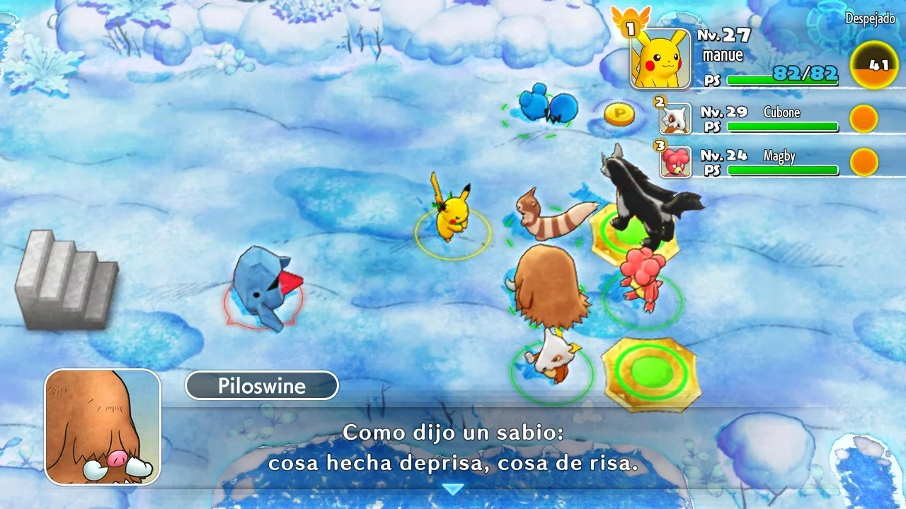
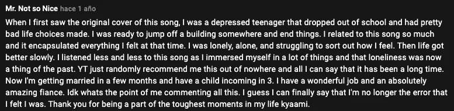
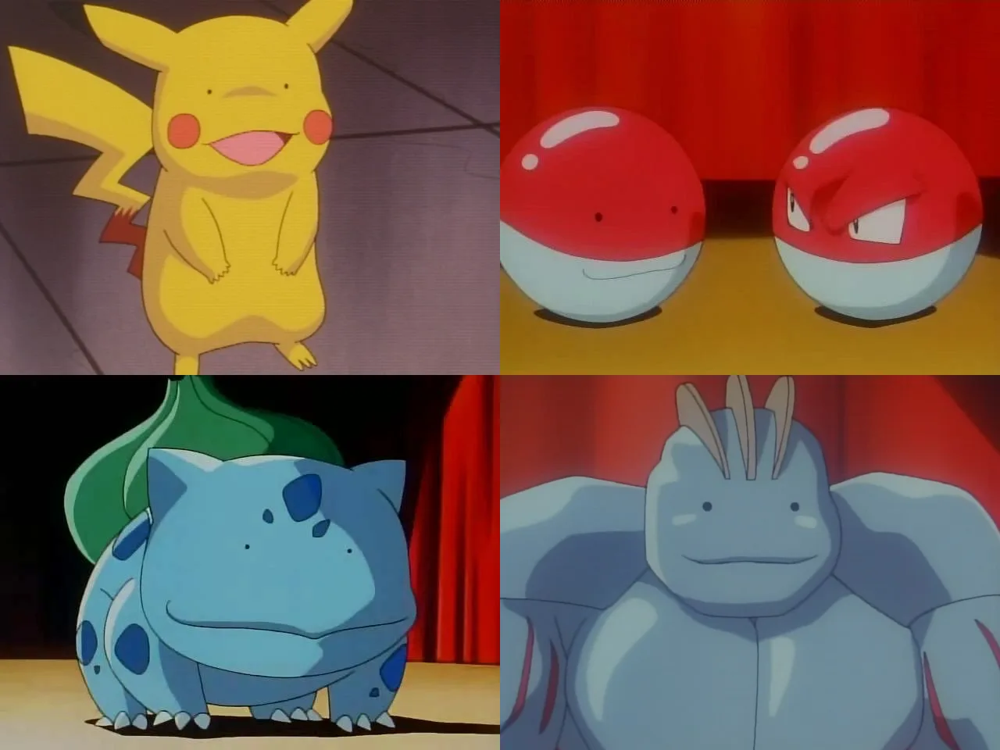
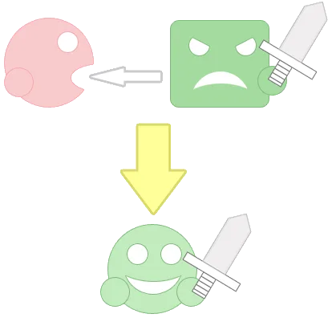
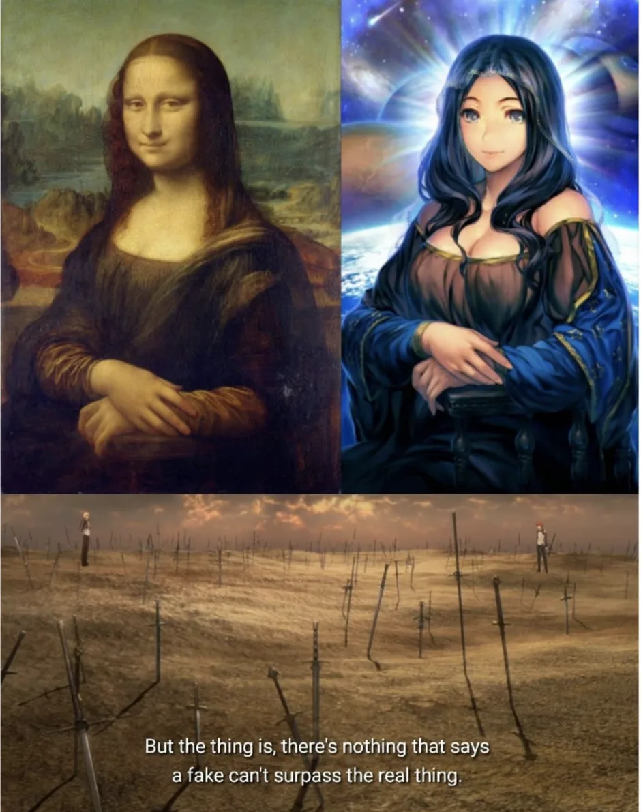
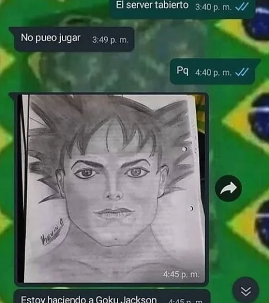

<!doctype html>
<html lang="es" data-predefined-style="true" data-css-presets="true" data-typography-preset>
<head>
  <meta charset="utf-8">
  <meta http-equiv="X-UA-Compatible" content="IE=edge">
  <meta name="viewport" content="width=device-width, initial-scale=1">
  <title>tfg — meowrhino</title>
  <meta name="description" content="cómo hacer algo pequeñito, consistente y honesto introducción   cómo hacer algo pequeñito, consistente y honesto es el título de mi Trabajo de Fin de Grado...">
  <link rel="icon" href="assets/freight/07185e0492_145268.ico">
  <meta property="og:type" content="website">
  <meta property="og:title" content="tfg — meowrhino">
  <meta property="og:description" content="cómo hacer algo pequeñito, consistente y honesto introducción   cómo hacer algo pequeñito, consistente y honesto es el título de mi Trabajo de Fin de Grado...">
  <meta property="og:image" content="https://meowrhino.github.io/tfg/assets/freight/88baf5011a_chicken.gif">
  <meta name="twitter:card" content="summary_large_image">
  <link rel="stylesheet" href="assets/css/foundation.css">
  <link rel="stylesheet" href="assets/css/base.css">
  <link rel="stylesheet" href="assets/css/galleries.css">
  <style>
/* tfg */
[local-style="19939998"] .container_width {
	width: 70% /*!variable_defaults*/;
}

[local-style="19939998"] body {
	background-color: initial /*!variable_defaults*/;
}

[local-style="19939998"] .backdrop {
}

[local-style="19939998"] .page {
}

[local-style="19939998"] .page_background {
	background-color: rgba(250, 215, 200, 0.2) /*!page_container_bgcolor*/;
}

[local-style="19939998"] .content_padding {
	padding-top: 2rem /*!main_margin*/;
	padding-bottom: 2rem /*!main_margin*/;
	padding-left: 2rem /*!main_margin*/;
	padding-right: 2rem /*!main_margin*/;
}

[data-predefined-style="true"] [local-style="19939998"] bodycopy {
}

[data-predefined-style="true"] [local-style="19939998"] bodycopy a {
}

[data-predefined-style="true"] [local-style="19939998"] bodycopy a:hover {
}

[data-predefined-style="true"] [local-style="19939998"] h1 {
}

[data-predefined-style="true"] [local-style="19939998"] h1 a {
}

[data-predefined-style="true"] [local-style="19939998"] h1 a:hover {
}

[data-predefined-style="true"] [local-style="19939998"] h2 {
}

[data-predefined-style="true"] [local-style="19939998"] h2 a {
}

[data-predefined-style="true"] [local-style="19939998"] h2 a:hover {
}

[data-predefined-style="true"] [local-style="19939998"] h3 {
}

[data-predefined-style="true"] [local-style="19939998"] h3 a {
}

[data-predefined-style="true"] [local-style="19939998"] h3 a:hover {
}

[data-predefined-style="true"] [local-style="19939998"] h4 {
}

[data-predefined-style="true"] [local-style="19939998"] h4 a {
}

[data-predefined-style="true"] [local-style="19939998"] h4 a:hover {
}

[data-predefined-style="true"] [local-style="19939998"] hover_blue:hover {
}

[data-predefined-style="true"] [local-style="19939998"] hover_blue:hover a {
}

[data-predefined-style="true"] [local-style="19939998"] hover_blue:hover a:hover {
}

[data-predefined-style="true"] [local-style="19939998"] hover_red:hover {
}

[data-predefined-style="true"] [local-style="19939998"] hover_red:hover a {
}

[data-predefined-style="true"] [local-style="19939998"] hover_red:hover a:hover {
}

[data-predefined-style="true"] [local-style="19939998"] hover_yellow:hover {
}

[data-predefined-style="true"] [local-style="19939998"] hover_yellow:hover a {
}

[data-predefined-style="true"] [local-style="19939998"] hover_yellow:hover a:hover {
}

[data-predefined-style="true"] [local-style="19939998"] small {
}

[data-predefined-style="true"] [local-style="19939998"] small a {
}

[data-predefined-style="true"] [local-style="19939998"] small a:hover {
}

[data-predefined-style="true"] [local-style="19939998"] biblio {
}

[data-predefined-style="true"] [local-style="19939998"] biblio a {
}

[data-predefined-style="true"] [local-style="19939998"] biblio a:hover {
}

[data-predefined-style="true"] [local-style="19939998"] a {
}

[data-predefined-style="true"] [local-style="19939998"] a a {
}

[data-predefined-style="true"] [local-style="19939998"] a a:hover {
}
  </style>
</head>
<body>
  <main class="main_container">
    <div class="page" local-style="19939998">
      <bodycopy class="bodycopy content content_padding">
        <div class="page_content clearfix">
<!-- título -->

<h1>cómo hacer algo pequeñito, consistente y honesto</h1><br><h3>introducción</h3>


<small><hover_yellow>cómo hacer algo pequeñito, consistente y honesto</hover_yellow> es el título de mi Trabajo de Fin de Grado (al que nos referiremos por sus siglas, TFG). El TFG es el último trabajo que se realiza en un grado universitario, en este trabajo último, se han de demostrar los conocimientos adquiridos en el grado que se acaba.</small><br>


<small>Bon día! yo soy manuel, y con este TFG cerraré mi camino por el <a href="https://www.uab.cat/web/estudiar/listado-de-grados/informacion-general/artes-y-diseno-escuela-adscrita-1216708258897.html?param1=1263194075953" target="_blank">Grado universitario en Artes y Diseño</a>, ofrecido por la <a href="https://ca.wikipedia.org/wiki/Escola_Massana" target="_blank">Escola Massana.</a></small><br>

<small>El tono que encontrarás leyendo este TFG es un tono <hover_red>atravesado</hover_red>, porque se tratarán temas que han atravesado a manuel, y es importante que estas emociones que mueven a manuel se vean en este trabajo. Si omitiese lo <hover_red>atravesado</hover_red>, estaría cargándome lo <hover_red>honesto.</hover_red></small><br>

<small>El formato es el de una <hover_blue>web.</hover_blue> Una web es un buen lugar donde puede estar conectado a todos los elementos que atraviesan este trabajo, además de ser accesible desde cualquier lugar. La copia impresa es limitada, y los pdfs pueden ser farragosos de leer. El formato web se propone como un formato que ameniza la lectura y la hace más accesible.</small><br>

<small>Si te pasa como a mí, que las líneas de texto muy largas se te hacen difíciles de leer, te recomiendo que no lo leas en pantalla completa en ordenador, sino que pruebes a reducir la anchura de la ventana a la longitud de línea que te sea cómoda, o que incluso disfrutes de su lectura en tu teléfono.</small><br>

<small>Tambien quiero advertirte que los trozos de texto en un color más oscuro son <a href="https://es.wikipedia.org/wiki/Hiperenlace" target="_blank">hipervínculos</a> que te llevarán a cosas relacionadas, puedes tanto ignorarlos por completo, verlos rigurosamente todos, o el punto medio que te apetezca. A veces son ejemplos, a veces son cosas que me han recordado a lo que digo, pueden ser desde enlaces a <a href="https://es.wikipedia.org/wiki/Wikipedia:Portada" target="_blank">Wikipedia</a>, vídeos de Youtube o <a href="https://www.vice.com/es/article/m7jem8/diferencia-de-edad-sexo-relaciones-hombres-gay-cultura-pederastia" target="_blank">artículos de internet,</a> y otras veces son los documentos de los que hablo, como sucede en tablitas o en las demos que presento.</small><br>

<small>Dicho ésto, comenzaré primero por un "pre-TFG" donde te explicaré claves para la comprensión de mi trabajo. ¡Espero que disfrutes la lectura!</small><br><br>

<!-- un tfg procedimental -->

<h3>un tfg <hover_red>procedimental</hover_red></h3>

<small>Me encuentro aún aprendiendo no solo a producir música sino trabajando otras cosas <i>no-musicales</i>. Compartir lo que voy haciendo es algo que me cuesta, y voy trabajando poco a poco en ello.</small><br>

<small>Quizá el paso que más me ha costado dar en todo el tfg fue cuando <a href="https://enricfarresduran.com/" target="_blank">Enric Farrés</a> vino al sense paraules<sup>1</sup> y escuché las demos en voz alta, delante de todos mis compañeros.</small><br>

<small>Recuerdo llegar a casa súper cansado ese día, con una mezcla entre estrés, espectativas, miedos y tranquilidad.</small><br>

<small>Me sitúo en un momento en el que tengo que cerrar este trabajo. Presentaré las piezas que he ido generando como demos. La canción de manuel llegará. Quizá llegue en verano o después de verano, pero ahora mismo creo que a la canción que producirá manuel le queda trabajo, y me lo quiero tomar con calma.<sup>a</sup></small><br>

<small>Al tratarse de un TFG con una expectativa, es un TFG "procedimental", con un objetivo más o menos claro.</small>
<br>

<!-- un tfg procedimental notas -->

<smaller><sup><a href="tfg_procedimental" >1</a></sup> Actividad propuesta por el tutor (<a href="https://www.instagram.com/victorvalentinpuerto/" target="_blank">Víctor</a>) para el 24 de marzo. Consistía en enseñar lo que fuese en 5 minutos, sin que el estudiante hablase, para comprobar si se comprende o no el trabajo por sí solo.<br>


<sup>a&nbsp;</sup>Captura de pantalla del videojuego&nbsp;<a href="https://www.nintendo.es/Juegos/Nintendo-Switch/Pokemon-Mundo-misterioso-equipo-de-rescate-DX-1695693.html" target="_blank">Pokémon Mundo Misterioso: Equipo de Rescate DX</a> para Nintendo Switch. [videojuego]. [fecha de salida: 6 marzo 2020]. [desarrollado por <a href="https://www.spike-chunsoft.com/" target="_blank">Spike Chunsoft</a>]<br>
</smaller><br><br>
<br>

<!-- dónde está manuel -->


<h3><hover_red>dónde</hover_red> está <hover_yellow>manuel</hover_yellow></h3>

<small><hover_yellow>manuel</hover_yellow><sup>2</sup> está un poco perdido. Llevo un tiempo confundido con ésto del arte contemporáneo, mezclado con algunos comentarios en relación con mi bolsa de referentes.</small><br>

<small>Los trabajos que he hecho en el marco académico siempre eran exigidos de referentes, hasta de iniciarse a partir de ellos. Pero hasta hace poco cuando usaba referentes más <i>míos</i> me sentía inseguro en lugar de acompañado.</small><br>

<small>Siento que cuando referencio algo relacionado con estos mundos del arte contemporáneo nunca hay problemas: Son los referentes que se espera de un estudiante medio de arte o diseño. En cambio, cuando soy <hover_yellow>honesto</hover_yellow> y parto de alguna canción que resuena con lo que hablo, hablo de algún videojuego donde se tocan temas similares a los que quiero tratar, o si cito algo de <hover_red>animación</hover_red>, tengo que explicarlo excesivamente bien, tengo que asegurarme que todo el mundo lo entiende y que no hace ninguna fuga, porque si la hace, en lugar de querer acercarse a ese referente, el referente genera rechazo y se recomienda su omisión.</small><br>

<small>Me parece una falta de honestidad y una falta de <hover_red>respeto</hover_red> a mis referentes. Me parece una falta de <hover_red>respeto</hover_red> a las cosas con las que he crecido, y las cosas que me han hecho crecer hasta ser la persona que soy ahora. Es una falta de <hover_red>respeto</hover_red> no solo hacia mis referentes, sino hacia manuel, quien ha vivido con ellos.</small>

<small>Cuando digo: "<hover_red>me gusta</hover_red>" me miran súper raro siempre. En cambio, cuando <i>cumplo</i> y digo: "me parece interesante" todo el mundo asiente aunque entiendan lo que digo. Es como si hiciese el <i>check</i> de <hover_blue>cómo se tienen que hacer las cosas</hover_blue>. Unas maneras ante las que me posiciono <hover_red>en contra</hover_red>. En este trabajo, propongo recuperar, empoderar y abrazar el gusto personal para partir con él a hacer el trabajo más importante de la carrera.</small><br>

<small>Por otro lado está el tema del arte contemporáneo, y cómo manuel se relaciona con éste. <a href="https://www.instagram.com/victorvalentinpuerto/ " target="_blank">Víctor</a> dijo una vez que el <i>underground</i> es darse palmaditas en las espaldas los unos a los otros, y de alguna forma siento el arte contemporáneo así. Me doy cuenta de que quizá, ahora mismo, no sea el camino que quiero tomar.</small><br>

<small>Lo que no quita que igual en 3 años piense distinto, y esté en otro sitio, haciendo otras cosas. </small><br>

<!-- dónde está manuel notas -->

<smaller><sup>2</sup> Iré bailando entre hablar desde el “yo”, y hablar de “manuel”(es) diversos en el tiempo. El recurso de variar entre primera y tercera persona me ayuda a regular la implicación emocional atravesada (1a persona) con la observación más objetiva (3a persona).</smaller><br><br>
<br>

<!-- un manuel honesto -->

<h3>un manuel honesto </h3>

<small>Mi último trabajo consiste en un ejercicio de honestidad. No por Massana, sino por manuel. Quiero darme el espacio para ver qué sucede cuando manuel es 100% manuel, sin aditivos.</small><br>

<small>Por muchas capas de motivos no me había dejado disfrutar honestamente del pop. En algún momento relacioné lo pop con algo malo. Vengo de una infancia un poco rara y un poco dura. Los gustos que han construido a manuel durante esos años son bastante <i>nicho</i>, y son así porque era una manera de protegerme, en mis gustos. Un pequeño cobijo de manuel, solo para manuel.</small><br>

<small>Y en algún momento acabé convencido de que todo lo que estuviese fuera de este resguardo me generaba rechazo. Un rechazo que seguramente naciese de un miedo a salir, a mostrarme, a brillar. Durante este tiempo que me he dado para mí, me he dado cuenta de que el pop trata de compartir, de un <i>juntos</i>, y éso que tanto me abrumaba, ahora que me dejo atravesar por ello, me llena de una manera que nunca había imaginado.</small><br>

<small>Me he dado cuenta de que el pop es algo cálido. De que nos merecemos cantar sobre cosas felices<sup>b</sup>, que los adultos también son felices, y que la alegría adolescente no es menos madura que la complejidad adulta o el miedo infantil.</small><br>

<small>Y por eso este trabajo tiene ese tono tan personal, porque es un <hover_red>statement</hover_red>. Hasta ahora nadie ha defendido mis gustos, ni yo mismo. Nunca había ni aprendido a hacerlo, ni había estado mentalmente donde estoy ahora. Ahora sí soy capaz de defender esta cuevita de manuel, y no solo de ello, sino de salir de ella.</small><br>

<!-- un manuel honesto notas -->

<smaller> <sup>b</sup> extracto de <a href="https://www.youtube.com/watch?v=U4daHlqAtmU">Dua Lipa Wins Best Pop Vocal Album | 2021 GRAMMY Awards Show Acceptance Speech</a>, video oficial de la entrega de los GRAMMYs y discurso de Dua Lipa. [vídeo] [subido al canal oficial <a href="https://www.youtube.com/channel/UCq4isO8ZYOZfmvGJ-_1UdIA">Recording Academy / GRAMMYs</a>] [subido el 15 marzo 2021] [última consulta: 2 junio 2021] [en línea] URL: <a href="https://www.youtube.com/watch?v=U4daHlqAtmU">https://www.youtube.com/watch?v=U4daHlqAtmU</a><br> <a href="https://www.youtube.com/watch?v=U4daHlqAtmU" target="_blank"></a>

<figure>
    <audio controls="" src="assets/files/about-happiness-dua-lipa.m4a">
    </audio>

</figure></smaller><br><br>

<!-- donde el arte pregunta el pop responde -->

<h3>donde el arte <hover_blue>pregunta</hover_blue>, el pop <hover_red>responde</hover_red></h3>

<small>Siento que el arte es experto en generar preguntas, espectadores, y sujetos sugestionados. El arte encuentra relaciones misteriosas y estéticas fascinantes, reflexivas, y hermosas.</small><br>

<small>Pero ahora mismo, el momento de crisis a tantos niveles que estamos viviendo, no solo a nivel global con la situación pandémica y todo lo que acarrea a nivel social, económico y hasta político, sino también a nivel personal está siendo un momento de crisis, de cierre de etapas y de replanteamientos profundos sobre manuel y sobre el futuro de manuel.</small><br>

<small>Es en esta situación tan compleja que se me hace bola formular más preguntas. Que creo que es importante dejar de generar espectadores y comenzar a articular actores. No ya por el mundo en sí, sino porque me estresa tener más preguntas sin responder de las que ya tengo. No quiero preguntarme más. Quiero respuestas. De hecho, quiero que me den respuestas antes de sus preguntas.</small><br>

<small>Y es en este momento tan complejo que me atrae tanto el pop, porque es capaz de adelantarse a la pregunta.</small><br><br><br><br>
<br>

<!-- TFG -->

<!-- titulo again -->

<h1>cómo hacer algo pequeñito, consistente y honesto</h1><br>

<!-- abstract -->

<div style="text-align: center"><h3>abstract</h3></div><small>Este trabajo comienza con la voluntad de hacer una canción, y trata del camino que se realiza hasta esa canción. Me propongo identificar qué cosas me gustan y por qué me gustan, centrándome en canciones que me gustan, archivando este proceso y sus descubrimientos.</small><br>

<small>Hecho ésto, me planteo hacer uso de esta base de datos para comenzar a crear mediante una <hover_yellow>copia honesta</hover_yellow>, navegando la información obtenida y ordenada para encontrar las claves a imitar.&nbsp;</small><br>

<!-- indice comentado -->

<h3>índice comentado</h3>

<div style="text-align: left">

<small>Tras la introducción de el pop tiene lo que el arte ha perdido, el trabajo se divide en 4 grandes bloques.</small><br>

<small>En <hover_blue>el lenguaje y sus cosas</hover_blue> partiremos del lenguaje para superarlo, hablaremos de sus texturas, sus distintos colores, y de maneras de pensarlos y activarlos. De canciones como puntos de partida para llegar a historias, y de las historias detrás y más allá de las canciones, hasta llegar al pop.</small><br>

<small>En <hover_yellow>el aprendizaje pop</hover_yellow> repensaremos brevemente la copia y en el niño como figura clave para ésta, el posicionamiento que he tratado de copiar durante este TFG</small><br>

<small>En <hover_blue>metodologías de manuel para el pop</hover_blue> hablaré sobre el camino que he realizado a lo largo de 6 meses para descubrir, desbloquear y empoderar mis gustos. Hablaremos de mis gustos con muchos ejemplos, y de cómo conforman el manuel que hay ahora. También hablaremos de maneras de descubrirlos, archivarlos y activarlos, y de otros archivos clave en la producción de todo ésto.</small><br>

<small>En <hover_red>para hacer pop</hover_red> recuperaremos la copia para compararla con dos personajes que basan su identidad en ella, y para pensar cosas que generan tanto la copia como el ocultamiento de ésta. Propondremos una definición de copia honesta.</small><br>

<small>Tras estos cuatro bloques, el último capítulo de dónde se queda manuel están las demos de canciones realizadas a lo largo del mes de marzo, lo que se ha pensado alrededor de éstas, y cómo se continuará este trabajo más allá de la entrega.</small><br>


</div>

<!-- palabras clave -->

<div style="text-align: center"><h3>palabras <hover_blue>clave</hover_blue></h3></div><div style="text-align: center">

<small>

<hover_yellow>honestidad</hover_yellow>,
copia, <hover_red>gustos</hover_red>, 
<hover_blue>pop</hover_blue>, manuel</small></div><br><br>

<!-- el pop tiene lo que el arte ha perdido -->

<h2>el pop <hover_red>tiene</hover_red> lo que el arte <hover_blue>ha perdido</hover_blue></h2>

<small>Vivimos un momento muy, muy raro. Derechos que en principio deberían ser obvios e irrevocables no solo son privados sino también estigmatizados.</small><br>

<small>El malestar que ésto genera se normaliza y estanca. Se priva al malestar de su capacidad explosiva de una manera violenta e invisible. Hay tantas noticias como<a href="https://cincodias.elpais.com/cincodias/2020/06/17/companias/1592407660_997648.html" target="_blank"> expertos calculan que los nuevos casos de depresión, ansiedad, insomnio y otros trastornos mentales subirán un 20%</a> o <a href="https://www.efesalud.com/depresion-grave-ansiedad-efectos-psicologia-pandemia/" target="_blank">uno de cada 4 españoles presenta síntomas relacionados con la depresión grave o moderada por la COVID-19</a> que acaban por no impresionar a nadie. Acaba por convertirse en “un mal trago que pasará”. Se <hover_blue>normalizan</hover_blue>.</small><br>

<small>El hecho de que estas nuevas prohibiciones se incluyan en un marco que se llama <hover_blue><i>nueva normalidad</i></hover_blue> es violento. Es un uso violento del lenguaje, perverso, activando esta capacidad vinculante de la realidad para distorsiornarla. No se llama <hover_yellow>medidas mientras suceda ésto</hover_yellow> sino <hover_blue><i>nueva normalidad</i></hover_blue>. Es una elección inteligente e intencionada, con unos objetivos de control y sumisión muy claros.</small><br>

<small>En este contexto que defino como <hover_blue>violento</hover_blue>, veo cómo el <a href="https://es.wikipedia.org/wiki/Museo_de_Arte_Contempor%C3%A1neo_de_Barcelona">MACBA</a> dirige sus recursos a <a href="https://www.macba.cat/es/exposiciones-actividades/exposiciones/felix-gonzalez-torres-politica-relacion" target="_blank">monográficas de artistas</a>&nbsp;o a <a href="https://www.macba.cat/es/exposiciones-actividades/exposiciones/muestreo-4-cosas-que-pasan" target="_blank">invitarnos a remover su archivo</a>. Ignorando totalmente esta violencia. De la misma manera que llamar nueva normalidad a un marco de normas tiene un objetivo, no hablar de lo que sucede tiene un objetivo claro: ignorarlo. Normalizarlo. No se habla de lo cotidiano porque no hace falta, porque es cotidiano. Al no hablar de algo intentas cotidianizarlo, normalizarlo.</small><br>


<small>Donde el arte <a href="https://www.fundacionlengua.com/es/hacerse-sueco/art/168/" target="_blank">se hace el sueco</a>&nbsp;te pregunto: ¿Quién reivindica la noche que hemos perdido? 
¿Quién habla del día a día que ha quedado roto debido a legislaciones que ponen el énfasis en el sacrificio del ciudadano, en lugar de protegernos desde el estado?
¿Quién denuncia esta violencia?
¿Quién nos abraza cuando nada tiene sentido? ¿Quién nos explica lo que sucede cuando no entendemos nada?</small><br>

<small>¿Quién <a href="https://www.youtube.com/watch?v=i_JvNU4dA3Y&amp;t=158s" target="_blank">nos manda ánimos</a>?</small><br>

<small>El arte se me hace una bola que se da vueltas a sí mismo ignorando lo que le rodea. Es una bola que está ahí, a la que no es difícil llegar. Una bola en la que puedes vivir pero sólo éso, una bola ahí apartada del mundo, cobijada en su cubito blanco impoluto activamente ignorando las manchas que le envuelven.</small><br>

<small>Siento que desde que el arte se desentendió de la realidad el arte perdió algo importantísimo. Algo que no sabría poner en palabras. Quizá es desde entonces que necesita del cubo blanco para existir. El hueco que deja lo que ha perdido no le permite sostenerse, es un agujero que el arte no ha sabido llenar.</small><br>

<small>Ahora que <a href="https://youtu.be/i_JvNU4dA3Y?t=93" target="_blank">el mundo se ha parado</a> es cuando me he dado cuenta de que el arte se me hace bola. Me he dado cuenta de que el manuel de ahora mismo no quiere formar parte de un arte que no pueda explicar a su abuela sin pies de pagina. Me he dado cuenta de que este arte no se me hace ni <hover_yellow>pequeñito</hover_yellow>, ni <hover_red>consistente</hover_red>, ni <hover_blue>honesto</hover_blue>.<br></small>

<small>¿Qué sentido tiene hablar de arte cuando <a href="https://open.spotify.com/track/3vjtzgGFqelJEIrSbZNCTR?si=c35c8c74a0c74a07" target="_blank">yo lo que quiero es irme de fiesta</a>?</small>

<small>En cambio el pop mantiene esa consecuencia con el mundo. El pop está y permanece conectado con lo que sucede, y <a href="https://youtu.be/i_JvNU4dA3Y?t=135" target="_blank">se plantea si hacerse el loco o no</a>, mientras que el arte no deja de dar vueltas, mareado y mareando.</small><br>

<small>Una de las cosas que me atraviesan en este trabajo atravesado, es la pregunta de <i><hover_blue>¿lo entendería mi abuela?</hover_blue></i>. Noto cómo me muevo hacia uno u otro lado en respuesta a ésto. No hablo de comprensión lingüística, sino de cercanía, de pequeñez y honestidad en un mundo que se ahoga en complejidad. Hablo de conexión en tiempos de aislamiento.</small><br>

<small><hover_red>El pop tiene lo que el arte ha perdido.</hover_red></small><br><br><br>

<!-- el lenguaje y sus cosas -->

<!-- el lenguaje y sus cosas -->

<h2>el lenguaje y sus cosas</h2>

<small>De lo primero que me di cuenta al analizar mis gustos fue de la cuestión del <hover_blue>idioma</hover_blue>. El manuel pre-adolescente sólo consumía cosas en <a href="https://es.wikipedia.org/wiki/Idioma_japon%C3%A9s" target="_blank">japonés</a>. Ese manuel encontró por destino o casualidad las historias que necesitaba en ese momento en ese formato y en ese idioma, aunque no puedo negar la sensación de seguridad que me ofrecía la barrera lingüística. Era un secreto entre manuel e internet. Podía poner canciones en voz alta en casa, en cualquier momento, que nadie entendería qué sentía o pensaba manuel. &nbsp;</small><br>

<small>Esta barrera lingüística generaba la necesidad entre un mediador entre todo este contenido y manuel, y gracias a ella accedí a ciertas comunidades en internet. Nunca he pensado en los subtítulos como algo negativo, sino como una manera no solo de preservar el original (pues en la traducción se pierden matices, chistes internos y detalles de la cultura original), sino esos subtítulos son lugares donde se pueden <a href="https://www.youtube.com/watch?v=t_snS5DfSdg" target="_blank">generar comunidades</a>. Los subtítulos que consumía eran <a href="https://es.wikipedia.org/wiki/Fansub" target="_blank">totalmente gratuitos y autogestionados por grupos de personas que desde la generosidad querían acercar estas historias a otras personas</a>.</small><br>

<small>En esos años en los que estuve tan sumergido en otro idioma comencé a comprender que había algo más allá de los subtítulos en el idioma. Sin los subtítulos igual no entendía del todo lo que sucedía, pero había algo repartido en el tono, el contexto, los colores, los sonidos y gestos que me acompañaban a hacer algo que definiré como <hover_blue>traducción emocional<hover_blue>.</hover_blue></hover_blue></small><br><br>

<!-- la traducción emocional -->

<h3>la traducción <hover_red>emocional</hover_red></h3>

<small>La traducción emocional es lo que ocurre cuando el contenido de la letra se diluye porque se comprende algo visceral. Es <a href="https://www.youtube.com/watch?v=tcQHkNfzmnU" target="_blank">el momento en que un personaje muere</a>, el momento en que <a href="https://www.youtube.com/watch?v=ZiueX-jIdNI" target="_blank">algo se logra</a> o <a href="https://www.youtube.com/watch?v=dxQR1tXDYkM" target="_blank">algo se pierde para siempre</a>. Son momentos que trascienden el idioma, cosas universales que se transmiten a través de lenguajes pero que una vez comprendidas, dejan de necesitarlo.</small><br>

<small>En la música es bien claro: las canciones, ya partan de <a href="https://open.spotify.com/track/7un1IR03D5E8HQjjYEaSEh?si=87afc2b082a84d74" target="_blank">sucesos muy específicos</a> o <a href="https://www.youtube.com/watch?v=XoYu7K6Ywkg&amp;ab_channel=Paramore" target="_blank">generales</a>, a través de las capas que tienen consiguen llegar mucho más lejos de esta primera vivencia personal. Al añadir capas sobre un relato, las canciones consiguen alcanzar ese <hover_red>algo</hover_red> tan <hover_yellow>pequeñito</hover_yellow> que está más allá del lenguaje. El añadir capas en la música no añade complejidad, sino hace accesible ese <hover_red>algo</hover_red> que trasciende las palabras.</small><br>

<small><a href="https://www.youtube.com/watch?v=dH9W5LRcVzk" target="_blank">Flying Free de Pont Aeri</a> es un momento clave, específico de una fiesta. El momento puede ser distinto para cada persona, pero es exactamente ese momento, no es otro. <a href="https://www.youtube.com/watch?v=ARt9HV9T0w8" target="_blank">I Will Survive de Gloria Gaynor</a>, trata un duelo determinado, pero no sólo éso, sino un posicionamiento en este duelo, una fortaleza. <a href="https://www.youtube.com/watch?v=soBnLUhWB7g" target="_blank">Titanium de David Guetta</a> ha conseguido pasar de ser electrónica comercial a un grito de guerra para muchas comunidades discriminadas, una canción que cantas para desenterrar y gritar algo muy profundo.</small><br>

<small>Todas estas canciones partieron de una idea, una anécdota, o quizá una emoción simple o compleja. Pueden partir también de voluntades de transmitir algo difícil de explicar,  de acordes que de repente sonaban bien, o de una melodía que se le ocurrió a alguien mientras pagaba en la caja del súper. </small><br>

<small>Esta semilla que puede venir de muchos sitios distintos se convierte en otra cosa. No es una semilla de árbol porque no sabemos en qué se convierte esa semilla. Depende mucho de la gente que la trabaje, la cuide, y del entorno donde crezca.</small><br>

<small>No sabría decir qué es, pero hay algo claro del <hover_blue>japón virtual</hover_blue> al que huí que hizo que las semillas que se cultivaban ahí resonasen muchísimo más con manuel que las que crecían al lado suya.</small><br>

<small>Por poner ejemplos personales, para mí&nbsp;<a href="https://www.youtube.com/watch?v=12UdIg_wIGQ" target="_blank">Honey de Vocaloid</a> fue la canción con la que entré en Vocaloid. Recuerdo perfectamente el momento en el que un amigo de <a href="https://es.wikipedia.org/wiki/MSN_Messenger" target="_blank">messenger</a> me la pasó y cómo resonó esta canción en mí. Recuerdo perfectamente cómo ese <hover_red>algo</hover_red> me atravesó por completo. <a href="https://www.youtube.com/watch?v=ByDHbOky47A" target="_blank">Superstar de Marina</a> habla del viaje a Grecia: la escuché en un momento muy específico de este viaje, y la relacioné con una persona especial que conocí allí. <a href="https://www.youtube.com/watch?v=8Hg_rIqOZHc" target="_blank">Chandelier de Sia</a> es la primera canción que hice en clase de canto, porque el manuel que la escogió quería conseguir esa visceralidad con la que canta Sia y sentía que con esa canción podía acercarse. <a href="https://www.youtube.com/watch?v=uKxyLmbOc0Q&amp;ab_channel=%2anamirin" target="_blank">Renai Circulation de Bakemonogatari</a> me recuerda lo feliz que soy de que me guste lo que me gusta. Cada vez que suena en algún lugar me pongo inexplicablemente contento. <a href="https://www.youtube.com/watch?v=BYkA4gt0wUc&amp;ab_channel=CleanBandit" target="_blank">Baby de Clear Bandit</a> me recuerda a mi primera pareja, y cómo miro esa relación desde el manuel de ahora. Las miradas del manuel de entonces y el de ahora se entremezclan en el lugar que crea esa canción. </small><br>

<small>La semilla que dio fruto a todo ésto no es relevante. Pasadas por manuel estas canciones crecen y tocan cosas más allá de ellas, y es esta emoción situada de manuel lo bonito, lo <hover_yellow>pequeñito</hover_yellow>, lo <hover_red>consistente</hover_red>, y lo <hover_blue>honesto</hover_blue>.</small><br>

<small>La canción de Tusa lo explica muy bien:&nbsp;<i><a href="https://youtu.be/tbneQDc2H3I?t=38" target="_blank">pero si le ponen la canción, le da una depresión tonta</a></i><sup>3</sup>. La canción da igual, ni se nombra. Lo fuerte, lo que da esa <hover_red>fuerza</hover_red> a la canción, es la traducción emocional que ha hecho la persona.</small><br>

<!-- la traducción emocional notas -->

<smaller><sup>3</sup> enlace al minuto 0:38 del vídeo <a href="https://youtu.be/tbneQDc2H3I" target="_blank">KAROL G, Nicki Minaj - Tusa (Official Video)</a> canción de <a href="https://www.youtube.com/channel/UCZuPJZ2kGFdlbQu1qotZaHw" target="_blank">KAROL G</a> y <a href="https://www.youtube.com/channel/UC3jOd7GUMhpgJRBhiLzuLsg" target="_blank">Nicki Minaj</a> [videoclip] [subido al canal oficial <a href="https://www.youtube.com/channel/UCZuPJZ2kGFdlbQu1qotZaHw">KAROL G</a>] [fecha: 8 noviembre 2019] [última consulta: 2 junio 2021] [en línea] [album de la canción original: <a href="https://open.spotify.com/album/5CS8E6JVACItYto4OOJoPW?si=oTn7cfF1TlW8GVNAJLAcGg" target="_blank">KG0519</a>] [año de publicación del album: 2021] URL: <a href="https://www.youtube.com/watch?v=tbneQDc2H3I" target="_blank">https://www.youtube.com/watch?v=tbneQDc2H3I</a><br>


<a href="https://www.youtube.com/watch?v=tbneQDc2H3I"></a></smaller><br><br>
<br>

<!-- las historias -->

<h3>las historias</h3>

<small>La traducción lingüística traduce entre dos idiomas, dos canales que transmiten algo. Según la actitud hacia ese algo las dividimos en traducciones fieles o traducciones adaptativas. Las traducciones <hover_blue>fieles</hover_blue> tienen como objetivo conservar la mayor parte de ese "algo", pero pueden dificultar la lectura en el idioma traducido, en cambio las traducciones <hover_blue>adaptativas</hover_blue> se centran en que lo traducido sea accesible al lector, permitiéndose modificar en cierta medida el mensaje original en el proceso de traducción<sup>3</sup>. </small><br>

<small>La traducción emocional traduce entre <hover_red>historias</hover_red>. Todas las canciones cuentan historias, de hecho, todas las cosas cuentan historias, desde el <a href="https://historia-arte.com/obras/que-es-lo-que-hace-que-las-hogares-de-hoy-sean-tan-diferentes-tan-atractivos" target="_blank">primer cuadro pop</a> hasta el detergente que usamos para lavar la ropa. Si tenemos muchas plantas o ninguna, un <a href="https://www.elmundo.es/albumes/2008/09/25/pongos_vlc/index.html" target="_blank">pongo</a> que está dando vueltas por casa... Puede ser la historia de <hover_yellow>por qué</hover_yellow> está ése y no otro, la historia de <hover_yellow>cómo</hover_yellow> llegó a donde está, o la historia de <hover_yellow>por qué</hover_yellow> está donde está, la historia que cuenta su forma, sus colores, su material, su procedencia, etc.</small><br>

<small>Son precisamente esas historias el  <hover_red>corazón</hover_red> del pop, es porque están estas historias y porque se traducen a otras historias en cada persona que el pop tiene esa vida que el arte ha perdido. El pongo que mencionábamos antes se transforma de una casa a otra, y cuando alguien pregunta la respuesta genera emociones, genera cercanía. Cuando comprendes esa historia el pop te atraviesa.
Siento que el arte ha perdido sus historias. Es por eso que no puedo contarle a mi abuela qué he visto en una expo del MACBA, porque la historia está perdida y tengo que buscarla, arrancarla, o incluso inventármela, mediante explicaciones, contextualizaciones y aclaraciones.</small><br>

<small>Las historias tienen un poder increíble. Nos llevan a sitios, se traducen en nosotros y nos convierten en cosas, moviéndonos por dentro y por fuera.</small><br>

<small>Una de las primeras formas de enseñanza que conservamos son mitos y leyendas, porque son historias que hablan de cosas. Son tan antiguas porque son algo natural para las personas, y porque son formas de dar corazón a enseñanzas, haciéndolas&nbsp; cercanas y poderosas mediante ese vínculo que nos une a ellas. Desde hace mucho tiempo tenemos esta <i>consciencia inconsciente. </i>Esta voluntad innata de narrarnos.</small><br>

<!-- las historias notas -->

<smaller><sup>3</sup> <a href="https://blog-de-traduccion.trustedtranslations.com/author/veronicav" target="_blank">Verónica V</a>. <a href="https://blog-de-traduccion.trustedtranslations.com/traducciones-fieles-traducciones-funcionales-2018-06-18.html" target="_blank">¿Traducciones fieles o traducciones funcionales?</a>. <a href="https://blog-de-traduccion.trustedtranslations.com/" target="_blank"><i>https://blog-de-traduccion.trustedtranslations.com/</i></a> [en línea]. [fecha de publicación: 18 junio 2018] [última consulta: 2 junio 2021] URL: <a href="https://blog-de-traduccion.trustedtranslations.com/traducciones-fieles-traducciones-funcionales-2018-06-18.html" target="_blank">https://blog-de-traduccion.trustedtranslations.com/traducciones-fieles-traducciones-funcionales-2018-06-18.html</a><br>


<a href="https://blog-de-traduccion.trustedtranslations.com/traducciones-fieles-traducciones-funcionales-2018-06-18.html" target="_blank"></a></smaller><br><br>
<br>

<!-- el lenguaje -->

<h3>el lenguaje</h3>

<small> Al igual que el japonés me generaba una barrera lingüística que me era cómoda, siento que me relaciono con distintos idiomas de distintas maneras, distintos idiomas me generan distintas cosas.</small><br>

<small>Al vivir en Catalunya he aprendido a defenderme medianamente en catalán, pero me doy cuenta de que realmente sólo lo uso para o hacer un tipo específico de bromas o para decir cosas que me da miedo decir en castellano. Cuando rechazo algo y me genera una emoción fuerte el rechazo suelo preferir decirlo en catalán, de la misma manera que si se me ocurre algo que hará gracia, muchas veces me sale en un catalán muy específico. Me he dado cuenta también de que la gente bilingüe catalana <a href="https://i.pinimg.com/564x/a7/04/e4/a704e4269c0b91719e2a689b51d2433e.jpg" target="_blank">cambia al castellano para decir tacos</a> o insultar, pues se le asocia una sonoridad mas fuerte y al final, el uso que yo hago del catalán es parecido: evitar el peso de la sonoridad del castellano ya sea por una emoción negativa a esquivar o una emoción positiva a potenciar.</small><br>

<small>También me pasa con el inglés. Al haber crecido con internet hay ciertas palabras que&nbsp; sé en inglés y que activamente prefiero usar en inglés porque definen algo más exacto, o porque con menos sílabas llego antes a la clave que quiero explicar. El castellano se me hace un poco largo y, por prisa y por un factor generacional, el inglés me queda más exacto y rápido. Pero al igual que con el ejemplo del catalán/castellano que hablábamos antes, no es algo que sólo me pase a mí: el inglés invade nuestro léxico común, conquistando <a href="https://www.youtube.com/watch?v=VCzPfXHE6U4" target="_blank">la frontera generacional</a> cada vez más.</small><br>

<small>Influenciado por internet, un lugar que superando la geografía genera espacios donde los idiomas conviven, poco a poco las barreras entre los idiomas van desapareciendo y disipándose.</small><br>

<small>Muchas canciones usan la modulación lingüística con un objetivo estético: <a href="https://youtu.be/qAOXHdLdlqQ?t=35" target="_blank">Do It For Your Lover de Manel Navarro</a> y <a href="https://youtu.be/6CBp4qylX6I?t=54" target="_blank">This Game de No Game No Life</a>, dos canciones totalmente distintas (siendo la primera una canción para <a href="https://es.wikipedia.org/wiki/Festival_de_la_Canci%C3%B3n_de_Eurovisi%C3%B3n" target="_blank">Eurovisión</a> y la segunda el <a href="https://es.wikipedia.org/wiki/Secuencia_de_apertura">opening</a> de <a href="https://www.youtube.com/watch?v=M-WGvxGehf8" target="_blank">No Game No Life</a>) ambas en el estribillo, la parte más brillante de la canción, cambian al inglés para conseguir un sonido más internacional, más <i><hover_blue>cool</hover_blue></i>. Otro ejemplo son las canciones de <a href="http://youtube.com/watch?v=UAsjM8kLvuE" target="_blank">Mitsubachi</a> o <a href="https://www.youtube.com/watch?v=3GcgxkZuDjs" target="_blank">Fushicho</a> del grupo japonés <a href="https://www.youtube.com/user/ProjectMili" target="_blank">Mili</a>, donde se modula al francés buscando la delicadeza y elegancia del idioma.</small><br>

<small>No se limita a canciónes: En la <a href="https://es.wikipedia.org/wiki/Novela_visual">novela visual</a> <a href="https://www.youtube.com/watch?v=4ERQJIF7dss">Umineko no Naku Koro ni Chiru</a>, cuando Dlanor A. Knox sentencia algo,&nbsp;<a href="https://youtu.be/hfJueMZJbIc?t=54" target="_blank">acaba la sentencia en inglés</a>. Erika Furudo, de la misma serie, cuando sabe que lleva la razón y chincha al protagonista, <a href="https://youtu.be/jfNaaqm8xPU?t=47" target="_blank">también lo hace en inglés</a>, buscando esa sonoridad más <i><hover_blue>cool</hover_blue></i> de la que hablábamos antes, más poderosa.</small><br>

<small>Tenemos también el ejemplo de <a href="https://es.wikipedia.org/wiki/Harry_Potter" target="_blank">Harry Potter</a>, donde&nbsp;<a href="https://harry-potter-compendium.fandom.com/wiki/List_of_spells" target="_blank">la mayoría de hechizos vienen de lenguas como el latín</a>, en esa búsqueda de un tono ancestral y poderoso, mágico.</small><br>

<small>Me gusta mucho el caso de <a href="https://es.wikipedia.org/wiki/Y%C5%ABki_Kajiura" target="_blank">Yuki Kajiura</a>, compositora de bandas sonoras de series como <a href="https://www.youtube.com/watch?v=W7SzlqdrkbA" target="_blank">Sword Art Online</a>, <a href="https://www.youtube.com/watch?v=9Psc_hBkOoc" target="_blank">Pandora Hearts</a>, <a href="https://www.youtube.com/watch?v=6CTHwEZK2JA" target="_blank">Puella Magi Madoka☆Magica</a>, <a href="https://www.youtube.com/watch?v=n-7PFiut1HI" target="_blank">Fate/Zero</a>, etc. para la banda sonora de Madoka, en temas como <a href="https://www.youtube.com/watch?v=btmSuNcxiIU&amp;ab_channel=Qonell" target="_blank">Sis Puella Magica!</a> o <a href="https://www.youtube.com/watch?v=WqQ3hP_q7Ns&amp;ab_channel=Loganwhoops" target="_blank">Credens Iustitiam</a>, usa el <a href="https://canta-per-me.net/lyrics/about-kajiurago/" target="_blank">Kajiurago</a>, un idioma “<a href="https://canta-per-me.net/lyrics/about-kajiurago/" target="_blank"><i>fabricado sólo para su pronunciación</i></a><sup>4</sup>”. Kajiura dice, 
cito literalmente: “<a href="https://canta-per-me.net/lyrics/about-kajiurago/"><i>si me preguntas por las ventajas de hacerlo, te diría que no está atado al significado, permitiendo a los oyentes la libertad para imaginarselo, y mucha más libertad para mí. [...] Hay libertad total en articulación, pues la letra no tiene sentido. Por ello, hay una libertad considerable al cantar</i><sup>4</sup></a>”.</small><br>

<small>También está el caso de la <i>early</i> <a href="https://es.wikipedia.org/wiki/Grimes_(cantante)" target="_blank">Grimes</a>. En la entrevista donde nos habla de sus álbumes, Grimes comienza la entrevista diciendo literalmente “<a href="https://www.youtube.com/watch?v=umoqd0VbRI4"><i>esta letra es pura basura</i></a> (sobre <a href="https://genius.com/Grimes-vanessa-lyrics" target="_blank">la letra de</a> <a href="https://www.youtube.com/watch?v=2-aWEYezEMk&amp;ab_channel=ArbutusRecords" target="_blank">Vanessa</a>). <a href="https://www.youtube.com/watch?v=umoqd0VbRI4" target="_blank"><i>Estaba tan loca que no me daba cuenta de que las canciones tenían letra, pensaba que la gente solo decía tonterías. Pensaba que todo iba bien si decias un montón de cosas aleatorias y muchas veces ‘baby’</i><sup>5</sup></a>”.</small><br>

<small>Encontré este vídeo<sup>c &nbsp;</sup>de <a href="https://www.youtube.com/channel/UCN9HPn2fq-NL8M5_kp4RWZQ">Sia</a> haciendo una demo de la canción de <a href="https://www.youtube.com/watch?v=lWA2pjMjpBs">Diamonds</a>&nbsp;que luego vendería a <a href="https://www.youtube.com/channel/UCcgqSM4YEo5vVQpqwN-MaNw">Rihanna</a>. Siento que es un video hermoso donde se ve a Sia liberarse del lenguaje para construir la canción, accediendo a la capa emotiva de la fonética, libre de su significado o sentido, consiguiendo evocar muchísimas cosas que no sé explicar.</small><br>

<small>El lenguaje es la herramienta que tenemos para transmitir historias, pero no debemos olvidar su parte matérica que hemos explorado en estos ejemplos. El lenguaje tiene una capa visceral, carnal, emotiva, y es interesante ver cómo se puede trabajar desde la desactivación de su significado a la modulación entre distintas lenguas con fines estéticos. Cada idioma, cada acento, cada palabra y cada fonema tiene una forma y una textura única que se puede sentir y cultivar. El lenguaje en sí es más que un canal para transmitir historias, cuenta historias en sí mismo.</small><br>

<!-- el lenguaje notas -->

<smaller><sup>4&nbsp;</sup>[<a href="https://canta-per-me.net/contact-and-credits/">múltiples editores</a>] <a href="https://canta-per-me.net/lyrics/about-kajiurago/">About Kajiurago</a> <a href="https://canta-per-me.net/"><i>https://canta-per-me.net/</i></a><i>. </i>[en línea] [última edición: 17 agosto 2017] [última consulta: 3 junio 2021] URL: <br><a href="https://canta-per-me.net/lyrics/about-kajiurago/">https://canta-per-me.net/lyrics/about-kajiurago</a><br>

<sup>5</sup> 
<a href="https://www.youtube.com/watch?v=umoqd0VbRI4">Grimes Breaks Down Her Albums, From Geidi Primes to Miss Anthropocene | On the Records | Pitchfork</a>, entrevista por Pitchfork realizada a Grimes [entrevista] [realizada por <a href="https://www.youtube.com/channel/UC7kI8WjpCfFoMSNDuRh_4lA">Pitchfork</a>] [subido al canal <a href="https://www.youtube.com/channel/UC7kI8WjpCfFoMSNDuRh_4lA">Pitchfork</a>] [fecha de subida: 16 abril 2020]&nbsp; [última consulta: 1 junio 2021] [en línea] URL: https://www.youtube.com/watch?v=umoqd0VbRI4<br>

<sup>c</sup><a href="https://www.youtube.com/watch?v=Xt_7h0t5ax4">Sia - Diamonds - Very first recording of Diamonds. Early attempt at creating the melody,</a> demo de la canción <a href="https://www.youtube.com/watch?v=lWA2pjMjpBs">Diamonds</a> producida por <a href="https://www.youtube.com/channel/UCN9HPn2fq-NL8M5_kp4RWZQ">Sia</a> y cantada por <a href="https://www.youtube.com/channel/UCcgqSM4YEo5vVQpqwN-MaNw">Rihanna</a> [videoclip] [subido al canal <a href="https://www.youtube.com/channel/UC-nhsM3e17JB2SlmQcwtr9A">Neptune V</a> [fecha: 21 julio 2014] [última consulta: 4 junio 2021] [en línea] URL: https://www.youtube.com/watch?v=Xt_7h0t5ax4<br>

<video preload="none" width="1440" height="1080" controls="" data-scale="80">
    <source src="assets/files/Sia---Diamonds---Very-first-recording-of-Diamonds.-Early-attempt-at-creating-the-melody.--1080p_30fps_H264-128kbit_AAC-.mp4" type="video/mp4">
</video>

</smaller><br><br>
<br>

<!-- los vacíos del lenguaje -->

<h3>los vacíos del lenguaje</h3><small><a href="https://www.instagram.com/bertavallribera/?hl=es">Berta Vallribera</a> introduce en su TFG un concepto hermoso: los <hover_blue>vacíos</hover_blue> del lenguaje. Me parece preciosa la imagen del lenguaje como algo poroso, y creo que encaja muy bien con la materialidad del lenguaje que reflexionábamos anteriormente.&nbsp;</small><br>

<small>Cerraré estos pensamientos sobre el lenguaje con dos pequeños trocitos de Berta, que hacen un bonito resumen:
</small><br>

<small><i>Una transformació que porta implícita la pèrdua degut al canvi en la naturalesa del missatge.<sup>6</sup>. (...) Els continguts que generem són idiolectals i, en tant que subjectius, manifestament emotius.<sup>7</sup></i>.</small>

<!-- los vacíos del lenguaje notas -->

<smaller><sup>6</sup> VALLRIBERA, Berta. Conjenctura dels buits. Apunts per a una Anatomía del Llenguatge i Disseny d'un Dinosaure, [trabajo de final de grado] [2020] pag. 11.<br>

<sup>7</sup> VALLRIBERA, Berta. Conjenctura dels buits. Apunts per a una Anatomía del Llenguatge i Disseny d'un Dinosaure, [trabajo de final de grado] [2020] pag. 17.</smaller><br><br>
<br>

<!-- los vacíos del pop -->

<h3><del>los vacíos del pop</del></h3>
<small>Recordando lo que decíamos anteriormente, la clave del pop son las historias y cómo éstas nos cambian, nos atraviesan y dan al pop su corazón. Estas historias necesitan un vehículo, el lenguaje a través del cual se transmiten. Nos hemos centrado en lenguajes como idiomas, pero podríamos hablar de cerámica, de audiovisuales, de danza, arquitectura, el <hover_yellow>recurso</hover_yellow> que se nos ocurra es susceptible de ser analizado como lenguaje que transmite historias.</small><br>

<small>Si este lenguaje tiene vacíos, ¿no tendría el pop que estar lleno de estos vacíos?</small><br>

<small>¡Pues no! Es al revés. No es que el pop esté repleto de estos vacíos, sino que el pop <i><hover_red>vive</hover_red></i> en estos vacíos. El lenguaje, en sus huecos aloja al pop, y son esos huecos donde de repente te levantas y bailas, donde tarareas una letra que realmente da igual porque lo importante es cómo te ha atravesado a ti. Son esos momentos donde te emocionas, donde comprendes y donde sientes. El pop está conectado con el mundo y su casa son esos huecos donde pasan cosas.</small><br><br>

<!-- el pop vive en los huecos -->

<h3>el pop vive en los huecos</h3><small>El pop vive en los huecos.</small><br>
<br><br>


<!-- metodologías de aprendizaje pop -->

<!-- el aprendizaje pop -->

<h2>el aprendizaje pop</h2><h3>ingeniería inversa para cosas pequeñitas, consistentes y honestas</h3>

<small>La palabra <hover_blue>ingeniería inversa</hover_blue> es una manera <i>fancy</i> de hablar de curiosidad y método. Wikipedia define ingeniería inversa como “<a href="https://es.wikipedia.org/wiki/Ingenier%C3%ADa_inversa"><i>la ingeniería inversa o retroingeniería es el proceso llevado a cabo con el objetivo de obtener información o un diseño a partir de un producto, con el fin de determinar cuáles son sus componentes y de qué manera interactúan entre sí y cuál fue el proceso de fabricación.</i>”</a><sup>8</sup></small><br>

<small>No hace falta querer hackear la NASA para activar la ingeniería inversa: un niño que abre su boli pilot en medio de una clase de primaria movido por una mezcla entre aburrimiento y curiosidad es súper valioso.</small><br>

<small>El niño lo hace <hover_yellow>honestamente</hover_yellow>, por aburrimiento y curiosidad, es <hover_red>consistente</hover_red>, en el proceso de desmontarlo y re-montarlo, y es <hover_blue>pequeñito</hover_blue>, es un acto que no cambiará absolutamente nada en el mundo, pero por éso es importante: es por éso que es <i>pop</i>,&nbsp; aparece tan rápido como desaparece, como el sonido de una palomita de microondas.</small><br>

<small>Este niño inocente que abre, rompe y arregla es importantísimo, y más ahora que vivimos el <a href="https://es.wikipedia.org/wiki/Caja_negra_(sistemas)#Caja_negra_vs_%27Cajanegrizar%27">olvidar cómo funcionan las cosas que utilizamos</a>, alejándonos de nuestros objetos y obligándonos a depender de terceras personas para hacernos de puente.</small><br>

<small>Propongo rescatar este espíritu de niño que desmantela un boli, comprendiendo la diferencia de dificultad entre abrir y husmear un bolígrafo, y entender y producir una canción que le guste a manuel. De la pregunta <i>¿cómo funciona?</i> A la pregunta <i>¿cómo desmontarlo?</i> Y luego con todas las piezas sueltas, <i>¿cómo lo hacía el original?</i>, Con la capa extra de la <hover_red>copia.</hover_red></small><br>

<!-- ing inv notas -->

<smaller><sup>8</sup> 
 <a href="https://es.wikipedia.org/"><i>https://es.wikipedia.org/ </i></a>[en línea]. [consultado: 31 mayo 2021]. URL: https://es.wikipedia.org/wiki/Ingenier%C3%ADa_inversa
</smaller><br><br>
<br>

<!-- sist de id i cop -->

<h3>sistemas de identificación y sistemas de copia</h3>

<small>Me parece divertido que <a href="https://jugarconfisherprice.bebesymas.com/copiando-a-mama-y-a-papa-en-todo-asi-transcurre-la-etapa-de-imitacion/" target="_blank">se compare a los niños con esponjas</a> como metáfora de esta capacidad de mediante la copia, absorber y teñirse de su alrededor. Los niños al hacerlo estiman la copia pues es su manera de hacer por defecto y no han sido enseñados aún a desestimarla. Es algo natural, es como cuando un bebé hace pis por todas partes porque nadie le ha enseñado aún el pudor.</small><br><small>Las esponjas tienen agujeros. Partiendo de que el pop vive en los agujeros, entonces me pregunto, ¿vive el pop en los niños (que son como esponjas, que tienen agujeros)? ¿Es este cariño a la copia lo que les da su inocencia honesta, pequeñita y consistente? ¿Es ésto el espíritu del pop?</small><br>

<small>Propongo probar a tomar ese espíritu de niño. Inventar metodologías de niño para alcanzar la canción de manuel.</small><br>
<br><br>

<!-- metodologías de manuel para el pop -->

<h2>metodologías de manuel para el pop</h2><h3>introducción</h3>
<small>La parte práctica de este TFG consiste en un <hover_red>comenzar de cero para salir fuera</hover_red>. No solo fuera de la escuela, sino de un manuel específico que ha protegido a otro. Para éso tengo que encontrar qué cosas mueven a manuel, qué cosas quiere hacer y dónde se posiciona el manuel de ahora. Son preguntas importantes que hasta ahora nunca me había planteado, y es por éso que hay un tono de <hover_red>statement</hover_red> que tiñe este TFG, y por lo que era necesario un <i>pre-TFG</i> que espero hayas leído para la comprensión total de este trabajo.</small><br>

<small>Romper con tendencias no tan conscientes para liberarme de la deshonestidad.</small><br><br>

<!-- introducción a tablitas -->

<h3>introducción a tablitas</h3>
<small>Tablitas son un conjunto de archivos realizados en el programa&nbsp;<a href="https://rinconapple.com/que-es-textedit/">textedit</a>, un editor de texto simple con muy pocas funciones, pues tampoco necesitaba mucho para elaborarlas. </small><br>

<small>Son archivos de cosas que me han movido por dentro: cosas que me hacen pensar, cosas a las que voy cuando necesito ayuda, y cosas que forman parte de mi identidad, construyéndome como soy ahora mismo. Son archivos caóticos, como cuadernos de notas pero en formato <i><a href="https://www.google.com/search?q=excel+sheet&amp;tbm=isch&amp;ved=2ahUKEwibtM_Ih-_wAhUM0oUKHWpSAcoQ2-cCegQIABAA&amp;oq=excel+sheet&amp;gs_lcp=CgNpbWcQAzIECCMQJzICCAAyBAgAEB4yBAgAEB4yBAgAEB4yBAgAEB4yBAgAEB4yBAgAEB4yBAgAEB4yBAgAEB5Q-h5Y-h5gmiBoAHAAeACAAVGIAVGSAQExmAEAoAEBqgELZ3dzLXdpei1pbWfAAQE&amp;sclient=img&amp;ei=9kmyYJvhF4yklwTqpIXQDA&amp;bih=657&amp;biw=1366" target="_blank">excel</a></i>. Hay desde anotaciones intuitivas a pensamientos aparentemente aleatorios y trozos de textos copiados tal cual de internet. Durante este paseo por distintas tipologías de escritos vas viendo distintas partes de manuel: el manuel atado a su infancia, el manuel que se piensa a sí mismo, el manuel que se defiende,... y poco a poco comienza a aparecer el manuel que se empodera.</small><br>

<small>Los gustos constituyen una enorme parte de nuestra identidad personal, haciéndonos de una manera u otra, modulando las afinidades que tenemos con según qué personas más allá de gustos en común: hábitos, ideologías políticas, estéticas,... Si hay gustos afines, casi siempre hay experiencias, sentimientos, sensaciones y pensamientos compartidos.</small><br><br>

<!-- cronología de tablitas -->

<h3>cronología de tablitas</h3>

<small>Estuve entre septiembre y diciembre con el primer tipo de tablitas, las "tablitas" a secas. Lo primero que hice fue crear un archivo con una tabla, y fui lanzando ahí todo tipo de contenido. En esta tabla pasaban cosas: celdas hablando entre sí, texto desbordándose por dentro y por fuera de la tabla, y muchísimas notas por todas partes. </small><br>

<small>Y poco a poco se fueron ordenando en distintos archivos que contenían cosas relacionadas entre sí. Las tablitas que recojo en este marco de TFG son:</small><br><br>

<!-- tablitas vocaloid -->

<h4><a href="assets/files/tablitas-vocaloid.rtf">tablitas vocaloid</a></h4>

<small>Los nombres de las tablitas son un poco "engañosos". En <a href="assets/files/tablitas-vocaloid.rtf" target="_blank">tablitas vocaloid</a> no se colocan exclusivamente canciones de Vocaloid<sup>9</sup>, sino conviven grupos como <a href="https://open.spotify.com/artist/6T4K8YuFc0JPDrYgABbxao?si=KnCIQ7dHTgSO5FWeMCCgOw">Amazarashi</a> o <a href="https://open.spotify.com/artist/0K05TDnN7xPwIHDOwD2YYs?si=RPOuNP8KSdiM9H0WiRkuHw">Mili</a>, y podrían haber grupos como <a href="https://open.spotify.com/artist/7HwzlRPa9Ad0I8rK0FPzzK?si=9TXUjLaiQlec3ab1387iug">Sekai no Owari</a> o <a href="https://open.spotify.com/artist/2otsTXVV2ZWZ8T5LPzsBhy?si=0M5sLn8VQQ-HITmI9IQaRw">Kalafina</a>. El criterio para estar dentro de esta tablita es más bien el idioma y el periodo en el que entraste en la bolsa de manuel. Aún así, de 47 entradas, seguramente 40-43 sean canciones de Vocaloid.</small><br>

<small>Lo bonito de Vocaloid está en que es un programa muy accesible, lo que hace que haya muchísimas canciones cantadas por personas hermosas como <a href="https://vocaloid.fandom.com/wiki/Hatsune_Miku">Hatsune Miku</a>,&nbsp; importantísima para muchísimas personas. Creo que Miku es un ejemplo de fama honesta hermoso, con canciones como  <a href="https://www.youtube.com/watch?v=O8v2wpUyykk&amp;">Ai Kotoba</a>, donde en el estribillo nos agradece&nbsp;<i><a href="https://www.animelyrics.com/doujin/deco27/aikotoba.htm">por escuchar canciones como esta, por llorar con canciones como esta, gracias</a></i><sup>10</sup>.</small>
<br>

<small>Para el manuel adolescente, personas como <a href="https://vocaloid.fandom.com/wiki/Hatsune_Miku">Hatsune Miku</a> contaban historias clave para manuel, no necesarias, sino algo más allá. No me quedo corto cuando digo que no se donde estaría si no hubiese encontrado esas canciones. Canciones que hablan 
<a href="https://www.youtube.com/watch?v=qluEUxJCeyM">sobre ser débil</a>, <a href="https://www.youtube.com/watch?v=8oBV3jPTW4s">sobre adultos que no te escuchan</a>, <a href="https://www.youtube.com/watch?v=-7QijddBQvg">sobre un mundo que no tiene sentido</a>, pero también 

<a href="https://www.youtube.com/watch?v=dBymYOAvgdA">sobre no rendirse</a>. Este comentario<sup>d</sup> explica muy bien las relaciones que no solo manuel, sino muchas personas hemos trazado con algunas de estas canciones.</small><br>

<small>Cuando lo pienso, la voluntad de hacer una canción que da inicio a este trabajo es la voluntad de responder a canciones como <a href="https://www.youtube.com/watch?v=O8v2wpUyykk&amp;ab_channel=SlashAndou">Ai Kotoba</a>. De decirle a personas como <a href="https://vocaloid.fandom.com/wiki/Hatsune_Miku">Hatsune Miku</a> que manuel está encontrando su voz, agradecerle haber estado y estar ahí <a href="https://www.youtube.com/watch?v=pR9uBGyEBYE&amp;t=12s" target="_blank">cuando se reían de manuel</a>, y demostrar cómo manuel ha crecido desde entonces.</small><br>

<!-- tablitas vocaloid notas -->

<smaller><sup>9</sup> 
Cuando me refiero a canciones de <a href="http://www.vocaloid.com/en/">Vocaloid</a>, agrupo un grupo de canciones cuyo cantante principal sea un <a href="http://www.vocaloid.com/en/">Vocaloid</a>. 
<a href="http://www.vocaloid.com/en/">Vocaloid</a> es un <a href="https://es.wikipedia.org/wiki/S%C3%ADntesis_de_habla" target="_blank">sintetizador de voz</a> cantada que con <a href="https://es.wikipedia.org/wiki/Vocaloid2" target="_blank">su segunda edición</a> sacó a <a href="https://vocaloid.fandom.com/wiki/Hatsune_Miku">Hatsune Miku</a>, una chica de 16 años que revolucionó el concepto de cantante virtual por completo. Gracias a la comunidad de fans que formó alrededor, la cultura vocaloid invadió <a href="https://www.nicovideo.jp/">nico nico douga</a>, el youtube japonés, y su popularidad se fue contagiando a otras partes del mundo a través de YouTube. <i>Fun fact</i>, <a href="https://www.hispasonic.com/noticias/futuro-sintesis-canto-oye-upf/42951" target="_blank">la idea original comenzó a desarrollarse en la Pompeu</a>.<br>

<sup>10</sup><a href="https://www.youtube.com/watch?v=O8v2wpUyykk"> Hatsune Miku - Ai kotoba (sub español) Live</a>, Vídeo fragmento subtitulado del concierto 39's Giving Day. Canción compuesta por <a href="https://open.spotify.com/artist/7kZTWx6cRLc0TSRPq1XBMP?si=58rPNpruSAOO_kSzAwZd0Q">DECO*27</a> y cantada por <a href="https://www.youtube.com/results?search_query=hatsune+miku">Hatsune Miku</a>. [videoclip] [subido al canal <a href="https://www.youtube.com/channel/UC_OJb1-hGsRbo-A829wnd7Q">Slash Andou</a>] [fecha de subida: 14 febrero 2014] [última consulta: 1 junio 2021] [en línea] [album de la canción: <a href="https://open.spotify.com/album/3sWLH9nyphF2oJqTTeE6GT?si=bS7Mg_g9RGesKwxo-DLrDQ">Sou Ai Sei Ri Ron</a>] [año de publicación: 2010] URL: https://www.youtube.com/watch?v=O8v2wpUyykk<br>

<sup>d</sup> comentario del usuario <a href="https://www.youtube.com/channel/UC6EsUzfS-UVCNhWBsPAmS3g">Mr. Not so Nice</a>  Youtube en el vídeo<a href="https://www.youtube.com/watch?v=dBymYOAvgdA">【Namine Ritsu】-ERROR Versión2018【UTAU Cover】</a>videoclip oficial de la remasterización de la canción <a href="https://www.youtube.com/watch?v=wP1uQNueWXA">-ERROR</a>, producida por <a href="https://www.youtube.com/user/kyaami">cillia</a> y cantada por <a href="https://www.youtube.com/results?search_query=namine+ritsu">Namine Ritsu</a>. [videoclip] [subido al canal oficial <a href="https://www.youtube.com/user/kyaami">kyaami</a>] [fecha de subida 12 octubre 2018] [última consulta: 1 junio 2021] [en línea] [album de la canción <a href="https://vocadb.net/Al/1790">EXIT TUNES PRESENTS UTAUSEKAI</a>] [año de publicación: 2012]. <br>


 URL: <a href="https://www.youtube.com/watch?v=dBymYOAvgdA">https://www.youtube.com/watch?v=dBymYOAvgdA</a><br>

</smaller><br><br>

<!-- tablitas vocaloid y tablitas no vocaloid -->

<h4><a href="assets/files/tablitas-vocaloid.rtf" target="_blank">tablitas vocaloid</a> y <a href="assets/files/tablitas-musica-no-vocaloid.rtf">tablitas no vocaloid</a></h4><small>Están organizadas de la misma manera: primera columna de nombre, segunda de productor, tercera el cantante, cuarta el año, quinta el por qué, y finalmente uno o varios enlaces a su escucha.</small>

<small>El productor va antes que el cantante porque en las canciones de Vocaloid, el productor es lo que decide el tono de la canción, por encima del Vocaloid que la cante, y es por el productor que se identifican las canciones. Para las <a href="assets/files/tablitas-musica-no-vocaloid.rtf">tablitas no vocaloid</a> lo mantuve igual con el objetivo de re-pensar la presencia de los productores en lo que escuchamos. Muchas canciones estaban completamente producidas antes de tener un cantante seguro (como <a href="https://www.youtube.com/watch?v=lWA2pjMjpBs" target="_blank">Diamonds</a>), y el cantante no fue más que una elección una vez la canción estuviese terminada.</small><br>

<small>Por otro lado, la columna del por qué son cosas que me llamaron la atención, son el motivo por el que caí en ellas en esos meses que estuve recopilando las tablitas. En 
<a href="https://www.youtube.com/watch?v=fVE6bZa-Ft0" target="_blank">+REVERSE</a> se habla del recurso poético de la letra, en 
<a href="https://www.youtube.com/watch?v=4rf5_YeRsxw" target="_blank">Teo</a> o 
<a href="https://www.youtube.com/watch?v=hLbnv6TI30Q" target="_blank">Tarareba</a> se habla de la estructura de la canción, y en 
<a href="https://www.youtube.com/watch?v=TY5cj3IRJow" target="_blank">Double Lariat</a> se interpreta la canción relacionándola con su estructura. 
En <a href="https://www.youtube.com/watch?v=SU0ntb8isyE" target="_blank">Tsuntsun Gokko</a> no sé qué decir, pero sé que hay algo importante que decir. 
En <a href="https://www.youtube.com/watch?v=xYVXyUonlBM" target="_blank">Hit Me Where it Hurts</a> se comenta el ritmo que da la estructura y contenido de la letra, 
en <a href="https://www.youtube.com/watch?v=nWSFlqBOgl8">Ch-Ching</a> se habla sobre los comentarios que la banda hace en la correspondiente <a href="https://genius.com/Chairlift-ch-ching-lyrics" target="_blank">página de genius</a> donde hablan de todo lo sucedido alrededor de esa letra. En <a href="https://www.youtube.com/watch?v=6qznAd_lYs4" target="_blank">Karaté</a> se comenta la sonoridad de la letra y su objetivo, y en <a href="https://www.youtube.com/watch?v=op0CQ8NzsIw" target="_blank">Florence en Italie</a> se habla de lo que trata la letra, remarcando lo bonito que es hablar de un viaje en una canción de pop.</small><br>

<small>Creo <hover_yellow>fuertemente</hover_yellow> que <a href="assets/files/tablitas-vocaloid.rtf" target="_blank">tablitas vocaloid</a> y <a href="assets/files/tablitas-musica-no-vocaloid.rtf" target="_blank">tablitas no vocaloid</a> son las tablitas más importantes que recogí, no tanto por su contenido sino por todo lo que me hicieron pensar, tanto lo registrado en ellas como lo que fui pensando en segundo plano a partir de ir completándolas.</small><br><br>

<!-- tablitas personajes ficticios -->

<h4><a href="assets/files/tablitas-personajes-ficticios.rtf" target="_blank">tablitas personajes ficticios</a></h4>

<small>Desde siempre he sentido una relación muy peculiar con personajes ficticios, quizá porque desde pequeño he estado rodeado de muchas historias en muchísimos formatos. Todas las historias tienen personajes. Si son historias de ficción, se les suele llamar personajes ficticios.</small><br>

<small>Cada vez más, siento esta barrera entre lo ficticio y lo real como una construcción innecesaria. No solo innecesaria sino <hover_red>irrelevante</hover_red>, y es un sentimiento que el manuel pequeñito ya comenzaba a tener.</small><br>

<small>En <a href="assets/files/tablitas-personajes-ficticios.rtf" target="_blank">tablitas personajes ficticios</a> encontramos personajes como <a href="https://es.wikipedia.org/wiki/Kirby_(personaje)" target="_blank">Kirby</a>, protagonista de <a href="https://es.wikipedia.org/wiki/Kirby_(serie)" target="_blank">su homónima saga de videojuegos</a>. Su poder es <a href="assets/freight/0fa66ebbcc_Kirby_gets_an_ability_videogame_gameplay.webp" target="_blank">engullir a sus enemigos para usar sus poderes</a>, abriendo un concepto de héroe super interesante que depende de su entorno, que no es omnipotente. <a href="https://steven-universe.fandom.com/es/wiki/Padparadscha" target="_blank">Padparadsha</a>, de <a href="https://es.wikipedia.org/wiki/Steven_Universe" target="_blank">Steven Universe</a>, en lugar de predecir el futuro como los <a href="https://steven-universe.fandom.com/es/wiki/Zafiro" target="_blank">zafiros</a>, predice el pasado, resultando “inútil” a ojos de su gobierno, lo que la convierte en una <i>outcast</i>. A <a href="https://monogatari.fandom.com/es/wiki/Hitagi_Senjougahara" target="_blank">Senjougahara</a> de <a href="https://es.wikipedia.org/wiki/Bakemonogatari" target="_blank">Bakemonogatari</a>, <a href="https://monogatari.fandom.com/es/wiki/Hitagi_Senjougahara#Cangrejo_Hitagi" target="_blank">un cangrejo</a> le robó el peso emocional que sufría por su familia disfuncional, dejándole un peso físico de 5kg, rompiendo la barrera entre metáfora, suceso y poesía de una manera prosaica y hermosa.</small><br>

<small>De&nbsp;<a href="assets/files/tablitas-personajes-ficticios.rtf" target="_blank">tablitas personajes ficticios</a> se separó <a href="assets/files/UTAUloid-tablitas.rtf" target="_blank">tablitas UTAUloid</a>, que comenzó a rellenarse durante la elaboración de <a href="assets/files/tablitas-vocaloid.rtf" target="_blank">tablitas vocaloid</a>. En&nbsp;<a href="assets/files/UTAUloid-tablitas.rtf" target="_blank">tablitas UTAUloid</a> fui pensando sobre estos personajes de <a href="http://utau.us/install.html" target="_blank">la alternativa gratuita y de código abierto a Vocaloid</a>. Historias hermosas como la de <a href="https://www.youtube.com/watch?v=u4FHsW4C9fo" target="_blank">Uso no Utahime</a>, historia de <a href="https://utau.fandom.com/wiki/Teto_Kasane">Kasane Teto</a>, creada para hacer una broma y descartada cuando la broma acabó. Personajes como <a href="https://utau.fandom.com/wiki/Ritsu_Namine">Namine Ritsu</a>, niño de 6 años que pesa 25 toneladas y ama Corea del Norte, o <a href="https://utau.fandom.com/wiki/Tei_Sukone">Sukone Tei</a>, creada con el mismo objetivo que <a href="https://utau.fandom.com/wiki/Teto_Kasane">Kasane Teto</a>, molestar a fans.</small><br>

<small>Lo que me llevo de estas dos tablitas es pensar estas relaciones. No me gusta la palabra "ficción" en absoluto. El separar entre ficción y real es lo que hace que la ficción se vea como algo menor, y es la raíz de esta discriminación hacia todo lo que no sea "de personas de verdad", hacia la animación, hacia el manga y los cómics, hacia Vocaloid y UTAUloid.</small><br>

<small>Esta separación y discriminación es violenta, y tenemos que ser conscientes de ésto. Es desconsiderado no solo hacia  estos personajes sino hacia las personas a las que han ayudado. Creo que en la época que vivimos ya es hora de que <a href="https://youtu.be/OoZVu14LEHE?t=6" target="_blank">empecemos a revisarnos estos prejuicios</a>.</small><br><br>

<!-- tablitas referentes -->

<h4>tablitas referentes</h4>

<small>Finalmente tenemos 2 tablitas bastante parecidas: <a href="assets/files/tablitas-practicos.rtf" target="_blank">tablitas prácticos</a> y <a href="assets/files/tablitas-teo-ricos.rtf" target="_blank">tablitas teóricos</a>. Son las tablitas que menos me gustan e incluso las que menos sentido tienen, pues las hice por el miedo persistente a no citar nadie en el TFG. Son como una cajita de herramientas por si las necesitaba.</small><br>

<small><a href="assets/files/tablitas-practicos.rtf" target="_blank">tablitas prácticos</a> tiene cosas más relacionadas a la creación, con cantantes como <a href="https://www.youtube.com/user/yelle" target="_blank">Yelle</a> o <a href="https://www.youtube.com/channel/UCMMEwnArQWFNU1VrRlbIDtg" target="_blank">Kyari Pamyu Pamyu</a>, con estilos de música muy distintos pero muy especiales. Vemos youtubers como <a href="https://www.youtube.com/user/billwurtz" target="_blank">Bill Wurtz</a> o <a href="https://www.youtube.com/user/Bobacupcake" target="_blank">Bobacupcake</a>, dos canales relacionados con la música que son únicos a su manera cada uno, y otros como como <a href="https://www.youtube.com/channel/UCCNgRIfWQKZyPkNvHEzPh7Q" target="_blank">Ter</a> o <a href="https://www.youtube.com/channel/UCSvkCc8rbluGVsZV-KKHCFA" target="_blank">Putomikel</a>, youtubers que acercan temas complejos a audiencias extensísimas con su tono ameno y honesto.</small><br>

<small><a href="assets/files/tablitas-teo-ricos.rtf" target="_blank">tablitas teóricos</a> tiene cosas que me llevan más a “pensar”. Canales de youtube como <a href="https://www.youtube.com/user/ubnubmaster" target="_blank">Ubnubmaster</a>, que trata mediante videoensayos productores, canciones y temas relacionados con la cultura Vocaloid, <a href="https://www.youtube.com/channel/UC7dF9qfBMXrSlaaFFDvV_Yg" target="_blank">Gigguk</a>, quizá el otaku más famoso de youtube, o conceptos como <a href="https://bakemonogatari.fandom.com/wiki/Oddity" target="_blank">kai</a> de la saga Monogatari.</small><br>


<small>Estas dos últimas tablitas me representan muy poco, pero que estén ahí estas dos tablitas dice cosas. Al principio, manuel creía necesitar estas cajitas. En cambio, en abril-mayo escribiendo esta memoria, manuel ya se ha dado cuenta de que no las necesitaba.</small><br>

<small>Es bonito ver cómo manuel ha crecido.</small><br><br>

<!-- conclusiones tablitas -->

<h4>conclusiones tablitas</h4>

<small>Tras este ejercicio recuerdo sentirme más fresco. Seguramente no haya ni un cuarto de toda mi bolsa de referentes, sino simplemente en los que fui cayendo esos meses que estuve trabajando en ello. Si estuviese un año, habrían más tablitas, con más contenido y muchas más canciones, personajes, y pensamientos.</small><br>

<small>He de decir que me pareció un ejercicio súper interesante pues no solo generas un archivo al que poder acudir cuando lo necesites, sino además el crear el archivo en sí es catártico. Creo que he estado mucho tiempo sin realizar este ejercicio y había olvidado las cosas que me conforman. Creo que debería hacerlo de vez en cuando, cuando me sienta perdido. Tras hacerlo, manuel está listo para hacer otras cosas, con una fuerza y ánimo hasta ahora nunca visto.</small><br><br>

<!-- VERTICAL -->

<h4><a href="assets/files/VERTICAL_A4test5_3_digital_pliegos.pdf" target="_blank">VERTICAL</a></h4>

<small><a href="assets/files/VERTICAL_A4test5_3_digital_pliegos.pdf" target="_blank">VERTICAL</a> es un análisis profundo sobre la canción <a href="https://www.youtube.com/watch?v=PLevj9bdRRA" target="_blank">I’m Glad You’re Evil Too</a>, de <a href="https://www.youtube.com/channel/UCMMBGMjrrWcRZmG_lW4jC-Q" target="_blank">Pinocchio-P</a>. Para recopilar la información que dispondría en esta publicación hice <a href="https://docs.google.com/spreadsheets/d/1caWH1Zjgz75WuEY8KoeecT-p0_OCSEMgooSTiYgToII/edit" target="_blank">la primera tablita google</a>.</small><br>

<small>El paso de <a href="https://www.applesfera.com/apple/textedit-el-menospreciado-y-potente-procesador-de-texto" target="_blank">TextEdit</a> a Google Sheets a la hora de realizar la tablita se debe a una mayor comodidad a la hora de añadir información. Google Sheets me daba espacios prácticamente infinitos y mucho más navegables donde poner disponer todos los tipos y capas de información que necesitase, además de ser una herramienta online que me facilitaba mucho el compartir y editar desde cualquier lugar y dispositivo.</small><br>

<small>Esta publicación fue toda una aventura. Se me juntaron la dificultad del análisis de una canción más compleja de lo que estimé con la necesidad de una maquetación que diese no solo sentido a la información que obtuviese, sino la acercase a todos los tipos de lectura que me pueda imaginar: desde el que quiera sumergirse en leerla absolutamente toda, hasta el que quiera hojearla por encima.</small><br>

<small>Debido a este <i>pin pon</i> que se producía entre descubrir nuevas capas del análisis que obligaban a replantear la maquetación, y la maquetación en sí que exigía unos formatos y número de carácteres determinados, obligando a re-escribir la información para que encajase con estos parámetros, lo que hizo que tardase para su producción los meses de diciembre y enero.</small><br>

<small><a href="https://drive.google.com/file/d/17Ih5yx3US2ZoZOHryUZF_bQJBaccrdwM/view?usp=sharing" target="_blank">VERTICAL</a> ha sido un punto importante de este trabajo: Ya no eran observaciones intuitivas, sino se trataba de un análisis exhaustivo con el objetivo de agotar <hover_red>todo</hover_red> lo que pudiese sacar de una canción. Las cuatro capa que saqué de la canción (letra, instrumentación, harmonía y planos) fueron lo que en ese momento se me ocurrió sacar, pero podrían haber sido mil capas otras. 
<a href="https://drive.google.com/file/d/17Ih5yx3US2ZoZOHryUZF_bQJBaccrdwM/view?usp=sharing" target="_blank">VERTICAL</a> supuso refinar la intuición que se inició en las tablitas anteriores para desbloquear una herramienta más poderosa.</small><br><br>

<!-- extended tablitas -->

<h4><a href="assets/files/extended-tablitas.zip" target="_blank">extended tablitas</a></h4>

<small>La voluntad de hacer un análisis más profundo ya se manifestaba en manuel en otros documentos. Extended tablitas es un pequeño apéndice que salió desde tablitas que luego crecería hasta <a href="https://drive.google.com/file/d/17Ih5yx3US2ZoZOHryUZF_bQJBaccrdwM/view?usp=sharing">VERTICAL</a>. Era la necesidad inconsciente de profundidad cuando aún estaba dentro de un análisis intuitivo y superficial, una necesidad que no terminaba de saber articular.</small><br>

<small>Hay 3 extended tablitas que podéis descargar y cotillear <a href="assets/files/extended-tablitas.zip" target="_blank">aquí</a>. Honestamente, no tengo mucho que decir sobre ellas, más allá de que seguramente comenzaron en el documento <a href="assets/files/investigacion-canciones.rtf" target="_blank">investigación canciones</a> donde iba almacenando de manera desorganizadísima estos intereses.</small><br><br>

<!-- tablitas google -->

<h4>tablitas google</h4>

<small>Las <hover_yellow>tablitas google</hover_yellow> son el culmen de esta metodología. <a href="https://docs.google.com/spreadsheets/d/1caWH1Zjgz75WuEY8KoeecT-p0_OCSEMgooSTiYgToII/edit" target="_blank">La primera tablita google</a> nació para&nbsp;<a href="https://drive.google.com/file/d/17Ih5yx3US2ZoZOHryUZF_bQJBaccrdwM/view?usp=sharing" target="_blank">VERTICAL</a>, para agotar una canción y almacenar absolutamente todo su jugo.</small><br>

<small>Agotar una canción conlleva una energía muy alta, no solo de análisis sino de maquetación y de mediación. Una energía que conseguí sacar para una publicación pero no pude sacar más veces. </small><br>

<small>Necesitaba un intermedio entre el primer análisis intuitivo y superficial con el riguroso y costoso segundo. Necesitaba que esta herramienta intermedia fuese adaptable a las necesidades del momento: igual quiero un dia analizar la sencillez de unos acordes pero no me llama la atención analizar la instrumentación, o simplemente necesito hacer un apunte de la letra a extender luego, o necesito analizar pequeñas cosas de distintas canciones entre sí.</small><br>

<small>Y respondiendo a esta necesidad aparecen las <hover_yellow>tablitas google</hover_yellow>. </small><br>

<small>A día de hoy, registro 23 tablitas google:</small><br>


<small>3 pertenecen a canciones de vocaloid <br>

de Vocaliod-P, <a href="https://docs.google.com/spreadsheets/d/1-0K4DpjrkxD49MZoMN4L6k2A3z1nvpBVHrMDm2Ta7nk/edit?usp=sharing" target="_blank">⅙ -out of the gravity-</a><br>

de Pinocchio-P, <a href="https://docs.google.com/spreadsheets/d/1caWH1Zjgz75WuEY8KoeecT-p0_OCSEMgooSTiYgToII/edit?usp=sharing" target="_blank">I’m Glad You’re Evil Too </a><br>

de Owata-P, <a href="https://docs.google.com/spreadsheets/d/1AgPqTGEJwKW-5ozSYvUA3aq1i1dIMOEGzb6SuvtA824/edit?usp=sharing" target="_blank">Paradichlorobenzene</a></small><br>


<small>2 a Mejores Amigas <br>

<a href="https://docs.google.com/spreadsheets/d/1TdzBv1ekUJk4tLdjCXXmnnMTc1fhDoTL-lm9xA2TW9E/edit#gid=0" target="_blank">Eclipse Total del Amor</a><br>

<a href="https://docs.google.com/spreadsheets/d/1uc4oSHOXqsrXDCKxdX3YO0ovlcPF8cKaNiTTdINPqXY/edit?usp=sharing" target="_blank">Yo lo Que Quiero Es Irme de Fiesta</a></small><br>


<small>de Rigoberta Bandini, <a href="https://docs.google.com/spreadsheets/d/1l9GwxMU0nNTmrK0DXX17L9irKa-D9RFuaOkiGKrM1f8/edit?usp=sharing" target="_blank">In Spain We Call It Soledad</a></small><br>

<small>de Stephen Please, <a href="https://docs.google.com/spreadsheets/d/1bWOqSqgMmL570T91VlU2EpJBa10zrCoCWNoJs0HxT_w/edit?usp=sharing" target="_blank">Si a ti te apetece</a> </small><br>

<small>de Marina, <a href="https://docs.google.com/spreadsheets/d/15o8Lf_3mr-cS14pdiIqAuANQK2HA7j5dIsGcMbEoYuM/edit?usp=sharing" target="_blank">Teen Idle</a></small><br>

<small>de Mondo Grosso, <a href="https://docs.google.com/spreadsheets/d/1nhEf2xh8p5yEcz1dHUavWE5B2FFle2-CR1tf68cP98U/edit#gid=0" target="_blank">Labyrinth</a></small><br>

<small>de Kyari Pamyu Pamyu, <a href="https://docs.google.com/spreadsheets/d/1bqbT0aR0SKbAErID04jBMDIKl2IgEerCqG_TIvjaeb0/edit?usp=sharing" target="_blank">Kira Kira Killer</a></small><br>

<div grid-row="" grid-pad="2" grid-gutter="4" grid-responsive="">
    <div grid-col="4" grid-pad="2"><small>6 son de Hannah Diamond<br>
<a href="https://docs.google.com/spreadsheets/d/10lDcgY8ebhP8kPBvUc4IDEASZnRTVXSioeevuIWNPpA/edit?usp=sharing" target="_blank">Part of Me</a><br>

<a href="https://docs.google.com/spreadsheets/d/1hUmZ8PXqjNPo3RH2mBganUl6eorLukw10ejfrXFHN94/edit?usp=sharing" target="_blank">Invisible</a><br>

<a href="https://docs.google.com/spreadsheets/d/1M-85lOCKg9VdyFtEYJ7HjEtV6v6_l82FlBtbvU_dwtw/edit?usp=sharing" target="_blank">Hi</a><br>

<a href="https://docs.google.com/spreadsheets/d/1G9M9Ls4VqUckX8XyzEMqi9jqSEgN95Ogu5QXg6BgM_0/edit?usp=sharing" target="_blank">Fade Away</a><br>
<a href="https://docs.google.com/spreadsheets/d/1BUpGV3oYRvvBBP3F2bcym1wv85aMuJgHCeQ3lVBl3ko/edit?usp=sharing" target="_blank">Every Night</a><br>

<a href="https://docs.google.com/spreadsheets/d/1KKd1Bip3TFJ3Vzj8mVh3gIM8In4e7WZk-ZUK8ENvkeA/edit?usp=sharing" target="_blank">Concrete Angel</a></small></div>
    <div grid-col="8" grid-pad="2"><small>5 de Grimes<br>
<a href="https://docs.google.com/spreadsheets/d/1d05IzsyRoAGgOC-kqWJjaz6ZOg_fmrwYxUX7jzoc4TM/edit#gid=0" target="_blank">Vanessa</a><br>

<a href="https://docs.google.com/spreadsheets/d/1PVNLQ-Ed-J82VDsvpUPxj9JrPiX6kM4JXwPIB6oG4VI/edit#gid=0" target="_blank">Oblivion</a><br>

<a href="https://docs.google.com/spreadsheets/d/1pbp5Eu1t3e0WL0UvEyr14UxzhRFCvKUvnCVFWQW-S1o/edit#gid=0" target="_blank">Idoru</a><br>

<a href="https://drive.google.com/drive/u/0/folders/1EjRzAfi49bkjyhzu5wryt0KFr1uhzSNl" target="_blank">My Name is Dark</a><br>

<a href="https://drive.google.com/file/d/1T4_2r4B8G7q6l6xlDx3drykZWV8wYCW-/view?usp=sharing" target="_blank">Delete Forever</a></small></div>
</div><br>

<a href="https://drive.google.com/file/d/1T4_2r4B8G7q6l6xlDx3drykZWV8wYCW-/view?usp=sharing"></a>

<small>Hay muchas cosas que suceden durante las tablitas google que me encantan, y me doy cuenta de que el manuel de las primeras tablitas (octubre-diciembre 2020) pega un estirón al convertirse en el manuel de las tablitas google (febrero-abril 2021). Se le nota un manuel más feliz, que disfruta de las canciones que le han acompañado y protegido durante su infancia y encuentra felicidad en canciones de <a href="https://open.spotify.com/track/3vjtzgGFqelJEIrSbZNCTR?si=62fd52ea33654f33" target="_blank">Madrid</a>, de <a href="https://open.spotify.com/track/6pQaZOyzCzY36EXoA2U05p?si=4da49d795d444e70" target="_blank">Barcelona</a>, de <a href="https://open.spotify.com/track/6sCXAqEFjOchythULi6uqJ?si=061c51f19b79492f" target="_blank">Canadá</a>, de <a href="https://open.spotify.com/track/3ZaDmFALjerSY8EKhnKFd8?si=c5bd58621bfa4f77" target="_blank">Estados Unidos</a>, de <a href="https://open.spotify.com/track/5bLCHyNpSOzUICQnpEhP9t?si=a2aa5db28e1546ae" target="_blank">Holanda</a>... Es un manuel capaz de encontrar complicidad y cobijo cerca, en internets más cercanos.</small><br>

<small>Hay también algunas tablitas google anotadas por hacer, como la de <a href="https://docs.google.com/spreadsheets/d/1DuN9GynwsKemH7ah7lAH-9evls-bhwr8_DeLsd4ISdw/edit?usp=sharing" target="_blank">RPG</a>, <a href="https://docs.google.com/spreadsheets/d/1v_R7cjdRlUMPQxBwilbk7BBQcYtIbibOs54fnG5jqVI/edit?usp=sharing" target="_blank">amanojaku</a>, <a href="https://docs.google.com/spreadsheets/d/1fo2y6GzdWVmMoP00kLUghnHvIISUsoXcUnTUSZCosdQ/edit?usp=sharing" target="_blank">macaron</a>, <a href="https://docs.google.com/spreadsheets/d/1MOvZFjjK_R5WyD_kZbbU6SNXe1_ZcQhdqfSQP8wCf-s/edit?usp=sharing" target="_blank">balance ton quoi</a>, <a href="https://docs.google.com/spreadsheets/d/1lkROcdmwQTqrjOMYywD3x6AtOfGV-w1z0jjIWj9BeAM/edit?usp=sharing" target="_blank">double lariat</a> y <a href="https://docs.google.com/spreadsheets/d/1bsv9LV1r6j7hsJVayj7Aw4jCw9vvQnvAQqUKiq-_kxE/edit?usp=sharing" target="_blank">breathless</a>. Seguramente vayan habiendo más después de la entrega y cierre de este TFG. Me gusta mucho éso, ese <i>continuará</i>.</small><br>

<small>Si bien las tablitas “originales” son un formato de análisis que necesité en un momento, las tablitas google son un formato de análisis muy útil, versátil y también fácil de comprender y compartir (quizá no tanto de navegar si no eres manuel. Pero siempre puedes llamar a manuel que te hará un tour). </small><br>

<small>Lo mejor que me llevo de este TFG es aprender a disfrutar y comprender cosas y de superar ese rechazo que me protegía del mundo exterior. Lo segundo mejor que me llevo de  este TFG es sin duda es el desarrollo de esta herramienta. </small><br><br>

<!-- sobre -->

<h4><a href="https://drive.google.com/drive/u/0/folders/1Vkt3gMb_352VpaJkBB7PKnd9SJqinXki" target="_blank">sobres</a></h4><small>Paralelo a este viaje en las tablitas, he ido generando también <a href="https://drive.google.com/drive/u/0/folders/1Vkt3gMb_352VpaJkBB7PKnd9SJqinXki" target="_blank">un archivo de “sobres”</a>. </small>
<br>
<small>Los <a href="https://drive.google.com/drive/u/0/folders/1Vkt3gMb_352VpaJkBB7PKnd9SJqinXki" target="_blank">sobres</a> son archivos de cualquier tipo que he ido robando de internet. Es gente hablando sobre algo, y haciéndolo tan bien que solo podía guardarlo por si lo necesitaba en algún momento. El primer sobre fue <a href="https://drive.google.com/file/d/1rH2yIFwRYvLQ_SIuujS-CkFG8ypnAD5i/view?usp=sharing" target="_blank">sobre steven universe future</a>, donde se habla de algo muy específico en texto. Más adelante se fue simplificando en una búsqueda de borrar las capas añadidas por manuel.</small>
<br>

<small>Quizá haya 2 tipos, según el nivel de apropiación que tengan. </small>
<br>

<small>En el primer grupo, los sobres hablan sobre algo que está implícito en ese algo.&nbsp;<a href="https://drive.google.com/file/d/1jpdfSlbKSxktg_mhmYc76TFop0gFuEdV/view?usp=sharing" target="_blank">sobre el pop</a> y <a href="https://drive.google.com/file/d/11Pmk4mPLfOUfJnTRJ8ahgvyyefKGyvMu/view?usp=sharing" target="_blank">sobre el pop 2</a> ambos muestran esta característica del pop de reivindicar lo cotidiano de una manera amena, cálida y divertida. <a href="https://drive.google.com/file/d/1FN0IOsFxRFX51VYE_AibLqS8mHzd81oJ/view?usp=sharing" target="_blank">sobre los 100 tampones de la nasa</a> hace una crítica de la sociedad en la que vivimos, nuevamente de una manera amena, cálida y divertida, al igual que <a href="https://drive.google.com/file/d/1sPWkTcqlBK-GHdxxDQ2l5Omr-OhJ6DeG/view?usp=sharing" target="_blank">sobre memes 1</a> y&nbsp;<a href="https://drive.google.com/file/d/1wN2Qjd7zr2MjTZp6DQShNTrlJidgLkbN/view?usp=sharing" target="_blank">sobre memes 4</a>. Hay varios videos de <a href="https://www.instagram.com/david_macho_69/" target="_blank">David Macho</a>, que habla muy bien de cosas muy importantes como <a href="https://drive.google.com/file/d/1a69y6WQqXbNT8uisCprps_eShkRsK-o1/view?usp=sharing" target="_blank">sobre querer ganar dinero</a>. <a href="https://drive.google.com/file/d/1UHbxG50ABDND_SkTz7OKqbqYFGUIDtRc/view?usp=sharing" target="_blank">sobre la meritocracia</a>, <a href="https://drive.google.com/file/d/1LQVHuRX4Gx-qsCHgB4n1v06mGgWpllkh/view?usp=sharing" target="_blank">sobre abusos y tristezas y risas y dientes</a> y <a href="https://drive.google.com/file/d/1ea4Eg9W8xdB0ZLrxR7H3pogaHkWyF8Te/view?usp=sharing" target="_blank">sobre los resultats desde madrelicious</a> son reflexiones súper interesantes, al igual que podría serlo <a href="https://drive.google.com/file/d/1OoaLNPuairNSfrX2uLECvUOuFbYpY_vt/view?usp=sharing" target="_blank">sobre Aerodynamics of a Lobster</a>. </small>
<br>
<small>En el segundo grupo habría sobres que hablan sobre otra cosa, pero manuel en un momento dado le pone una lectura determinada. Son sobres que van de un manuel a otro, como recordatorios. <a href="https://drive.google.com/file/d/1qf0V8QWcJVS9QeTN-LfrKVEwqlOFNBUg/view?usp=sharing" target="_blank">sobre instagram</a> es un ánimo a ser más libre en redes sociales. <a href="https://drive.google.com/file/d/1TNsJZxjo69Wx-n7sys3mIJVZQ4oR1nUW/view?usp=sharing" target="_blank">sobre ter</a> es una comparación que hace manuel entre <a href="https://www.youtube.com/channel/UCCNgRIfWQKZyPkNvHEzPh7Q" target="_blank">la youtube Ter</a> y los filósofos clásicos, ambos sin ningún apuro de decir lo que piensan tal y como lo piensan. <a href="https://drive.google.com/file/d/1CY6ANueTrtr7BQoO_d8V220s6O6NSRiq/view?usp=sharing" target="_blank">sobre los libros</a> es un ánimo a no depender de estos señores blancos que piensan y escriben lo que piensan y todo el mundo les cita cuando quieren decir cosas, como si las cosas que dicen tuviesen más cuerpo al invocar estos señores. <a href="https://drive.google.com/file/d/1FtIE8gvI955W5rjjd8H_6L03rhw1oHhB/view?usp=sharing" target="_blank">sobre carla siendo sabia</a> es un audio increíble que me mandó una amiga que a veces he tenido que volver a escuchar para encontrarme.</small>
<br>
<small>Quizá el primero de los sobres en este formato de capturar algo de internet sea <a href="https://drive.google.com/file/d/1jH6a_qeqHdEkYr6tChN1FRb-JPJaTooD/view?usp=sharing" target="_blank">about feeling and meaning</a>, una captura de pantalla del <a href="https://billwurtz.com/questions/questions.html" target="_blank">questions</a> de <a href="https://www.youtube.com/user/billwurtz" target="_blank">Bill Wurtz</a>. creo que es de los sobres que más han cambiado mi forma de entender todo. </small>
<small>La librería de sobres seguramente seguirá creciendo. Hay de hecho, muchos sobres que podría quitar porque siento que su contenido se ha perdido y quedaron vacíos, pero con el mismo objetivo de dejar las tablitas tal y como estaban, dejo la carpeta <a href="https://drive.google.com/drive/u/0/folders/1Vkt3gMb_352VpaJkBB7PKnd9SJqinXki" target="_blank">aquí</a> por si cualquier persona quiere echar un vistazo.</small><br><br>

<!-- diarios -->

<h4>diarios</h4>

<small>Los diarios son archivos muy, muy sucios, llenos de todo lo que necesitase apuntar relacionado con el TFG. Son inconexos, conteniendo todo tipo de anotaciones y todo tipo de pensamientos, <i>purely</i>&nbsp;<i>unfiltered</i> manuel.</small><small>Al principio sólo había un diario donde volcaba todo, y a las pocas semanas ya era innavegable, por eso los separé en <a href="assets/files/diario-TFG-CLASE.rtfd.zip" target="_blank">diario TFG clase</a> y <a href="assets/files/diario-TFG-PERSONAL.rtf" target="_blank">diario TFG personal</a>. </small><br>

<small>En <a href="assets/files/diario-TFG-CLASE.rtfd.zip">diario TFG clase</a> hay cualquier cosa que suceda en clase y manuel haya apuntado. Hay días en los que manuel era básicamente el <a href="https://www.educaweb.com/profesion/taquigrafo-tribunal-719/" target="_blank">taquígrafo </a>de la clase, apuntado todo lo que todo el mundo decía, y otros días donde manuel sólo tomaba un par de notas. No apuntaba sólo lo que se decía, sino los pensamientos relacionados con lo dicho. Aunque haya días en los que parezca haber una transcripción literal de lo sucedido, casi todo está ensuciado con lo que piensa manuel de lo que se dice (se separan estos pensamientos precediéndolos de una doble barra “//” al comienzo de cada línea, un guiño a los <a href="https://en.wikipedia.org/wiki/Comment_(computer_programming)" target="_blank">comentarios de código</a>).</small><br>

<small>Por otro lado en <a href="assets/files/diario-TFG-PERSONAL.rtf" target="_blank">diario TFG personal</a> escribo todo lo que sucede fuera de clase. Todo lo que se me fuese ocurriendo que pudiese tener una potencial relación con el TFG se recoge en este documento. </small><br>

<small>Básicamente son registros sin filtro ni censura que a lo largo de este trabajo he podido ir activando cuando lo he necesitado. Poder, desde el manuel de mayo&nbsp; recuperar ideas e intenciones del manuel de septiembre, es necesario para ver su evolución y materialización.</small><br><br>

<!-- todo lo que hago -->

<h4><a href="https://docs.google.com/spreadsheets/d/11URqnohumNYqmTqyzTuyvQ_h1fTdquz2AGdY8MuaF4A/edit?usp=sharing">todo lo que hago</a></h4>

<small><a href="https://docs.google.com/spreadsheets/d/11URqnohumNYqmTqyzTuyvQ_h1fTdquz2AGdY8MuaF4A/edit?usp=sharing">todo lo que hago</a> es un excel donde empecé a cronometrar al dedillo lo que hacía cada día.</small><br>

<small>Tiene dos objetivos, primero, averiguar el tiempo <hover_red>real</hover_red> que me llevan las cosas y dividir éste en tiempo útil e inútil. El adjetivo “inútil” es un poco mentira, porque es un tiempo sano de descansos, de hablar con personas o ver vídeos de Youtube que dos días más tarde citarás en otra parte de tu TFG. Reivindico ambos tiempos como igual de importantes.</small><br> 

<small>El segundo objetivo es poder sacar conclusiones de cuando se trabaja mucho o muy poco, entender las tareas que he estado haciendo en cada ocasión y comprender los distintos manueles que trabajan. Las tareas que se me dan mejor no tienen por qué ser las que más disfrute, al igual que el estado de ánimo de cada día influye de varias maneras. </small><br>

<small>Es por éso que no solo se apuntan los tiempo sino la tarea en curso, la tarea que concatena y comentarios al respecto.</small><br>

<small>Por ejemplo, el 6 de febrero del 2020 fue el 2º día de analizar <a href="https://www.youtube.com/watch?v=ifa2g8HPZOY" target="_blank">Teen Idle</a> para <a href="https://docs.google.com/spreadsheets/d/15o8Lf_3mr-cS14pdiIqAuANQK2HA7j5dIsGcMbEoYuM/edit?usp=sharing" target="_blank">tablitas google marina - teen idle</a>, y el resultado fueron 3 hojas en sucio con la instrumentación. La tarea que concatenaba era pasar esto al excel, que lo hice el 10 de febrero. Ejemplos de comentarios podrian ser <i><hover_yellow>jugar es importante cuando trabajas, me hizo mucho más eficientes las 3 horas de curro</hover_yellow></i> (comentario del 24 de febrero) o <i><hover_yellow>estoy harto del workshop éste al que me he apuntado me está quitando demasiado tiempo tengo que desvincularme más</hover_yellow></i> (comentario del 3 de marzo).</small><br>

<small>Ver videos de <a href="https://www.youtube.com/results?search_query=grimes+interview" target="_blank">Grimes</a> atentamente son 4 horas. Terminar la lista de links a <a href="https://www.hooktheory.com/theorytab/index" target="_blank">Hookpad</a> dentro de <a href="assets/files/cosas-musicales-.rtfd.zip" target="_blank">cosas musicales</a> son 3 horas. Igual ambos parecen tareas sencillas en un principio, pero por un motivo u otro, llevan un tiempo que es importante conocer.</small><br>

<small>Pero lo más importante es no usarlo como herramienta de autoexplotación sino como herramienta de investigación y empoderamiento de los tiempos, de comprensión y compasión con uno mismo <a href="https://www.instagram.com/p/COcgxphsyM1/" target="_blank">en un mundo que nos incita a autoexplotarnos</a>. Cuando empecé a estar <i>full-time</i> con la memoria abandoné este documento un poco por el coste emocional que conlleva esta metodología al borde de lo obsesivo.</small><br>

<small>Seguramente este documento nazca del documento <a href="assets/files/CRONOLOGIA-TFG.rtf" target="_blank">cronología tfg</a> que nos proponían alrededor de diciembre-enero para comenzar a planear espectativas y tiempos. Sin embargo, para ese preciso momento y este preciso trabajo no me funcionaba tan bien planear a medio-largo plazo, sino el seguimiento del día a día era lo que me funcionaba, y por éso fue que nació&nbsp;<a href="https://docs.google.com/spreadsheets/d/11URqnohumNYqmTqyzTuyvQ_h1fTdquz2AGdY8MuaF4A/edit?usp=sharing" target="_blank">todo lo que hago.</a></small><br><br>

<!-- cosas musicales -->

<h4><a href="assets/files/cosas-musicales-.rtf">cosas musicales</a></h4>

<small><a href="assets/files/cosas-musicales-.rtf" target="_blank">cosas musicales</a> consiste en un repositorio de cosas relacionadas con la música a activar cuando sea necesario. Algo entre caja de herramientas y <i>pongotodo</i> que ha ido creciendo durante todo el TFG, y por éso es tan diverso y caótico. Guarda cosas muy distintas y trata cada cosa de manera diferente: Desde vídeos en los que se han tomado muchas notas, simples <i>links</i> que no he tenido tiempo de ver con detenimiento, entrevistas de artistas, vídeos que hablan sobre música, vídeos que hablan sobre cómo construir letras, acordes y harmonías, otros sobre cosas técnicas de producción con programas, repositorios de melodías, etc. Conforme va avanzando el tiempo se va ordenando y agrupando en diferentes entradas, ordenando progresivamente el archivo con cada nueva entrada.</small><br>

<small>En este orden seguramente se vayan desprendiendo algunos archivos, como el de <a href="assets/files/grimes-explica-como-produjo-kill-v.-main.rtf" target="_blank">grimes explica como produjo kill v. maim</a>, de la misma manera que se desprendió&nbsp;<a href="https://drive.google.com/file/d/1O96kzaT17-NsZRyNd3g_8CbIyAkfiyB4/view?usp=sharing">tablitas UTAUloid</a> de&nbsp;<a href="assets/files/tablitas-personajes-ficticios.rtf" target="_blank">tablitas personajes ficticios</a>.</small><br>

<small>Durante el TFG no he consultado casi nada este documento, sino simplemente lo he ido llenando de videos y notas para que el manuel del futuro pueda desgranar su contenido cuando tenga un ratito.</small><br><br>

<!-- tutorías -->

<h4>tutorías</h4>

<small>Todas las tutorías han sido recogidas, pues al igual que sucede con los diarios son herramientas muy útiles para conservar conversaciones a las que de vez en cuando necesitas volver, además de servirte para re-motivarte los días que estás un poco de bajona.</small><br> 

<small>Las tutorías que han sucedido a lo largo de este tfg son:</small><br>

<small>la del <a href="assets/files/tutoria-2-diciembre.rtf" target="_blank">2 de diciembre</a> trata el tema de que la propuesta de TFG fuese rechazada,&nbsp; </small><br>

<small>la del <a href="assets/files/tutoria-5-febrero.rtf" target="_blank">5 de febrero</a> es sobre el proceso que se iba haciendo en el TFG, </small><br>

<small>la del <a href="assets/files/tutoria-19-marzo.rtf" target="_blank">19 de marzo</a> habla sobre producción y la letra de la canción de manuel,</small><br>

<small>la del <a href="assets/files/tutoria-victor-16-abril.rtf" target="_blank">16 de abril</a> se plantea el tono con que escribir la memoria del TFG,</small><br>

<small>la del <a href="assets/files/tutoria-victor-26-abril.rtf" target="_blank">26 de abril</a> era una tutoría de socorro por un sentimiento de bloqueo con la escritura,</small><br>

<small>la del <a href="assets/files/tutoria-victor-28-abril.rtf" target="_blank">28 de abril</a> era para terminar de revisar el índice y parte de la memoria,</small><br>

<small>la del <a href="assets/files/tutoria-victor-10-mayo.rtf" target="_blank">10 de mayo</a> hablaba sobre halfhouse, sobre la memoria y su materialización,</small><br>

<small>la del <a href="assets/files/tutoria-david-gracia.rtf">14 de mayo</a> habla nuevamente sobre el tono de la memoria,</small><br>
<small>la del <a href="assets/files/tutori-a-27-mayo.rtf" target="_blank">27 de mayo</a> tiene consejos y trucos de citación y bibliografía.</small><br><br>

<!-- gente a la que pedir ayuda -->

<h4>gente a la que pedir ayuda</h4>

<small>Éste es el único documento que dejaré privado. He de decir que es el que menos he abierto, pero es uno de los más importantes. Tener un documento pequeñito en el que ir tirando nombres que puedas necesitar, ya sea porque te hayan ofrecido su ayuda, porque sean muy buenas en algún aspecto y creas que te puedan echar una mano, o simplemente puede ser una lista de amigos a los que dar un telefonazo cuando estés atacado, triste, enfadado o súper contento y no recuerdes la existencia de tu red afectiva.</small><br><br><br>

<!-- para hacer pop -->

<h2>para hacer pop</h2>
<h3>estimar la copia</h3>
<small>Quería proponer hacer un pequeño pensamiento sobre la copia relacionándola con dos personajes que basan su identidad en ella. A un extremo planteo el pokemon <a href="https://pokemon.fandom.com/es/wiki/Ditto" target="_blank">Ditto</a>. Su&nbsp;<a href="https://pokemon.fandom.com/es/wiki/Ditto#Etimolog.C3.ADa">nombre viene del griego <i>dittos</i></a>, doble. Se trata de un pokemon gelatinoso cuya habilidad es convertirse en una copia exacta del pokemon que tiene delante. El “guiño” que queda para recordar que es un Ditto transformado es más bien cómico<sup>d</sup>, pues se convierte en una copia exacta.</small><br>

<small>En el opuesto de este espectro que planteo estaría <a href="https://es.wikipedia.org/wiki/Kirby_(personaje)" target="_blank">Kirby,</a> protagonista de toda una <a href="https://es.wikipedia.org/wiki/Kirby_(serie)" target="_blank">saga de videojuegos</a> de <a href="https://es.wikipedia.org/wiki/Nintendo" target="_blank">Nintendo.</a> Se trata de una bolita rosa con patas que puede volar hinchándose de aire (parecido al <a href="https://es.wikipedia.org/wiki/Nautilus_pompilius" target="_blank">nautilus</a> hinchándose de agua), y su poder principal es absorber y tragar a sus enemigos para robarles su habilidad principal<sup>e</sup> y usarla como su <i><a href="https://kirby.fandom.com/es/wiki/Habilidad_de_copia" target="_blank">copy ability</a></i>. Si el enemigo es un espadachín, se convertirá en <a href="https://kirby.fandom.com/es/wiki/Espada" target="_blank">Kirby Espada</a>, si su enemigo lanza llamas, se convertirá en <a href="https://kirby.fandom.com/es/wiki/Fuego" target="_blank">Kirby Fuego,</a> etc.</small><br>

<!-- estimar la copia notas -->

<div grid-row="" grid-pad="2" grid-gutter="4" grid-responsive="">
    <div grid-col="x11" grid-pad="2"><smaller>
    
    <sup>d</sup> imagen extraída del artículo <i>#132: Ditto</i> <i><a href="http://pokemonbyreview.blogspot.com/" target="_blank">pokemonbyreview.blogspot.com</a></i> [en línea] [consultado: 20 mayo 2021] [origen desconocido] [fecha desconocida] URL: <a href="http://pokemonbyreview.blogspot.com/2016/03/132-ditto.html">http://pokemonbyreview.blogspot.com/2016/03/132-ditto.html</a><br>
</smaller><br>

</div>
    <div grid-col="x11" grid-pad="2" class=""><smaller>
    
    <sup>e</sup> 
imagen que ilustra cómo funciona los poderes de Kirby, extraída del artículo Kirby (personaje): <i>https://es.wikipedia.org </i>[en línea] [última consulta: 3 junio 2021] [origen desconocido] [fecha desconocida] URL: <a href="https://es.wikipedia.org/wiki/Archivo:Kirby_gets_an_ability_(videogame_gameplay).png">https://es.wikipedia.org/wiki/Archivo:Kirby_gets_an_ability_(videogame_gameplay).png</a> URL del artículo: https://es.wikipedia.org/wiki/Kirby_(personaje)<br>
</smaller></div>
</div><small>Mientras que Kirby puede en todo momento descartar estos poderes para cambiarlos por otros, para escupirlos o para volver a ser el Kirby "normal", Ditto tiene que salir del combate para de-transformarse. La transformación en Kirby tiene un carácter intercambiable y rápidamente desechable, mientras que para Ditto es algo permanente.</small><br>

<small>Por otro lado, como vemos en las imágenes de arriba, Ditto no tiene una esencia en sí, su esencia es <a href="https://www.youtube.com/watch?v=aSzsVcPjj70" target="_blank">la transformación <hover_red>idéntica</hover_red></a>, mientras que Kirby al trasformarse es <a href="https://www.youtube.com/watch?v=bdtO8_-7Gqk" target="_blank">Kirby y algo más</a>. Donde Ditto pierde el rastro de ser Ditto, Kirby mantiene su esencia de ser "Kirby". De hecho Kirby sin transformarse ya puede hacer cosas: volar, lanzar cosas a enemigos y correr. En cambio Ditto sin esta transformación no es más que gelatina con vida. Si a un Ditto le quitas su poder de transformarse se convierte en un pokémon inútil, en cambio si a Kirby le quitas su poder de transformarse se te complicará el juego, pero deberías poder pasártelo sin muchos problemas.</small><br>

<small>Retomando el pensar sobre la copia, siento que hoy en día pensamos la copia como una copia <i>ditto</i>, y es una de las claves del estigma hacia la copia. Pensar en la copia como algo <i>puro</i> que no tiene nada detrás, o pensar en los copiadores como creadores de espejos vacíos, cuyo objetivo es devenir el original mediante la eliminación de sus diferencias con éste.</small><br>

<small>No obstante, creo que este tipo de copia, la copia <i>ditto</i> sólo es posible en muy contadas ocasiones. Ni los <a href="https://es.wikipedia.org/wiki/Gemelo_(biolog%C3%ADa)#Gemelos_monocig%C3%B3ticos" target="_blank">gemelos monocigóticos</a> ni las falsificaciones de cuadros son idénticas, siempre hay algo que alguna persona es capaz de identificar para establecer la diferencia. La copia <i>kirby</i> es la copia que siempre vemos, es una copia que se mancha de su alrededor, que se tiñe del copiador y se ensucia con el observador, y es gracias a esta copia que nace la creatividad. En la distancia entre la idea inicial y lo que hacen tus manos, en la distancia que hay entre el personaje de X serie y el dibujo que hace tu hijo, se crea el <hover_blue>estilo.&nbsp;</hover_blue>Cuando un artista trabaja su estilo está afilando su arte a través del trabajo de estas distancias.</small><br>

<small>De hecho es gracias a que las copias que hacemos son copias <i>kirby</i> que existen maravillas como el <a href="https://es.wikipedia.org/wiki/Ecce_Homo_de_Borja" target="_blank">Ecce Homo de Borja</a>. No olvidemos que <a href="https://www.elcolombiano.com/cultura/uno-de-los-secretos-de-leonardo-da-vinci-era-copiar-DI11191839" target="_blank">fue copiando que Da Vinci aprendió a dibujar</a>. En este proceso se crean copias originales, copias mejores que su original<sup>f</sup>. Mucho mejores<sup>g</sup>.</small><br>

<!-- estimar la copia 2 notas -->

<smaller><sup>f</sup> imagen compartida por <a href="https://telegram.org/" target="_blank">Telegram</a>. [comunicación privada] [fecha: 3 abril 2021] [origen desconocido] [fecha de creación desconocida]<br>
<br>

<sup>g</sup> imagen extraída del perfil de instagram @p0rr0chimaru: <i>https://<a href="http://www.instagram.com/" target="_blank">www.instagram.com/</a></i> [cuenta: @<a href="https://www.instagram.com/p0rr0chimaru_/" target="_blank">p0rr0chimaru</a>]&nbsp; [fecha: 6 mayo 2021] [última consulta: 3 junio 2021] [fecha: 6 mayo 2021]&nbsp;[en línea]  URL: <a href="https://www.instagram.com/p/COiI0weB_NG/" target="_blank">https://www.instagram.com/p/COiI0weB_NG/</a><br>
</smaller>
<br><br>

<!-- los espacios entre -->

<h4>los espacios <hover_red>entre</hover_red></h4><small>Os planteo no solo empezar a <i>copiar</i> a Kirby en su manera de copiar, sino potenciar y promover las copias imperfectas y los espacios que generan. De la misma manera que <hover_red>el pop vive en los huecos</hover_red>, la originalidad nace en estos espacios, y tenemos que tratarlos con cariño si queremos activarla o cultivarla.</small><br>

<small>Potenciar las copias <i>kirby</i> y sus espacios en una sociedad donde&nbsp;<a href="http://thegatetosuccess.com/por-que-ser-autentico-es-tu-clave-para-el-exito/#:~:text=La%20autenticidad%20no%20s%C3%B3lo%20nos,somos%20libremente%20con%20el%20mundo." target="_blank">valores como la autenticidad son claves</a>, porque las copias son auténticas, son verdaderas y necesarias.</small><br><br>

<!-- sobre el talento -->

<h4>sobre el <hover_red>talento</hover_red></h4>

<small>Quiero añadir una pequeña nota sobre el talento. Defino el talento como una construcción, al igual que lo "original" y lo "falso". Recomiendo muchísimo cotillear Wikipedias de personas famosas, de cualquier humano que identifiques como <hover_red>talentoso y admires</hover_red>: averigua quiénes eran sus padres y a qué se dedican, investiga a qué coles ha ido, dónde ha vivido y con quién se ha juntado. El talento puede ser algo peligroso cuando lo miras desde abajo, cuando te comparas con alguien sin entender realmente de dónde viene. Cuando entiendes el talento como una red de capitales tejidos entre sí, comienzas a comprender mucho mejor los perfiles a los que admiras y cómo llegaron a donde están.</small><br>

<small>Me di cuenta de ésto escuchando <a href="https://www.youtube.com/watch?v=aaTrVepRTEQ">el capítulo 4 de Sabor a wifi</a>, donde <a href="https://www.instagram.com/kkiilllljjooyy/"> Estela Ortiz</a> comienza el capítulo explicando su procedencia, su clase social, su educación y su capital económico, e invita a los otros dos participantes a hacerlo. Es un ejercicio que agradecí mucho: no solo entendí mejor las cosas que dicen al conocer su <i>background</i>, al entender desde dónde se dice, sino además me tranquilicé, entendí qué les hace estar donde están, lo que me quita <a href="https://www.instagram.com/p/COcgxphsyM1/" target="_blank">esta terrible presión de capitalizar constantemente mi tiempo para llegar a algún sitio en la vida</a>.</small><br>

<small>El padre de <a href="https://es.wikipedia.org/wiki/Arca_(artista)" target="_blank">Arca</a> es banquero, <a href="https://es.wikipedia.org/wiki/Tina_Knowles" target="_blank">la madre de Beyonce</a> era diseñadora de moda, la de <a href="https://en.wikipedia.org/wiki/Lady_Gaga" target="_blank">Lady Gaga</a>, empresaria. No se habla sólo de capital económico o cultural, sino de un tipo de educación orientada al éxito, de padres que conocen el mundo donde se mueven y saben posicionar a sus hijos estrategicamente para que se coman el mundo. De verdad, os animo muchísimo a hacer este ejercicio, y desgranar estos capitales que a veces pasamos por alto. No se trata de deslegitimar estas personas ni sus logros, sino ver la imagen completa.</small><br>


<small>Se ha generado un mito de que todo es posible si te esfuerzas, pero a la vez también existe este mito de que hay gente con ciertos dones especiales, con <i>talentos</i>, y ambas son igual de falsas.&nbsp;<a href="https://www.instagram.com/rocioquillahuaman/" target="_blank">Rocío QuillaHuaman</a><sup>h</sup> lo ilustra súper bien, y normaliza los sentimientos que ésto genera:</small><br>

<!-- sobre el talento notas -->

<smaller><sup>h</sup> vídeo extraído del perfil de Instagram @rocioquillahuaman: <i>https://<a href="http://www.instagram.com/" target="_blank">www.instagram.com/</a>&nbsp;</i>[cuenta: @<a href="https://www.instagram.com/rocioquillahuaman/" target="_blank">rocioquillahuaman</a>] [fecha: 12 abril 2021] [última consulta: 3 junio 2021] URL: <a href="https://www.instagram.com/p/CNkFekpqzEn/">https://www.instagram.com/p/CNkFekpqzEn/</a><br>
</smaller>

<video preload="none" width="640" height="640" controls="" data-scale="80" class="">
    <source src="assets/files/sobre-la-meritocracia.mp4" type="video/mp4">
</video><br><br>
<br>

<!-- la copia honesta -->

<h4>la copia honesta</h4>

<small>Reivindicar la copia contra el talento. Lo múltiple por encima de lo único. El talento es <a href="https://www.instagram.com/" target="_blank">Instagram</a>, es mentiroso, es demasiado limpio, mientras que la copia es divertida, crea memes, <a href="https://youtu.be/KEJvCQ7QZEo?t=9" target="_blank">crea cosas totalmente nuevas</a>. La copia es y ha de ser honesta. Donde el talento esconde sus grietas por el bien de una narrativa idealizada, la copia cita sus fuentes y las hace accesibles. La copia es cálida y cercana, y <a href="http://etimologias.dechile.net/?copia">viene de recurso</a>, de abundancia, porque es algo que está por todas partes, solo que el talento nos ha enseñado a esconderla y estigmatizarla. No solo hay que defenderla sino reivindicarla, gritarla y animarla.</small><br>

<small>La honestidad es  la hermana amable de la sinceridad. Honestidad y sinceridad ambas tratan sobre una verdad, pero mientras que la sinceridad viene de la <a href="http://etimologias.dechile.net/?sincera" target="_blank">unidad</a>, del núcleo aislado, estéril y puro, quiero proponer que entendamos la honestidad partiendo de la palabra inglesa <a href="https://www.urbandictionary.com/define.php?term=wholesome" target="_blank"><i>wholesome</i></a>. La honestidad tiene en cuenta esta verdad nuclear pero también todo lo que le rodea: tiene en cuenta su procedencia, su dirección, su camino, su sabor y su olor. La honestidad tiene en cuenta la esencia y sus manchas, el todo.</small><br>

<small>Honesto es tanto decir que puedes dedicarte a producir música con calma porque tienes una seguridad económica que viene de tu familia de clase media-alta, como puede ser también mentir a un amigo, porque hay formas de decirle la verdad que pasan por la mentira. Honesto puede ser un niño gritando que quiere ser famoso. Este niño sería sincero si no sintiese nada y lo hubiese pensado racionalmente, de manera fría y aislada. Es honesto porque tiene en cuenta la imagen de fama, el deseo de llegar ahí, y la energía que tiene para hacerlo en ese momento. Es honesto porque hay sentimientos, hay mentiras y verdades mezcladas, hay cuerpos.</small><br>

<small>El niño que quiere ser famoso es <hover_yellow>pequeñito</hover_yellow>, <hover_red>consistente</hover_red>, y <hover_blue>honesto, las 3 palabras que dan nombre a este trabajo.&nbsp;</hover_blue>Son 3 palabras que se refieren a algo mucho mas sencillo, que no simple. Es ser sincero con sus manchas, <hover_blue>honesto</hover_blue>. Es <hover_yellow>pequeñito</hover_yellow> porque puede ser querer ser famoso y puede ser querer hacer un castillo de arena; la voluntad y sentimientos no cambiarían. Es <hover_red>consistente</hover_red> porque cuando se tienen en cuenta las grietas, las manchas y los golpes, se ve el objeto como entero. Instagram no es consistente porque miente, esconde y subraya. Ser consistente es enunciar de donde vienes y a donde te diriges, para que la gente comprenda el mensaje entero, no solo lo que expones de éste. Exponer la fuerza y la debilidad, los capitales y las pobrezas, la verdad y sus manchas.</small><br><br>

<!-- punto donde se queda manuel -->

<h4>punto donde se queda manuel</h4>

<small>
A lo largo de marzo fui haciendo varias demos que subí en privado a <a href="https://soundcloud.com/" target="_blank">Soundcloud</a>, puedes escucharlas en los reproductores bajo este párrafo o desde los enlaces a Soundcloud que te dejo aquí:&nbsp;<a href="https://soundcloud.com/meowrhino/5h-30m-iii" target="_blank">5h 30m III</a>, <a href="https://soundcloud.com/meowrhino/los-bells-son-bonics-1h30m-logic" target="_blank">Los Bells Son Bonics 1h30m logic</a>, <a href="https://soundcloud.com/meowrhino/patrick-gilcrhist-demo-3h" target="_blank">Patrick Gilcrhist demo 3h</a>, <a href="https://soundcloud.com/meowrhino/patrick-gilcrhist-demo-extended" target="_blank">Patrick Gilcrhist demo Extended 3h 30m</a>, y <a href="https://soundcloud.com/meowrhino/21-220321-2h" target="_blank">21-22/03/21 sofacito con ableton 2h?</a>.&nbsp;</small><br>

<!-- punto donde se queda manuel notas -->

<smaller>5h 30m III:

<figure>
    <audio controls="" src="assets/files/5h-30m.mp3">
    </audio>

</figure></smaller>

<smaller>Los Bells Son Bonics 1h30m logic:

<figure>
    <audio controls="" src="assets/files/los-bells-son-bonics-11_03_21.mp3">
    </audio>

</figure></smaller>

<smaller>Patrick Gilcrhist demo 3h:

<figure>
    <audio controls="" src="assets/files/21_03_21-patrick-gilcrhistpatric-gilcrist-demo.mp3">
    </audio>

</figure></smaller>

<smaller>Patrick Gilcrhist demo Extended 3h 30m:

<figure>
    <audio controls="" src="assets/files/21_03_21-patrick-gilcrhist_2patric-gilcrist-extended_1.mp3">
    </audio>

</figure></smaller>

<smaller>21.22/03/21 sofacito con ableton 2h?:

<figure>
    <audio controls="" src="assets/files/21-2h.mp3">
    </audio>

</figure></smaller>

<br>

<small>El criterio a la hora de nombrar estas demos es buscar un formato de archivo. Hay anotaciones sobre el tiempo total invertido en cada demo (para poder comparar con cosas como, <a href="https://youtu.be/35jKpGa6fV0?t=33" target="_blank">las 100 horas que dedicó Grimes a My Name Is Dark</a>), junto con algún trozo de texto con información clave que identifica la demo para manuel.</small><br>

<small>Dejé de producir temporalmente a finales de marzo porque sabía que la memoria iba a ser algo que me costaría escribir, pero éso no quiere decir que se quede aquí. Para el tiempo que he dedicado a cada demo, estoy bastante contento con los <hover_red>pequeñitos</hover_red> resultados: de pasar de ni atreverme a abrir <a href="https://ableton.com/" target="_blank">Ableton</a>, por falta de habilidad, por bloqueo emocional y técnico, a conseguir entender en líneas generales cómo funcionan tanto <a href="https://www.ableton.com/" target="_blank">Ableton</a> como <a href="https://www.apple.com/es/logic-pro/" target="_blank">Logic Pro</a>, y hacer un puñado de demos con ellos. Y no solo éso, sino me he atrevido a enseñarlas a algunas personas, comentarlas y publicarlas en este trabajo.</small><br>

<small>Entiendo que aún me queda camino hacia la canción de manuel, y me queda un trozo bastante intenso: composición de letras, desarrollo de ideas, producción de sonidos, melodías y harmonías relacionadas con ésto, vencimiento de miedos y muchos otros crecimientos personales.</small><br>

<small>El verano está para descansar, y para manuel es una oportunidad para ir desarrollando ritmos para acercarse a la canción de manuel, libre por fin del ámbito académico. Encontrar lugares, personas y herramientas para hacerlo, sin la necesidad de cumplir unos criterios para recibir un papel.</small><br>

<small>He descubierto muchas cosas sobre el pop, muchas cosas sobre la música, pero, sobretodo, muchas cosas sobre manuel. Me alegra que mi último paso por la escuela haya sido éste, más introspectivo, seguramente influenciado por el aislamiento social que vivimos a partir de la crisis pandémica. Empecé la universidad haciendo un <a href="https://meowrhino.neocities.org/projects/casco/Casco.pdf" target="_blank">casco para suicidarte en moto</a>, y la acabo con un manuel ilusionado y fuerte, que ha comprendido esa chispa que le dijo <a href="https://www.instagram.com/victorvalentinpuerto/" target="_blank">Víctor</a> en primero que no perdiese.</small><br>

<small>Y nada, nada más me queda agradecerte a ti, que hayas leído hasta aquí, desear que lo hayas disfrutado, y agradecer también a estas personas que me han acompañado en este camino:</small><br>
<br>

<!-- agradecimientos -->

<h4>agradecimientos</h4>

<small>Primero que todo agradecer a Víctor por ser un tutor genial, por darme el espacio que necesitaba y por creer en mí para este trabajo. Para mí es súper importante que un tutor no solo sea una ayuda técnica y conceptual sino sepa también ser una ayuda emocional, y Víctor lo ha hecho estupendamente genial</small><br>

<small>Gracias a Carla y Angy por estar siempre ahí, a un <i>golpe de whatsapp</i>, por escucharme <i>rantear</i> sobre cualquier cosa relacionada con TFG y fuera de éste. </small>

<small>Gracias a mis compañeros de TFG por generar un ambiente cómodo donde poder explorar cosas que nunca me habría atrevido, por saber escuchar y por querer exponerse también, por ser tan bonitos y tan listos en todo momento. A David Gracia y Nuria F. Rius por estar siempre ahí cuando lo necesitásemos, y en general a todos los profes del grado que hacen que este sea el lugar tan bonito que es.</small><br>

<small>Gracias a <a href="https://www.instagram.com/hadren/">Adrià</a> por esas clases improvisadas de Ableton, por tener curiosidad por el proyecto y escuchar respetuosamente. A <a href="https://www.instagram.com/ricardoperezhita/">Ricardo</a> por enseñarme trocitos de maqueta lúdica y a&nbsp;<a href="https://www.instagram.com/martafabregat_music/">Marta</a> por enseñarme a acercarme a la música de otra manera.</small><br>

<small>¡Y a ti por leer hasta aquí! ¡Que pases un bonito día!</small><br><br><br>

<!-- anexo -->

<!-- bibliografía comentada -->

<h2>anexo</h2>

<h3>bibliografía comentada</h3>

<small>He ido hipervinculando recursos al texto principal con el objetivo de habilitar varios niveles de lectura según tiempo y curiosidad. Puedes haber llegado aquí sin leer ninguno o abriéndolos todos, aunque seguramente hayas hecho algún punto medio.&nbsp;<a href="https://youtu.be/1VuOVAZ97R8?t=388">Soy una persona a la que se le da bien relacionar cosas entre sí</a>, y añadir estas redes de relaciones me parecía algo divertido a explorar: compartir&nbsp;<a href="https://www.youtube.com/watch?v=1VuOVAZ97R8&amp;t=481s&amp;ab_channel=Ter">esa serendipia tan bonita</a> que nos permite hacer internet. Como dice ter, <a href="https://youtu.be/1VuOVAZ97R8?t=504"><i>yo no relaciono anda con nada, las cosas ya están relacionadas</i></a>.</small><br><br>


<h4>vídeos de youtube</h4>
<biblio><a href="https://www.youtube.com/watch?v=XoYu7K6Ywkg">Paramore: Last Hope (LIVE)</a> del grupo <a href="https://www.youtube.com/channel/UCc7_woMAIVIW2mAr1rPCsFQ">Paramore</a>, video oficial live de la canción <a href="https://open.spotify.com/track/2VBluJiNj9bKohWX0dY1Lh?si=66c80827fb0142f2">Last Hope</a>. [videoclip] [dirigido por Michael Thelin] [subido al canal oficial <a href="https://www.youtube.com/channel/UCc7_woMAIVIW2mAr1rPCsFQ">Paramore</a>] [fecha de subida: 1 septiembre 2014] [última consulta: 2 junio 2021] [en línea] [album: <a href="https://open.spotify.com/album/4sgYpkIASM1jVlNC8Wp9oF?si=-U3gaPxwSlKEucOzIQQg6Q">Paramore</a>] [año de publicación: 2013] URL: https://www.youtube.com/watch?v=XoYu7K6Ywkg.&nbsp;La canción de Last Hope me parece un contrapunto interesante a Chinese, pues habla de manera muy general sobre un momento que vivimos varias veces en la vida, y consigue ser emotiva, consigue tratarlo con la misma cantidad de cariño y ternura que Lily Allen a sus momentos específicos.</biblio><br>


<biblio><a href="https://www.youtube.com/watch?v=dH9W5LRcVzk">Pont Aeri - Flying Free</a>, canción de <a href="https://open.spotify.com/artist/3jlq566oG3nXIG5HzPcc67?si=uVnLNwOnRL2cTnqQ_94KNQ">Pont Aeri</a> [videoclip] [subido al canal <a href="https://www.youtube.com/channel/UCEQTusiCryxo-S5VwckgLVA">fabrikmadrid</a>] [fecha: 30 julio 2014] [última consulta: 2 junio 2021] [en línea] [EP original de la canción: <a href="https://open.spotify.com/album/4H7DY3MoS1FIQmHtNGe54Q?si=b1DausA4SL6DK77bOIUmFQ">Pont Aeri, Vol. 4 EP</a>] [año de publicación: 2013]URL: https://www.youtube.com/watch?v=dH9W5LRcVzk</biblio><br>


<biblio><a href="https://www.youtube.com/watch?v=ARt9HV9T0w8">Gloria Gaynor - I Will Survive [Official Video] 1978 [Audio iTunes Plus AAC M4A</a>, vídeo oficial de la canción <a href="https://www.youtube.com/watch?v=ARt9HV9T0w8&amp;">I Will Survive</a>, de Gloria Gaynor [videoclip] [subido al canal <a href="https://www.youtube.com/channel/UC0RKPIqgL98gqKmYlr-V5-A">Solrac Etnevic</a>] [fecha: 22 junio 2016] [última consulta: 2 junio 2021] [en línea] [album original de canción: <a href="https://open.spotify.com/album/1F0umQ1PItuGiP8uJDdFoX?si=aSE-I7nkTBScN1bTo_bvUA">Love Tracks</a>] [año de publicación: 1978]&nbsp; URL: https://www.youtube.com/watch?v=ARt9HV9T0w8</biblio><br>


<biblio><a href="https://www.youtube.com/watch?v=soBnLUhWB7g">Sia's heartrending acoustic performance of "Titanium" | LA LGBT Center</a>, vídeo de la actuación de la canción <a href="https://open.spotify.com/track/0TDLuuLlV54CkRRUOahJb4?si=880d1926844d4363">Titanium</a> en el centro LGBT de Los ángeles por Sia. [videoclip]&nbsp; [subido al canal <a href="https://www.youtube.com/channel/UCf3xmt7n05cVhYelluYao5w">Los Angeles LGBT Center</a>] [fecha: 4 noviembre 2013] [última consulta: 2 junio 2021] [en línea] [album: <a href="https://open.spotify.com/album/4bTjdxhRRUiWfwj200f9Kl?si=m0EewRzrSoyBCufaA0VP6A">Nothing but the Beat (Ultimate Edition)</a>] [año de publicación: 2012] URL: https://www.youtube.com/watch?v=soBnLUhWB7g. Enlazo este directo de Titanium porque es mi directo de referencia cada vez que pienso en la canción, por la fuerza que adquiere la canción en ese lugar, y porque vemos a Sia cantar transitando cómodamente la canción.</biblio><br>


<biblio><a href="https://www.youtube.com/watch?v=12UdIg_wIGQ&amp;ab_channel=goldenchild5963">【VOCALOID】HONEY - NANAMEUE ALL☆STARS【3DPV】(HD version)</a>, vídeo de la canción HONEY, compuesta por <a href="https://vocadb.net/Ar/204">Nanameue-P</a> y cantada por MEIKO, KAITO, Hatsune Miku, Kasane Teto, Kagamine Rin y Kagamine Len. [videoclip] [resubido al canal <a href="https://www.youtube.com/channel/UCbecz3v-54OHy_nMgNceJAg">goldenchild5963</a>] [fecha: 28 noviembre 2008] [última consulta: 2 junio 2021] [en línea] [<a href="https://vocadb.net/S/14681">link de VocaDB</a>] [año de publicación: 2008] URL: https://www.youtube.com/watch?v=12UdIg_wIGQ</biblio><br>


<biblio><a href="https://www.youtube.com/watch?v=ByDHbOky47A&amp;ab_channel=MARINA">MARINA - Superstar [Official Audio]</a>, videoclip oficial de la canción <a href="https://www.youtube.com/watch?v=ByDHbOky47A">Superstar</a> por MARINA. [videoclip] [subido al canal oficial <a href="https://www.youtube.com/channel/UCO_hWjivU900eBRkSQNtlAw">MARINA</a>] [fecha: 1 marzo 2019] [última consulta: 2 junio 2021] [en línea] URL: https://www.youtube.com/watch?v=ByDHbOky47A</biblio><br>


<biblio><a href="https://www.youtube.com/watch?v=8Hg_rIqOZHc">Sia - Chandelier (Live on SNL)</a> vídeo de la actuación de la canción <a href="https://www.youtube.com/watch?v=8Hg_rIqOZHc">Chandelier</a> en <a href="https://es.wikipedia.org/wiki/Saturday_Night_Live">Saturday Night Live</a>, por <a href="https://www.youtube.com/channel/UCN9HPn2fq-NL8M5_kp4RWZQ">Sia</a>. [videoclip] [subido al canal oficial <a href="https://www.youtube.com/channel/UCN9HPn2fq-NL8M5_kp4RWZQ">Sia</a>] [fecha: 18 enero 2015] [última consulta: 2 junio 2021] [en línea] [album de la canción original: <a href="https://open.spotify.com/album/3xFSl9lIRaYXIYkIn3OIl9?si=FuQX8T1jSpeR1hqcMLqsKQ">1000 Forms of Fear</a>] [año de publicación: 2014] URL: https://www.youtube.com/watch?v=8Hg_rIqOZHc</biblio><br>


<biblio><a href="https://www.youtube.com/watch?v=uKxyLmbOc0Q">「恋愛サーキュレーション」歌ってみた【＊なみりん】</a> vídeo fanmade de la canción Renai Circulation, cantada por <a href="https://www.instagram.com/kana.hanazawa/?hl=es">Hana Hazakawa</a> para el 4o opening de Bakemonogatari. [videoclip] [subido al canal <a href="https://www.youtube.com/channel/UCb-crO2ATrJsm253151B4Vg">*namirin</a>] [fecha: 6 julio 2017] [última consulta: 2 junio 2021] [en línea] [album: <a href="https://open.spotify.com/album/0Wibr4Xn7la0V69fnnujJw?si=GtaXPm3dSdSXNY9ORTdPrA">Utamonogatari Special Edition (Special Edition)</a>]&nbsp; [año de publicación: 2018] URL: https://www.youtube.com/watch?v=uKxyLmbOc0Q</biblio><br>


<biblio><a href="https://www.youtube.com/watch?v=BYkA4gt0wUc">Clean Bandit – Baby (feat. Marina) [Acoustic Version]</a> videoclip oficial de la versión acustica de Baby, por Clean Bandit, cantada por Marina. [videoclip] [subido al canal oficial <a href="https://www.youtube.com/channel/UCvhQPdeTHzIRneScV8MIocg">Clean Bandit</a>] [fecha: 16 noviembre 2018] [última consulta: 2 junio 2021] [en línea] [album de la canción original: <a href="https://open.spotify.com/album/1MvF4ulZKH7SaDQs9rE5nc?si=tivUnuExQIaaIamZsRGsNQ">What is Love? (Deluxe Edition)</a>] [año de publicación del album: 2018] URL: https://www.youtube.com/watch?v=BYkA4gt0wUc</biblio><br>


<biblio>enlace al minuto 0:38 del vídeo <a href="https://youtu.be/tbneQDc2H3I">KAROL G, Nicki Minaj - Tusa (Official Video)</a> canción de <a href="https://www.youtube.com/channel/UCZuPJZ2kGFdlbQu1qotZaHw">KAROL G</a> y <a href="https://www.youtube.com/channel/UC3jOd7GUMhpgJRBhiLzuLsg">Nicki Minaj</a> [videoclip] [subido al canal oficial <a href="https://www.youtube.com/channel/UCZuPJZ2kGFdlbQu1qotZaHw">KAROL G</a>] [fecha: 8 noviembre 2019] [última consulta: 2 junio 2021] [en línea] [album de la canción original: <a href="https://open.spotify.com/album/5CS8E6JVACItYto4OOJoPW?si=oTn7cfF1TlW8GVNAJLAcGg">KG0519</a>] [año de publicación del album: 2021] URL: https://www.youtube.com/watch?v=tbneQDc2H3I.&nbsp;Enlazo este momento del coro donde la letra dice: <i>“pero si le ponen la canción, le da una depresión tonta.”</i>, que cito en la memoria.</biblio><br>


<biblio>El enlace va al minuto 0:35, donde comienza el estribillo (en inglés): enlace al minuto 0:35 del vídeo <a href="https://youtu.be/qAOXHdLdlqQ?t=14">Manel Navarro - Do It For Your Lover (Spain) LIVE at the 2017 Eurovision Song Contest</a> canción de <a href="https://open.spotify.com/artist/2JPHexLGEM1hT0Jli8rztQ?si=ca20814de98a48db">Manel Navarro</a> para el festival <a href="https://es.wikipedia.org/wiki/Festival_de_la_Canci%C3%B3n_de_Eurovisi%C3%B3n">Eurovisión</a> de 2017. [videoclip] [subido al canal oficial <a href="https://www.youtube.com/channel/UCRpjHHu8ivVWs73uxHlWwFA">Eurovision Song Contest</a>] [fecha: 13 mayo 2017] [última consulta: 2 junio 2021] [en línea] [album original de la canción: <a href="https://open.spotify.com/album/0nezjUYmF996Uge19js69Y?si=V4EnEu9uQVaxWNLQzq8X8Q">Do It for Your Lover</a>]. [año de publicación del album: 2017] URL: <a href="https://youtu.be/qAOXHdLdlqQ?t=35">https://youtu.be/qAOXHdLdlqQ?t=35</a>.</biblio><br>


<biblio>El enlace va al minuto 0:54, donde comienza el estribillo con la primera frase en inglés: enlace al minuto 0:54 del vídeo <a href="https://youtu.be/6CBp4qylX6I">No Game No Life - Opening | This Game</a> canción de <a href="https://open.spotify.com/artist/3O0kLS5sLZ41XZRxjBKmLF">Konomi Suzuki</a> para el anime <a href="https://www.youtube.com/watch?v=M-WGvxGehf8">No Game No Life</a>. [videoclip] [subido al canal oficial <a href="https://www.youtube.com/channel/UC6pGDc4bFGD1_36IKv3FnYg">Crunchyroll Collection</a>] [fecha: 18 junio 2019] [última consulta: 3 junio 2021] [en línea] [album: <a href="https://no-game-no-life.fandom.com/wiki/This_game">This Game</a>] [año de publicación del album: 2014] URL: <a href="https://youtu.be/6CBp4qylX6I?t=54">https://youtu.be/6CBp4qylX6I?t=54</a>.</biblio><br>


<biblio><a href="https://www.youtube.com/watch?v=UAsjM8kLvuE">Mili - 蜜蜂 Mitsubachi (Abeja)</a>, canción del grupo <a href="https://www.youtube.com/channel/UCVh47EKH9VLresRqiYi9txw">Mili</a>. [videoclip] [subido al canal oficial <a href="https://www.youtube.com/channel/UCVh47EKH9VLresRqiYi9txw">Mili</a>] [fecha: 3 octubre 2019] [última consulta: 3 junio 2021] [en línea] [single: <a href="https://open.spotify.com/album/20yZc3Yq4AVDPwYwK9cPcw?si=UTFTN7BRTnSjU6dgSR0nqg">Mitsubachi</a>] [año de publicación: 2019] URL: http://youtube.com/watch?v=UAsjM8kLvuE</biblio><br>


<biblio><a href="https://www.youtube.com/watch?v=3GcgxkZuDjs">不死蝶 Fushicho (Le papillon immortel/La mariposa inmortal) (Video musical oficial)</a>, canción del grupo <a href="https://www.youtube.com/channel/UCVh47EKH9VLresRqiYi9txw">Mili</a>. [videoclip] [subido al canal oficial <a href="https://www.youtube.com/channel/UCVh47EKH9VLresRqiYi9txw">Mili</a>] [fecha: 4 julio 2019] [última consulta: 3 junio 2021] [en línea]&nbsp; [single: <a href="https://open.spotify.com/album/5yP5MIIOt2aYTzFEpkciNP?si=j_VjaRi3Rmuol-Z5UxR9gQ">Fushicho</a>] [año de subida: 2019] URL: http://youtube.com/watch?v=UAsjM8kLvuE</biblio><br>


<biblio><a href="https://www.youtube.com/watch?v=btmSuNcxiIU">★ Sis Puella Magica! (Vocals, Orchestra) original ver. | Madoka Magica</a>, canción compuesta por Yuki Kajiura para la banda sonora de Puella Magi Madoka☆Magica. [videoclip] [subido al canal <a href="https://www.youtube.com/channel/UCvjnRFqPALu7zCe6SGnkJhg">Qonell</a>] [fecha: 23 mayo 2014] [última consulta: 1 junio 2021] [en línea] [album de la canción:<a href="https://open.spotify.com/album/7DIMGLcRga3HtdHJ3KsL6X?si=vep_KwIMRMCQCOf5f-rMaw&amp;nd=1"> 「魔法少女まどか☆マギカ」 Music Collection</a>] [año de publicación: 2013] URL: https://www.youtube.com/watch?v=btmSuNcxiIU</biblio><br>


<biblio><a href="https://www.youtube.com/watch?v=WqQ3hP_q7Ns">Madoka Magica - Credens Justitiam with Lyrics</a>, canción compuesta por Yuki Kajiura para la banda sonora de Puella Magi Madoka☆Magica. [videoclip] [subido al canal <a href="https://www.youtube.com/channel/UCLkciobnQp8jxrl1grqhFMg">Loganwhoops</a>] [fecha: 9 septiembre 2013] [última consulta: 1 junio 2021] [en línea] [album de la canción:<a href="https://open.spotify.com/album/7DIMGLcRga3HtdHJ3KsL6X?si=vep_KwIMRMCQCOf5f-rMaw&amp;nd=1"> 「魔法少女まどか☆マギカ」 Music Collection</a>] [año de publicación: 2013] URL: https://www.youtube.com/watch?v=WqQ3hP_q7Ns</biblio><br>


<biblio><a href="https://www.youtube.com/watch?v=2-aWEYezEMk">Grimes - Vanessa (Official Video)</a>, vídeo oficial de la canción <a href="https://open.spotify.com/track/7mf1hxau7AkuXEYbqHrOWh?si=6363a518067b4e6d">Vanessa</a> compuesta y cantada por la artista <a href="https://www.youtube.com/channel/UCRXaOr2-9CJTMqQH5A5GYZQ">Grimes</a> [videoclip] [realizado por <a href="https://www.youtube.com/channel/UCA8NpScnaL0NHPZlMiuVLwg">Arbutus Records</a>] [subido al canal <a href="https://www.youtube.com/channel/UCA8NpScnaL0NHPZlMiuVLwg">Arbutus Records</a>] [fecha de subida: 13 abril 2011[ [última consulta: 1 junio 2021] [en línea] [album de la canción: <a href="https://open.spotify.com/album/4ObLcUJkqg7dTx0mjUrAtr?si=CxdDJa3vSJ62788JToCzVA">Darkbloom</a>] [año de publicación: 2011]. URL: https://www.youtube.com/watch?v=2-aWEYezEMk</biblio><br>


<biblio><a href="https://www.youtube.com/watch?v=lWA2pjMjpBs">Rihanna - Diamonds</a>, vídeo oficial de la canción <a href="https://open.spotify.com/track/6O20JhBJPePEkBdrB5sqRx?si=c939eb4e3a7547fd">Diamonds</a> compuesta por <a href="https://www.youtube.com/channel/UCN9HPn2fq-NL8M5_kp4RWZQ">Sia</a> y cantada por <a href="https://www.youtube.com/channel/UCcgqSM4YEo5vVQpqwN-MaNw">Rihanna</a> [videoclip] [realizado por <a href="https://es.wikipedia.org/wiki/Island_Def_Jam_Music_Group">The Island Def Jam Music Group</a>] [subido al canal <a href="https://www.youtube.com/channel/UCcgqSM4YEo5vVQpqwN-MaNw">Rihanna</a>] [fecha de subida: 9 noviembre 2012] [última consulta: 1 junio 2021] [en línea] [album de la canción: <a href="https://open.spotify.com/album/5pLlGJrxuQO3jMoQe1XxZY?si=3PTNknLhSu2NcbADYAfU8w">Unapologetic (Deluxe)</a>] [año de publicación: 2012] URL: https://www.youtube.com/watch?v=lWA2pjMjpB</biblio><br>


<biblio><a href="https://www.youtube.com/watch?v=O8v2wpUyykk">Hatsune Miku - Ai kotoba (sub español) Live</a>, Vídeo fragmento subtitulado del concierto 39's Giving Day. Canción compuesta por <a href="https://open.spotify.com/artist/7kZTWx6cRLc0TSRPq1XBMP?si=58rPNpruSAOO_kSzAwZd0Q">DECO*27</a> y cantada por <a href="https://www.youtube.com/results?search_query=hatsune+miku">Hatsune Miku</a>. [videoclip] [subido al canal <a href="https://www.youtube.com/channel/UC_OJb1-hGsRbo-A829wnd7Q">Slash Andou</a>] [fecha de subida: 14 febrero 2014] [última consulta: 1 junio 2021] [en línea] [album de la canción: <a href="https://open.spotify.com/album/3sWLH9nyphF2oJqTTeE6GT?si=bS7Mg_g9RGesKwxo-DLrDQ">Sou Ai Sei Ri Ron</a>] [año de publicación: 2010] URL: https://www.youtube.com/watch?v=O8v2wpUyykk</biblio><br>


<biblio><a href="https://www.youtube.com/watch?v=qluEUxJCeyM">Hatsune Miku - Raspberry＊Monster 「Sub Esp」</a>, videoclip oficial resubido subtitulado de la canción <a href="http://www.nicovideo.jp/watch/sm21051219">Raspberry＊Monster</a>, compuesta por <a href="https://www.youtube.com/user/HoneyWorks56410">Honeyworks</a> y cantada por <a href="https://www.youtube.com/results?search_query=hatsune+miku">Hatsune Miku</a>. [videoclip] [subido al canal <a href="https://www.youtube.com/channel/UClJW7g9OeZ_slod3T47W6lg">Kazakiri</a>] [fecha de subida: 10 junio 2013] [última consulta: 1 junio 2021] [en línea] [album de la canción: <a href="https://vocadb.net/Al/6589">Zutto Mae Kara Suki deshita</a>] [año de publicación: 2014] URL: https://www.youtube.com/watch?v=qluEUxJCeyM</biblio><br>


<biblio><a href="https://www.youtube.com/watch?v=8oBV3jPTW4s">(Neru feat Kagamine Rin) El Lamento de un Perdido (Original)</a>, videoclip oficial de la canción ロストワンの号哭 (Lost One no Goukoku), producida por <a href="https://www.youtube.com/channel/UClxXuM2m0rIL9VCA1ds9HqA">Neru-P</a> y cantada por <a href="https://www.youtube.com/results?search_query=kagamine+rin">Kagamine Rin</a> [videoclip] [subido al canal <a href="https://www.youtube.com/channel/UClxXuM2m0rIL9VCA1ds9HqA">Neru OFFICIAL</a>] [fecha de subida: 19 diciembre 2017] [última consulta: 1 junio 2021] [en línea] [album de la canción: <a href="https://open.spotify.com/album/4RdqGPBih6Q5RfPED5sjiu?si=oHPILJxSRUiXIM91ZL9AbA">CYNICISM</a>] [año de publicación: 2018] URL: https://www.youtube.com/watch?v=8oBV3jPTW4s</biblio><br>


<biblio><a href="https://www.youtube.com/watch?v=-7QijddBQvg">[60fps Full風] No Logic - Megurine Luka 巡音ルカ Project DIVA Arcade English lyrics Romaji subtitles</a>, videoclip no oficial (fanmade) de la canción <a href="https://www.nicovideo.jp/watch/sm8228650">No Logic</a>, producida por <a href="https://www.nicovideo.jp/user/7032706">OneRoom</a> y cantada por <a href="https://www.youtube.com/results?search_query=megurine+luka">Megurine Luka</a> [videoclip] [subido al canal <a href="https://www.youtube.com/user/googoo888">googoo888</a>] [fecha de subida: 25 diciembre 2014] [última consulta: 1 junio 2021] [en línea] [album de la canción: <a href="https://vocadb.net/Al/920">Unplugged Stray</a>] [año de publicación: 2011] URL: https://www.youtube.com/watch?v=-7QijddBQvg</biblio><br>


<biblio><a href="https://www.youtube.com/watch?v=dBymYOAvgdA">【Namine Ritsu】-ERROR Versión2018【UTAU Cover】</a>, videoclip oficial de la remasterización de la canción <a href="https://www.youtube.com/watch?v=wP1uQNueWXA">-ERROR</a>, producida por <a href="https://www.youtube.com/user/kyaami">cillia</a> y cantada por <a href="https://www.youtube.com/results?search_query=namine+ritsu">Namine Ritsu</a>. [videoclip] [subido al canal oficial <a href="https://www.youtube.com/user/kyaami">kyaami</a>] [fecha de subida 12 octubre 2018] [última consulta: 1 junio 2021] [en línea] [album de la canción <a href="https://vocadb.net/Al/1790">EXIT TUNES PRESENTS UTAUSEKAI</a>] [año de publicación: 2012]. URL: https://www.youtube.com/watch?v=dBymYOAvgdA</biblio><br>


<biblio><a href="https://www.youtube.com/watch?v=pR9uBGyEBYE">Hatsune Miku - Odds &amp; Ends (sub español) HD</a>, enlace al minuto 0:12 del videoclip resubido y subtitulado de la canción <a href="https://www.youtube.com/watch?v=6OmwKZ9r07o">ODDS&amp;ENDS</a>, compuesta por <a href="https://www.youtube.com/channel/UCuCOwUiLDnGsP66lj4oYmEQ">ryo(supercell)</a> y cantada por <a href="https://www.youtube.com/results?search_query=hatsune+miku">Hatsune Miku</a>. [videoclip] [subido al canal <a href="https://www.youtube.com/channel/UC_OJb1-hGsRbo-A829wnd7Q">Slash Andou</a>] [fecha de subida: 16 agosto 2013] [última consulta: 1 junio 2021] [en línea] [album de la canción: <a href="https://vocadb.net/Al/1709">ODDS&amp;ENDS ／ Sky of Beginning</a>] [año de publicación: 2012] URL: <a href="https://www.youtube.com/watch?v=pR9uBGyEBYE&amp;t=12s">https://www.youtube.com/watch?v=pR9uBGyEBYE&amp;t=12s</a></biblio><br>


<biblio><a href="https://www.youtube.com/watch?v=fVE6bZa-Ft0">【Namine Ritsu Kire】+Marcha Atrás 【UTAU】</a>, videoclip oficial de la canción <a href="https://www.youtube.com/watch?v=fVE6bZa-Ft0">+REVERSE</a>, producida por por <a href="https://www.youtube.com/user/kyaami">cillia</a> y cantada por <a href="https://www.youtube.com/results?search_query=namine+ritsu">Namine Ritsu</a>. [videoclip] [subido al canal oficial <a href="https://www.youtube.com/channel/UCihPtqLGoOBvzIMDOJjzb_g">kyaami</a>] [fecha de subida: 3 junio 2012] [última consulta: 1 junio 2021] [en línea] [album de la canción <a href="https://vocadb.net/Al/1790">EXIT TUNES PRESENTS UTAUSEKAI</a>] [año de publicación: 2012]. URL: <a href="https://www.youtube.com/watch?v=fVE6bZa-Ft0">https://www.youtube.com/watch?v=fVE6bZa-Ft0</a></biblio><br>


<biblio><a href="https://www.youtube.com/watch?v=4rf5_YeRsxw">「4K 60 fps」 Teo テオ Omoi feat Hatsune Miku Project DIVA Arcade Future Tone</a>, videoclip oficial de la canción <a href="https://www.youtube.com/watch?v=bmkY2yc1K7Q">Teo</a>, compuesta por <a href="https://www.youtube.com/user/Omoi3965">Omoi</a> y cantada por <a href="https://www.youtube.com/results?search_query=hatsune+miku">Hatsune Miku</a>. [videoclip] [subido al canal oficial <a href="https://www.youtube.com/channel/UCDMX3pWNnrXOE2JLiZuiu3g">RADART Inc 2</a>] [fecha de subida: 24 febrero 2020] [última consulta: 1 junio 2021] [en línea] [single de la canción: <a href="https://vocadb.net/Al/26363">Teo</a>] [año de publicación: 2017]. URL: https://www.youtube.com/watch?v=4rf5_YeRsxw</biblio><br>


<biblio><a href="https://www.youtube.com/watch?v=hLbnv6TI30Q">amazarashi - Tarareba</a>, videoclip oficial de la canción <a href="https://www.youtube.com/watch?v=hLbnv6TI30Q">Tarareba</a>, del grupo <a href="https://www.youtube.com/channel/UCjU51lhtpje-r0eF4b0jpbw">Amazarashi</a>. [videoclip] [subido al canal oficial <a href="https://www.youtube.com/channel/UCjU51lhtpje-r0eF4b0jpbw">amazarashi Official YouTube Channel</a>] [fecha de subida: 29 diciembre 2017] [última consulta: 1 junio 2021] [en línea] [album de la canción: <a href="https://open.spotify.com/album/6MuWlQlWjsITe9C2Dsm87f?si=ki88yIVPRYKkFQHWZkSKCA">Chihou Toshi No Memento</a>] [año de publicación: 2017]. URL: https://www.youtube.com/watch?v=hLbnv6TI30Q</biblio><br>


<biblio><a href="https://www.youtube.com/watch?v=TY5cj3IRJow">Megurine Luka - Double Lariat - Original [HD]</a>, videoclip oficial resubido subtitulado de la canción <a href="https://www.youtube.com/watch?v=hC8KrIY8qT4&amp;ab_channel=%E3%82%A2%E3%82%B4%E3%82%A2%E3%83%8B%E3%82%AD%E3%82%A2%E3%82%B4%E3%82%A2%E3%83%8B%E3%82%AD">Double Lariat</a>, compuesta por <a href="https://www.youtube.com/channel/UC-crf_LahMvQwn-IoZhrrbQ">Agoaniki-P</a> y cantada por <a href="https://www.youtube.com/results?search_query=megurine+luka">Megurine Luka</a>.&nbsp; [videoclip] [subido al canal <a href="https://www.youtube.com/channel/UCVDMqt5IhwHn5OMIZ6V-xcQ">VLSub</a>] [fecha de subida: 18 marzo 2009] [última consulta: 1 junio 2021] [en línea] [single de la canción: <a href="https://vocadb.net/Al/3748">Double Lariat</a>] [año de publicación: 2009]. URL: https://www.youtube.com/watch?v=TY5cj3IRJow</biblio><br>


<biblio><a href="https://www.youtube.com/watch?v=SU0ntb8isyE">Mew - Morose Make-Believe (ツンツンごっこ)</a>, videoclip oficial resubido subtitulado de la canción Tsuntsun Gokko (Morose Make-Believe), compuesta por <a href="https://www.youtube.com/channel/UCesCUsVVhpgR1inZzLFrUsA">EZFG</a> y cantada por <a href="https://www.youtube.com/results?search_query=mew+vocaloid">Mew</a>. [videoclip] [subido al canal <a href="https://www.youtube.com/channel/UCamaLPc5syfjoSjWbRcScVw">Occasionalsubs</a>] [fecha de subida: 19 febrero 2019] [última consulta: 1 junio 2021] [en línea] [<a href="https://vocadb.net/S/17523">enlace de VocaDB de la canción</a>] [album de la canción: <a href="https://vocadb.net/Al/6852">Cyber Thunder Cider</a>] [año de publicación: 2012]. URL: https://www.youtube.com/watch?v=SU0ntb8isyE</biblio><br>


<biblio><a href="https://www.youtube.com/watch?v=xYVXyUonlBM">Caroline Polachek - Hit Me Where it Hurts (Lyric Booklet)</a>, videoclip oficial con letra de la canción <a href="https://www.youtube.com/watch?v=xYVXyUonlBM">Hit Me Where It Hurts</a>, de <a href="https://www.youtube.com/channel/UC_YiGpMGuBb1PbjqPQMf9MQ">Caroline Polachek</a>. [videoclip] [subido al canal oficial <a href="https://www.youtube.com/channel/UC_YiGpMGuBb1PbjqPQMf9MQ">Caroline Polachek</a>] [fecha de subida: 4 noviembre 2019] [última consulta: 1 junio 2021] [en línea] [album: <a href="https://open.spotify.com/album/4ClyeVlAKJJViIyfVW0yQD?si=xmZE3kVYS0OdAd29xdAH_g">Pang</a>] [año de publicación: 2019]. URL: https://www.youtube.com/watch?v=xYVXyUonlBM</biblio><br>


<biblio><a href="https://www.youtube.com/watch?v=nWSFlqBOgl8">Chairlift - Ch-Ching (Video)</a>, videoclip oficial de la canción <a href="https://www.youtube.com/watch?v=nWSFlqBOgl8">Ch-Ching</a>, del grupo <a href="https://www.youtube.com/channel/UC5hcnwV3L4LxnM0cEe7GVKg">Chairlift</a>. [videoclip] [subido al canal oficial <a href="https://www.youtube.com/channel/UC5hcnwV3L4LxnM0cEe7GVKg">chairliftband</a>] [fecha de subida: 16 octubre 2015] [última consulta: 1 junio 2021] [en línea] [album: <a href="https://open.spotify.com/album/4j7QJ7DKZ0cBsNuD7GmJFx?si=5p5tbacaSDWws0DTRKxbdw">Moth</a>] [año de publicación: 2016]. URL: https://www.youtube.com/watch?v=nWSFlqBOgl8</biblio><br>


<biblio><a href="https://www.youtube.com/watch?v=6qznAd_lYs4">YELLE - Karaté (Official Video)</a>, videoclip oficial de la canción <a href="https://www.youtube.com/watch?v=6qznAd_lYs4">Karaté</a>, del grupo <a href="https://www.youtube.com/channel/UCztn2KrX8KKizSpvzkZoDtg">Yelle</a>. [videoclip] [subido al canal oficial <a href="https://www.youtube.com/channel/UCztn2KrX8KKizSpvzkZoDtg">Yelle</a>] [fecha de subida: 21 julio 2020] [última consulta: 1 junio 2021] [en línea] [album: <a href="https://open.spotify.com/album/5iCfp2KefljOSPdRqpAvyW?si=FUuihXmRRiq35dDQQAcHqQ">L’Ère du Verseau</a>] [año de publicación: 2020]. URL: <a href="https://www.youtube.com/watch?v=6qznAd_lYs4">https://www.youtube.com/watch?v=6qznAd_lYs4</a></biblio><br>


<biblio><a href="https://www.youtube.com/watch?v=op0CQ8NzsIw">Yelle - Florence en Italie (Live on KEXP)</a>, live de la canción <a href="https://open.spotify.com/track/5UQlQRiQ8MC2tzKszBeKtI?si=084c16d905434d6f">Florence en Italie</a> del grupo <a href="https://www.youtube.com/channel/UCztn2KrX8KKizSpvzkZoDtg">Yelle</a>. [videoclip] [subido al canal oficial <a href="https://www.youtube.com/channel/UCztn2KrX8KKizSpvzkZoDtg">Yelle</a>] [fecha de subida 28 abril 2015] [última consulta: 1 junio 2021] [en línea] [album: <a href="https://open.spotify.com/album/2jgb0dt6ix8RRvJWmDRb5Z?si=Dxx07y-OQr2LPNHYWjkLxA">Complètement fou</a>] [año de publicación: 2014]. URL: <a href="https://www.youtube.com/watch?v=op0CQ8NzsIw">https://www.youtube.com/watch?v=op0CQ8NzsIw</a></biblio><br>


<biblio><a href="https://www.youtube.com/watch?v=u4FHsW4C9fo">Hatsune Miku &amp; Kasane Teto - Uso no Utahime (Sub. Spanish) MMP</a> videoclip resubido y subtitulado de la canción <a href="https://www.youtube.com/watch?v=VM7y5nDEh2g">Uso no Utahime</a>, producida por <a href="https://vocadb.net/Ar/86779">ken</a>, cantada por <a href="https://www.youtube.com/results?search_query=hatsune+miku">Hatsune Miku</a> y <a href="https://www.youtube.com/results?search_query=kasane+teto">Kasane Teto</a>. [videoclip] [subido al canal <a href="https://www.youtube.com/channel/UCZ8wBTCHC1WFWRJv11sWHoA">damr1990</a>] [subido el 3 agosto 2009] [última consulta: 1 junio 2021] [en línea] [<a href="https://vocadb.net/S/312595">enlace de VocaDB de la canción</a>] [sin album] [año de publicación: 2009] URL: <a href="https://www.youtube.com/watch?v=u4FHsW4C9fo">https://www.youtube.com/watch?v=u4FHsW4C9fo</a></biblio><br>


<biblio><a href="https://www.youtube.com/watch?v=PLevj9bdRRA">(Ponocchi-P feat.Hatsune Miku) Me alegro de que también seas una mala persona (Oficial)</a>, videoclip oficial de la canción I’m Glad You’re Evil Too, producida por <a href="https://www.youtube.com/channel/UCMMBGMjrrWcRZmG_lW4jC-Q">Pinocchio-P</a> y cantada por <a href="https://www.youtube.com/results?search_query=hatsune+miku">Hatsune Miku</a> [videoclip] [subido al canal oficial <a href="https://www.youtube.com/channel/UCMMBGMjrrWcRZmG_lW4jC-Q">ピノキオピー PINOCCHIOP OFFICIAL CHANNEL</a>] [subido el 26 agosto 2016] [última consulta: 1 junio 2021] [en línea] [album de la canción: <a href="https://vocadb.net/Al/19861">HUMAN</a>] [año de publicación: 2016]. URL: https://www.youtube.com/watch?v=PLevj9bdRRA</biblio><br>


<biblio><a href="https://www.youtube.com/watch?v=ifa2g8HPZOY">Teen Idle</a>, vídeo de escucha de la canción <a href="https://www.youtube.com/watch?v=ifa2g8HPZOY">Teen Idle</a>, de <a href="https://open.spotify.com/artist/6CwfuxIqcltXDGjfZsMd9A?si=a793e07ac73546b2">MARINA</a> [videoclip] [subido al canal oficial <a href="https://www.youtube.com/channel/UCO_hWjivU900eBRkSQNtlAw">MARINA</a>] [subido el 28 noviembre 2017] [última consulta: 1 junio 2021] [en línea] [album de la canción: <a href="https://open.spotify.com/album/49kf7gWWtReFwPcCNsvyUf?si=l-6qTSmeQF-IXCtxWhIeag">Electra Heart (Deluxe)</a>] [año de publicación: 2012] URL: https://www.youtube.com/watch?v=ifa2g8HPZOY</biblio><br>
<br>

<h4>extractos de series</h4>

<biblio><a href="https://www.youtube.com/watch?v=tcQHkNfzmnU">Guilty Crown hare death full</a>, momento donde Hare Menjou muere tras salvar al protagonista, un ejemplo muy emotivo de un momento de muerte de un personaje: <a href="https://www.youtube.com/watch?v=tcQHkNfzmnU">Guilty Crown hare death full</a> [vídeo] [subido al canal <a href="https://www.youtube.com/channel/UCL3hiD8OQVX9PDraZ-8CgmA">ANIME moment</a>] [fecha: 2 agosto 2013] [serie original: <a href="https://www.youtube.com/watch?v=JToS6gmWzgw">Guilty Crown</a>] [extracto del capítulo 15: Sacrificio]. [última consulta: 2 junio 2021] [en línea] URL: https://www.youtube.com/watch?v=tcQHkNfzmnU.</biblio> <br>

<biblio><a href="https://www.youtube.com/watch?v=ZiueX-jIdNI">Madoka makes her wish</a>, momento en el que Madoka Kaname pide el deseo que logra salvar del sufrimiento a infinitas chicas mágicas: <a href="https://www.youtube.com/watch?v=ZiueX-jIdNI">Madoka makes her wish</a> [vídeo] [subido al canal <a href="https://www.youtube.com/channel/UCxih5_n1RHP3yqMEqVuLPJA">Ak38</a>] [fecha: 26 junio 2020] [serie original: <a href="https://www.youtube.com/watch?v=6CTHwEZK2JA">Puella Magi Madoka☆Magica</a>] [extracto del capítulo 12: Mi mejor amiga]. [última consulta: 2 junio 2021] [en línea] URL: https://www.youtube.com/watch?v=ZiueX-jIdNI</biblio><br>


<biblio><a href="https://www.youtube.com/watch?v=dxQR1tXDYkM">Sayaka transforms into a witch (Bluray)</a>, momento en que Miki Sayaka se da cuenta de su destino como chica mágica y se rinde a la desesperación: <a href="https://www.youtube.com/watch?v=dxQR1tXDYkM">Sayaka transforms into a witch (Bluray)</a> [vídeo] [subido al canal <a href="https://www.youtube.com/channel/UC-5GdPcAR3q9waI93mX3LVA">Lexi is Here</a>] [fecha: 3 septiembre 2012] [serie original: <a href="https://www.youtube.com/watch?v=6CTHwEZK2JA">Puella Magi Madoka☆Magica</a>] [extracto del capítulo 8: Realmente fui una tonta]. [última consulta: 2 junio 2021] [en línea] URL: https://www.youtube.com/watch?v=dxQR1tXDYkM</biblio><br>


<biblio><a href="https://www.youtube.com/watch?v=VCzPfXHE6U4">APM - Cierra la po que parece que va a lluvu</a> extraído del programa <a href="https://www.ccma.cat/tv3/apm/">APM</a>. [vídeo] [subido por <a href="https://www.youtube.com/channel/UCJT_KVKnwn8nkxCU2MjMnyA">Marc Riera</a>] [fecha: 9 junio 2012]. [última consulta: 2 junio 2021] [en línea] URL: https://www.youtube.com/watch?v=VCzPfXHE6U4. Me parece una muestra super <i>cuqui</i> de cómo los ancianos se acercan también al inglés, con una señora majísima inventándose el idioma sobre la marcha.</biblio><br>


<biblio>enlace al minuto 0:54 del vídeo <a href="https://youtu.be/hfJueMZJbIc">Umineko Chiru (EP5-6): Dlanor A. Knox Engrish</a>, extraído de la novela visual <a href="https://www.youtube.com/watch?v=4ERQJIF7dss">Umineko no Naku Koro ni Chiru</a>. [video] [subido al canal <a href="https://www.youtube.com/channel/UCfW9rTdwEJnqQlklMEc3aig">Harlequin</a>] [fecha: 20 junio 2013] [última consulta: 2 junio 2021] [en línea] URL: <a href="https://youtu.be/hfJueMZJbIc?t=54">https://youtu.be/hfJueMZJbIc?t=54</a>. Es un enlace a la parte de la escena en la que el personaje habla en inglés.</biblio><br>


<biblio>enlace al minuto 0:47 del vídeo <a href="https://youtu.be/jfNaaqm8xPU?">Umineko Chiru (EP6): Epic Furudo Erika Trolling</a>, extraído de la novela visual <a href="https://www.youtube.com/watch?v=4ERQJIF7dss">Umineko no Naku Koro ni Chiru</a>. [video] [subido al canal <a href="https://www.youtube.com/channel/UCfW9rTdwEJnqQlklMEc3aig">Harlequin</a>] [fecha: 16 junio 2013] [última consulta: 2 junio 2021] [en línea] URL: <a href="https://youtu.be/jfNaaqm8xPU?t=47">https://youtu.be/jfNaaqm8xPU?t=47</a>. Es un enlace a la parte de la escena en la que el personaje habla en inglés.</biblio><br>


<biblio><a href="https://www.youtube.com/watch?v=aSzsVcPjj70">Ditto trolls Team Rocket</a>, fragmento extraído de la serie <i>Pokémon: Indigo League</i> [vídeo] [subido al canal <a href="https://www.youtube.com/channel/UC8825J2DptAk9Nnk1yI1DKg">Wattygaming</a>] [en línea] [fecha 22 mayo 2019] [serie original: Pokémon: Indigo League] [extracto del capítulo 45: La canción de Jigglypuff]&nbsp; URL: https://www.youtube.com/watch?v=aSzsVcPjj70</biblio><br>


<biblio><a href="https://www.youtube.com/watch?v=bdtO8_-7Gqk&amp;ab_channel=MarxK">Fire Kirby Transformation (English)</a>, extracto de la serie Hoshi No Kaabi [vídeo] [subido al canal <a href="https://www.youtube.com/channel/UC79Q6dNUisDW3THi3JKJMBw">MarxK</a>] [en línea] [fecha: 12 febrero 2018] [serie original: Hoshi no Kaabi] [capítulo desconocido] URL: https://www.youtube.com/watch?v=bdtO8_-7Gqk </biblio><br>


<biblio><a href="https://youtu.be/KEJvCQ7QZEo?t=9">Steven Universe - 'Something Entirely New' Song</a>, fragmento extraído del capítulo 22 de la 2a temporada de Steven Universe, The Answer. [vídeo] [subido al canal <a href="https://www.youtube.com/channel/UCm_9N2BVVwx1wGNPMYgoFBQ">Spazz DHN</a>] [fecha 5 enero 2016] [serie original: Steven Universe] [extracto del capítulo 22 de la segunda temporada: The Answer] [última consulta: 2 junio 2021] [en línea] URL:&nbsp; https://youtu.be/KEJvCQ7QZEo?t=9</biblio><br><br>

<h4>canales de youtube</h4>

<biblio>Dua Lipa: <a href="https://www.youtube.com/"><i>https://www.youtube.com/</i></a>[en línea]. [consultado: 31 mayo 2021]. URL: <a href="https://www.youtube.com/channel/UC-J-KZfRV8c13fOCkhXdLiQ">https://www.youtube.com/channel/UC-J-KZfRV8c13fOCkhXdLiQ</a> </biblio><br>


<biblio>Mili: <a href="https://www.youtube.com/"><i>https://www.youtube.com/</i></a>[en línea]. [consultado: 31 mayo 2021]. URL: <a href="https://www.youtube.com/user/ProjectMili">https://www.youtube.com/user/ProjectMili</a></biblio><br>

<biblio>Sia: <a href="https://www.youtube.com/"><i>https://www.youtube.com/</i></a>[en línea]. [consultado: 31 mayo 2021]. URL: <a href="https://www.youtube.com/channel/UCN9HPn2fq-NL8M5_kp4RWZQ">https://www.youtube.com/channel/UCN9HPn2fq-NL8M5_kp4RWZQ</a></biblio><br>

<biblio>Rihanna: <a href="https://www.youtube.com/"><i>https://www.youtube.com/</i></a>[en línea]. [consultado: 31 mayo 2021]. URL: <a href="https://www.youtube.com/channel/UCcgqSM4YEo5vVQpqwN-MaNw">https://www.youtube.com/channel/UCcgqSM4YEo5vVQpqwN-MaNw</a></biblio><br>

<biblio>Yelle: <a href="https://www.youtube.com/"><i>https://www.youtube.com/</i></a>[en línea]. [consultado: 31 mayo 2021]. URL: <a href="https://www.youtube.com/user/yelle">https://www.youtube.com/user/yelle</a></biblio><br>

<biblio>Kyari Pamyu Pamyu: <a href="https://www.youtube.com/"><i>https://www.youtube.com/</i></a>[en línea]. [consultado: 31 mayo 2021]. URL: <a href="https://www.youtube.com/channel/UCMMEwnArQWFNU1VrRlbIDtg">https://www.youtube.com/channel/UCMMEwnArQWFNU1VrRlbIDtg</a></biblio><br>

<biblio>Bill Wurtz: <a href="https://www.youtube.com/"><i>https://www.youtube.com/</i></a>[en línea]. [consultado: 31 mayo 2021]. URL: <a href="https://www.youtube.com/user/billwurtz">https://www.youtube.com/user/billwurtz</a></biblio><br>

<biblio>Bobacupcake: <a href="https://www.youtube.com/"><i>https://www.youtube.com/</i></a>[en línea]. [consultado: 31 mayo 2021]. URL: <a href="https://www.youtube.com/user/Bobacupcake">https://www.youtube.com/user/Bobacupcake</a></biblio><br>

<biblio>Ter: <a href="https://www.youtube.com/"><i>https://www.youtube.com/</i></a>[en línea]. [consultado: 31 mayo 2021]. URL: https://www.youtube.com/channel/UCCNgRIfWQKZyPkNvHEzPh7Q </biblio><br>

<biblio>Putomikel: <a href="https://www.youtube.com/"><i>https://www.youtube.com/</i></a>[en línea]. [consultado: 31 mayo 2021]. URL: https://www.youtube.com/channel/UCSvkCc8rbluGVsZV-KKHCFA</biblio><br>

<biblio>Ubnubmaster: <a href="https://www.youtube.com/"><i>https://www.youtube.com/</i></a>[en línea]. [consultado: 31 mayo 2021]. URL: https://www.youtube.com/user/ubnubmaster</biblio><br>

<biblio>Gigguk: <a href="https://www.youtube.com/"><i>https://www.youtube.com/</i></a>[en línea]. [consultado: 31 mayo 2021]. URL: https://www.youtube.com/channel/UC7dF9qfBMXrSlaaFFDvV_Yg</biblio><br>

<biblio>Pinocchio-P: <a href="https://www.youtube.com/"><i>https://www.youtube.com/</i></a>[en línea]. [consultado: 31 mayo 2021]. URL: <a href="https://www.youtube.com/channel/UCMMBGMjrrWcRZmG_lW4jC-Q">https://www.youtube.com/channel/UCMMBGMjrrWcRZmG_lW4jC-Q</a></biblio><br><br>

<h4>tráilers</h4>

<biblio><a href="https://www.youtube.com/watch?v=M-WGvxGehf8">No Game Life trailer sub español</a>. [tráiler] [resubido con subtítulos al canal <a href="https://www.youtube.com/channel/UCZ4k0bVQTdVsKsVRafXNBmg">Happy Man</a>] [fecha: 5 septiembre 2015] [última consulta: 3 junio 2021] [en línea] [<a href="https://www.youtube.com/watch?v=ETQUp-Omp-A">trailer oficial </a>subido a <a href="https://www.youtube.com/channel/UC2FwiPk6BYIpnBzN20lEhYA">Sentai</a>] URL: https://www.youtube.com/watch?v=M-WGvxGehf8</biblio><br>


<biblio><a href="https://www.youtube.com/watch?v=4ERQJIF7dss">[EN] Umineko no Naku Koro ni Chiru Intro</a> [tráiler] [subido al canal oficial <a href="https://www.youtube.com/channel/UCvlmp5bTERQZQdK1cFp9ZDQ">Umineko PS3fication Project</a>] [fecha: 28 de noviembre de 2017]. [última consulta: 3 junio 2021] [en línea]. Es el <a href="https://es.wikipedia.org/wiki/Secuencia_de_apertura">opening</a> de la novela visual que cito, que creo que puede ser una manera divertida de conocer un poco más de ésta. URL: https://www.youtube.com/watch?v=4ERQJIF7dss</biblio><br>


<biblio><a href="https://www.youtube.com/watch?v=W7SzlqdrkbA">Sword Art Online Trailer Sub esp</a> [tráiler] [resubido con subtítulos al canal <a href="https://www.youtube.com/channel/UCR0R_RwCaahXc9mJAJdMBcQ">Luciano Martinez</a>] [fecha: 5 septiembre 2012] [última consulta: 1 junio 2021] [en línea] [realizado por <a href="https://www.youtube.com/user/AniplexUS">Aniplex</a>] URL: https://www.youtube.com/watch?v=W7SzlqdrkbA</biblio><br>


<biblio><a href="https://www.youtube.com/watch?v=9Psc_hBkOoc">PandoraHearts - Official Trailer</a> [tráiler] [subido al canal oficial <a href="https://www.youtube.com/channel/UC23CkkRDleBbvcwu_CcB3rA">NIS America</a>] [fecha: 30 noviembre 2015] [última consulta: 1 junio 2021] [en línea] URL: https://www.youtube.com/watch?v=9Psc_hBkOoc</biblio><br>


<biblio><a href="https://www.youtube.com/watch?v=6CTHwEZK2JA">Puella Magi Madoka Magica Trailer</a> [tráiler] [subido al canal oficial <a href="https://www.youtube.com/channel/UCDb0peSmF5rLX7BvuTcJfCw">Aniplex USA</a>] [fecha: 15 agosto 2011] [última consulta: 1 junio 2021] [en línea] URL: https://www.youtube.com/watch?v=6CTHwEZK2JA</biblio><br>


<biblio><a href="https://www.youtube.com/watch?v=n-7PFiut1HI">Fate/Zero Trailer</a> [tráiler] [subido al canal oficial <a href="https://www.youtube.com/channel/UCDb0peSmF5rLX7BvuTcJfCw">Aniplex USA</a>] [fecha: 5 octubre 2011] [última consulta: 1 junio 2021] [en línea] URL: https://www.youtube.com/watch?v=n-7PFiut1HI</biblio><br><br>

<h4>videoblogs</h4>

<biblio>enlace al minuto 2:38 del vídeo <a href="https://www.youtube.com/watch?v=i_JvNU4dA3Y">EL MONOTEMA</a> de la youtuber <a href="https://www.youtube.com/channel/UCCNgRIfWQKZyPkNvHEzPh7Q">ter</a>, donde la youtuber habla sobre la situación pandémica: <a href="https://www.youtube.com/watch?v=i_JvNU4dA3Y">EL MONOTEMA</a> [vídeoblog] [subido al canal oficial <a href="https://www.youtube.com/channel/UCCNgRIfWQKZyPkNvHEzPh7Q">Ter</a>] [subido el 13 marzo 2020] [última consulta: 2 junio 2021] [en línea] URL: https://www.youtube.com/watch?v=i_JvNU4dA3Y. En el minuto enlazado Ter dice: “<i>yo lo que puedo mandaros es ánimos y deciros que estamos juntos en esto, pero ya te digo que yo tampoco tengo nada que aportar a la conversación</i>.” Me parece un ejemplo de posicionamiento que enfatiza los cuidados y explica con honestidad su lugar de manera breve, concisa y consistente.</biblio><br>


<biblio>enlace al minuto 1:33 del vídeo <a href="https://www.youtube.com/watch?v=i_JvNU4dA3Y">EL MONOTEMA</a> de la youtuber <a href="https://www.youtube.com/channel/UCCNgRIfWQKZyPkNvHEzPh7Q">ter</a>, donde la youtuber habla sobre la situación pandémica: <a href="https://www.youtube.com/watch?v=i_JvNU4dA3Y">EL MONOTEMA</a> [videoblog] [subido al canal oficial <a href="https://www.youtube.com/channel/UCCNgRIfWQKZyPkNvHEzPh7Q">Ter</a>] [subido el 13 marzo 2020] [última consulta: 2 junio 2021] [en línea] URL: https://youtu.be/i_JvNU4dA3Y?t=93. En el minuto enlazado ter dice: “<i>es como que yo tengo la sensación de que el mundo se ha parado</i>.”</biblio><br>

<biblio>enlace al minuto 2:15 del vídeo <a href="https://www.youtube.com/watch?v=i_JvNU4dA3Y">EL MONOTEMA</a> de la youtuber <a href="https://www.youtube.com/channel/UCCNgRIfWQKZyPkNvHEzPh7Q">ter</a>, donde la youtuber habla sobre la situación pandémica:&nbsp; <a href="https://www.youtube.com/watch?v=i_JvNU4dA3Y">EL MONOTEMA</a> [videoblog] [subido al canal oficial <a href="https://www.youtube.com/channel/UCCNgRIfWQKZyPkNvHEzPh7Q">Ter</a>] [subido el 13 marzo 2020] [última consulta: 2 junio 2021] [en línea] URL: https://youtu.be/i_JvNU4dA3Y?t=135. En el minuto enlazado ter dice: “<i>pero claro yo digo, ‘¿y subo ésto como… haciéndome la loca?’, ¿sabes? en plan aquí no está pasando nada, o hago un adressing de oye, sé que está ocurriendo todo.</i>”</biblio><br>


<biblio><a href="https://www.youtube.com/watch?v=t_snS5DfSdg&amp;ab_channel=Gigguk">Watching Anime Fansubs</a>, vídeo del youtuber <a href="https://www.youtube.com/channel/UC7dF9qfBMXrSlaaFFDvV_Yg">Gigguk</a>, donde el youtuber habla sobre los subtítulos realizados por fans de los animes, su historia y las comunidades y estéticas tan peculiares que se forman alrededor de todo ésto: <a href="https://www.youtube.com/watch?v=t_snS5DfSdg&amp;ab_channel=Gigguk">Watching Anime Fansubs</a> [vídeoblog] [subido al canal oficial <a href="https://www.youtube.com/channel/UC7dF9qfBMXrSlaaFFDvV_Yg">Gigguk</a>] [subido el 13 marzo 2020] [última consulta: 2 junio 2021] [en línea] URL: https://www.youtube.com/watch?v=t_snS5DfSdg</biblio><br>

<biblio>enlace al minuto 6:28 del vídeo <a href="https://www.youtube.com/watch?v=1VuOVAZ97R8">Manifiesto en Defensa del Millennial | TER</a> de la youtuber <a href="https://www.youtube.com/channel/UCCNgRIfWQKZyPkNvHEzPh7Q">ter</a>, donde la youtuber realiza una defensa del grupo generacional:&nbsp; <a href="https://www.youtube.com/watch?v=i_JvNU4dA3Y">Manifiesto en Defensa del Millennial | TER</a> [videoblog] [subido al canal oficial <a href="https://www.youtube.com/channel/UCCNgRIfWQKZyPkNvHEzPh7Q">Ter</a>] [subido el 6 julio 2018] [última consulta: 2 junio 2021] [en línea] URL: https://<a href="http://www.youtube.com/watch?v=1VuOVAZ97R8&amp;t=388s" target="_blank">www.youtube.com/watch?v=1VuOVAZ97R8&amp;t=388s</a>. En el minuto enlazado ter dice: “<i>una de las cosas que más me fascina a mí de internet es que ha hecho que nosotros seamos una generación mas de relaciones y conexiones que de datos.</i>”</biblio><br>


<biblio>enlace al minuto 8:01 del vídeo <a href="https://www.youtube.com/watch?v=1VuOVAZ97R8">Manifiesto en Defensa del Millennial | TER</a> de la youtuber <a href="https://www.youtube.com/channel/UCCNgRIfWQKZyPkNvHEzPh7Q">ter</a>, donde la youtuber realiza una defensa del grupo generacional:&nbsp; <a href="https://www.youtube.com/watch?v=i_JvNU4dA3Y">Manifiesto en Defensa del Millennial | TER</a> [videoblog] [subido al canal oficial <a href="https://www.youtube.com/channel/UCCNgRIfWQKZyPkNvHEzPh7Q">Ter</a>] [subido el 6 julio 2018] [última consulta: 2 junio 2021] [en línea] URL:&nbsp;https://<a href="http://www.youtube.com/watch?v=1VuOVAZ97R8&amp;t=481s&amp;ab_channel=Ter" target="_blank">www.youtube.com/watch?v=1VuOVAZ97R8&amp;t=481s.</a> En el minuto enlazado ter dice: “<i>cada pregunta te va llevando de un sitio a otro y te va llevando a sitios distintos. Entonces tú puedes empezar googleando ‘qué pintauñas verdes molan’ y de pronto verte inmersa en un montón de tutoriales de cómo decorar tus uñas con cerámica floral y acabar viendo vídeos de cómo se pinta un coche.</i>”</biblio><br>

<biblio>enlace al minuto 8:24 del video <a href="https://www.youtube.com/watch?v=1VuOVAZ97R8">Manifiesto en Defensa del Millennial | TER</a> de la youtuber <a href="https://www.youtube.com/channel/UCCNgRIfWQKZyPkNvHEzPh7Q">ter</a>, donde la youtuber realiza una defensa del grupo generacional:&nbsp; <a href="https://www.youtube.com/watch?v=i_JvNU4dA3Y">Manifiesto en Defensa del Millennial | TER</a> [videoblog] [subido al canal oficial <a href="https://www.youtube.com/channel/UCCNgRIfWQKZyPkNvHEzPh7Q">Ter</a>] [subido el 6 julio 2018] [última consulta: 2 junio 2021] [en línea] URL:&nbsp;<a href="https://youtu.be/1VuOVAZ97R8?t=504" target="_blank">https://youtu.be/1VuOVAZ97R8?t=504.</a>&nbsp;En el minuto enlazado ter dice: “<i>¡no! O sea, yo no relaciono nada con nada, las cosas ya están relacionadas, no soy yo la que las relaciona. De hecho, yo he llegado. de unas cosas a otras a través de las relaciones que tienen.</i>”</biblio><br><br>
 
<h4>entrevistas</h4>

<biblio><a href="https://www.youtube.com/watch?v=umoqd0VbRI4">Grimes Breaks Down Her Albums, From Geidi Primes to Miss Anthropocene | On the Records | Pitchfork</a>, entrevista por Pitchfork realizada a Grimes [entrevista] [realizada por <a href="https://www.youtube.com/channel/UC7kI8WjpCfFoMSNDuRh_4lA">Pitchfork</a>] [subido al canal <a href="https://www.youtube.com/channel/UC7kI8WjpCfFoMSNDuRh_4lA">Pitchfork</a>] [fecha de subida: 16 abril 2020]&nbsp; [última consulta: 1 junio 2021] [en línea] URL: https://www.youtube.com/watch?v=umoqd0VbRI4</biblio><br>


<biblio><a href="https://youtu.be/35jKpGa6fV0?t=33">Grimes "My Name Is Dark" Official Lyrics &amp; Meaning | Verified</a>, link al minuto 0:33, donde Grimes dice “<i>This track took like a 100 hours. Just in terms of the actual engineering of this track”</i>. Entrevista por Genius a la artista Grimes. [entrevista] [subido al canal oficial <a href="https://www.youtube.com/channel/UCyFZMEnm1il5Wv3a6tPscbA">Genius</a>] [fecha: 13 enero 2020] [última consulta: 2 junio 2021] [en línea] URL: https://youtu.be/35jKpGa6fV0?t=33</biblio><br><br>

<h4>otros vídeos</h4><biblio>enlace al vídeo <a href="https://www.youtube.com/watch?v=OoZVu14LEHE&amp;t=6s">Thank you for coming to my TED talk</a> usado de manera irónica, haciendo referencia a <a href="https://knowyourmeme.com/memes/thanks-for-coming-to-my-ted-talk">este meme</a>. Extracto de una charla de TED Talk. [vídeo] [subido al canal <a href="https://www.youtube.com/channel/UCJaF5Swm90zjgtPvm-etVUA">Matt</a>] [subido el 16 enero 2020] [última consulta: 1 junio 2021] [en línea] URL: https://youtu.be/OoZVu14LEHE?t=6</biblio>

<biblio><a href="https://www.youtube.com/watch?v=aaTrVepRTEQ">SABOR A WIFI 1X04 - Feminismo mainstream y muchos otros palabros</a>. capítulo 4 del podcast <i>Sabor a Wifi</i>. [podcast] [subido al canal oficial <a href="https://www.youtube.com/channel/UC8fufQOgQYpArA26XYGUj0Q">Sabor A Wifi</a>] [subido el 16 enero 2020] [última consulta: 2 junio 2021] [en línea] URL: https://www.youtube.com/watch?v=aaTrVepRTEQ</biblio><br><br>

<h4>canciones</h4>

<biblio><a href="https://open.spotify.com/track/3vjtzgGFqelJEIrSbZNCTR?si=c35c8c74a0c74a07">Yo lo Que Quiero Es Irme de Fiesta</a>, por <a href="https://open.spotify.com/artist/2HmUEL1l2qRxneA9zN5pqV?si=wk87GEbgTiCaUAJiLZNgtA">NO FUCKS</a> [cover] [recopilatorio: <a href="https://open.spotify.com/album/31yVUGkzXlLi4j7BKgGunD?si=BPNBqWyaT6SwRm9-WdWZCg">Prom Fest 2020</a>] [año de publicación: 2020] [en línea] [original por <a href="https://twitter.com/djmartaradical?lang=es">dj marta</a>] [URL del original: [subido al canal <a href="https://www.youtube.com/channel/UCb2WKbBkd4G748gRfuSqaoA">xerryydjjonan</a>] [fecha de subida: 7 agosto 2008] <a href="https://www.youtube.com/watch?v=7KkDQscfFA4">https://www.youtube.com/watch?v=7KkDQscfFA4</a>] URL: https://open.spotify.com/track/3vjtzgGFqelJEIrSbZNCTR?si=c35c8c74a0c74a07.</biblio>


<biblio><a href="https://open.spotify.com/track/7un1IR03D5E8HQjjYEaSEh?si=87afc2b082a84d74">Chinese</a> de <a href="https://open.spotify.com/artist/13saZpZnCDWOI9D4IJhp1f?si=893d7be2ec814e27">Lily Allen</a> [canción original] [album: <a href="https://open.spotify.com/album/39zjAZD6nlscx5DafH8GI8?si=ozhetzSWT0WGBpv7XWKbSg">It’s Not Me, It’s You</a>] [año de publicación: 2009] [en línea] URL: https://open.spotify.com/track/7un1IR03D5E8HQjjYEaSEh?si=87afc2b082a84d74. Encuentro en la canción de Chinese una canción preciosa que coge pequeños momentos cotidianísimos de una relación para hablar de la relación en sí, y les da un tono, cariño y ternura a esos momentos que he encontrado en pocos otros sitios.</biblio>

<br>
<biblio><a href="https://open.spotify.com/track/6sCXAqEFjOchythULi6uqJ?si=061c51f19b79492f">T’es belle</a>, de <a href="https://open.spotify.com/artist/2eRNMtoi82UZUuaL6naDjA?si=43a12fb341d64f96">Coeur de Pirate </a>[canción original] [single: <a href="https://open.spotify.com/album/6o101CbzJN5VKh2b9O52RU?si=zor20CFxRbeeI3fdIf-14A">T’es belle</a>] [año de publicación: 2020] [en línea] [última consulta: 1 junio 2021]. URL: https://open.spotify.com/track/6sCXAqEFjOchythULi6uqJ?si=061c51f19b79492f</biblio>

<br>
<biblio><a href="https://open.spotify.com/album/6XQBUZ7TWzhwkbdZ6Nn4es?highlight=spotify:track:3ZaDmFALjerSY8EKhnKFd8">Rihanna (feat. Noonie Bao)</a> [canción original] [album: <a href="https://open.spotify.com/artist/6MDME20pz9RveH9rEXvrOM?si=49a5a953919047dd">Dust Clears</a>] [año de publicación: 2013] [en línea] [última consulta: 1 junio 2021]. URL: https://open.spotify.com/album/6XQBUZ7TWzhwkbdZ6Nn4es?highlight=spotify:track:3ZaDmFALjerSY8EKhnKFd8</biblio> <br>

<biblio><a href="https://open.spotify.com/track/3ZaDmFALjerSY8EKhnKFd8?si=c5bd58621bfa4f77">Invisible</a>, de <a href="https://open.spotify.com/artist/3sXErEOw7EmO6Sj7EgjHdU?si=0792a74a69ae49d4">Hannah Diamond</a> [canción original] [album: <a href="https://open.spotify.com/album/3h1wgea55XrtVoxrkRYDBn?si=yJeeLoReTV6lZBwsLHhKdA">Reflections</a>] [año de publicación: 2019] [en línea] [última consulta: 1 junio 2021] URL: https://open.spotify.com/track/3ZaDmFALjerSY8EKhnKFd8?si=c5bd58621bfa4f77</biblio><br><br>

<h4>perfiles en spotify</h4>

<biblio>grupo musical <a href="https://open.spotify.com/artist/6T4K8YuFc0JPDrYgABbxao?si=T1nKG9AnTPmf37lHF9SK8g">Amazarashi</a> [Spotify] [en línea] [última consulta: 1 junio 2021] URL: <a href="https://open.spotify.com/artist/6T4K8YuFc0JPDrYgABbxao?si=KnCIQ7dHTgSO5FWeMCCgOw">https://open.spotify.com/artist/6T4K8YuFc0JPDrYgABbxao?si=KnCIQ7dHTgSO5FWeMCCgOw</a></biblio><br>

<biblio>grupo musical <a href="https://open.spotify.com/artist/0K05TDnN7xPwIHDOwD2YYs?si=RPOuNP8KSdiM9H0WiRkuHw">Mili</a> [Spotify] [en línea] [última consulta: 1 junio 2021] URL: <a href="https://open.spotify.com/artist/0K05TDnN7xPwIHDOwD2YYs?si=RPOuNP8KSdiM9H0WiRkuHw">https://open.spotify.com/artist/0K05TDnN7xPwIHDOwD2YYs?si=RPOuNP8KSdiM9H0WiRkuHw</a></biblio><br>


<biblio>grupo musical <a href="https://open.spotify.com/artist/7HwzlRPa9Ad0I8rK0FPzzK?si=9TXUjLaiQlec3ab1387iug">Sekai no Owari</a> [Spotify] [en línea] [última consulta: 1 junio 2021] URL: <a href="https://open.spotify.com/artist/7HwzlRPa9Ad0I8rK0FPzzK?si=9TXUjLaiQlec3ab1387iug">https://open.spotify.com/artist/7HwzlRPa9Ad0I8rK0FPzzK?si=9TXUjLaiQlec3ab1387iug</a></biblio><br>

<biblio>grupo musical <a href="https://open.spotify.com/artist/2otsTXVV2ZWZ8T5LPzsBhy?si=0M5sLn8VQQ-HITmI9IQaRw">Kalafina</a> [Spotify] [en línea] [última consulta: 1 junio 2021] URL: <a href="https://open.spotify.com/artist/2otsTXVV2ZWZ8T5LPzsBhy?si=0M5sLn8VQQ-HITmI9IQaRw">https://open.spotify.com/artist/2otsTXVV2ZWZ8T5LPzsBhy?si=0M5sLn8VQQ-HITmI9IQaRw</a></biblio><br><br>

<h4>artículos de wikipedia</h4>

<biblio>sobre el MACBA: <a href="https://es.wikipedia.org/"><i>https://es.wikipedia.org/ </i></a>[en línea]. [consultado: 31 mayo 2021]. URL: <a href="https://es.wikipedia.org/wiki/Museo_de_Arte_Contempor%C3%A1neo_de_Barcelona">https://es.wikipedia.org/wiki/Museo_de_Arte_Contempor%C3%A1neo_de_Barcelona</a></biblio><br>

<biblio>sobre el idioma japonés: <a href="https://es.wikipedia.org/"><i>https://es.wikipedia.org/ </i></a>[en línea]. [consultado: 31 mayo 2021]. URL: <a href="https://es.wikipedia.org/wiki/Idioma_japon%C3%A9s">https://es.wikipedia.org/wiki/Idioma_japon%C3%A9s</a></biblio><biblio>sobre los fansubs: <a href="https://es.wikipedia.org/"><i>https://es.wikipedia.org/ </i></a>[en línea]. [consultado: 31 mayo 2021]. URL: <a href="https://es.wikipedia.org/wiki/Fansub">https://es.wikipedia.org/wiki/Fansub</a></biblio> <br>

<biblio>sobre el servicio de mensajería Messenger: <a href="https://es.wikipedia.org/"><i>https://es.wikipedia.org/ </i></a>[en línea]. [consultado: 31 mayo 2021]. URL: <a href="https://es.wikipedia.org/wiki/MSN_Messenger">https://es.wikipedia.org/wiki/MSN_Messenger</a>.</biblio>

<br>
<biblio>sobre el festival Eurovisión: <a href="https://es.wikipedia.org/"><i>https://es.wikipedia.org/ </i></a><i> </i>[en línea]. [consultado: 31 mayo 2021]. URL: <a href="https://es.wikipedia.org/wiki/Festival_de_la_Canci%C3%B3n_de_Eurovisi%C3%B3n">https://es.wikipedia.org/wiki/Festival_de_la_Canci%C3%B3n_de_Eurovisi%C3%B3n</a>.</biblio>

<br>
<biblio>sobre los openings: <a href="https://es.wikipedia.org/"><i>https://es.wikipedia.org/ </i></a>[en línea]. [consultado: 31 mayo 2021]. URL: <a href="https://es.wikipedia.org/wiki/Secuencia_de_apertura">https://es.wikipedia.org/wiki/Secuencia_de_apertura</a></biblio>

<br>
<biblio>sobre las novelas visuales: <a href="https://es.wikipedia.org/"><i>https://es.wikipedia.org/ </i></a>[en línea]. [consultado: 31 mayo 2021]. URL: <a href="https://es.wikipedia.org/wiki/Novela_visual">https://es.wikipedia.org/wiki/Novela_visual</a></biblio>

<br>
<biblio>sobre Harry Potter: <a href="https://es.wikipedia.org/"><i>https://es.wikipedia.org/ </i></a>[en línea]. [consultado: 31 mayo 2021]. URL: <a href="https://es.wikipedia.org/wiki/Harry_Potter">https://es.wikipedia.org/wiki/Harry_Potter</a></biblio>

<br>
<biblio>sobre Yuki Kajiura: <a href="https://es.wikipedia.org/"><i>https://es.wikipedia.org/ </i></a>[en línea]. [consultado: 31 mayo 2021]. URL: <a href="https://es.wikipedia.org/wiki/Y%C5%ABki_Kajiura">https://es.wikipedia.org/wiki/Y%C5%ABki_Kajiura</a></biblio>

<br>
<biblio>sobre Grimes: <a href="https://es.wikipedia.org/"><i>https://es.wikipedia.org/</i></a>[en línea]. [consultado: 31 mayo 2021]. URL:<a href="https://es.wikipedia.org/wiki/Grimes_(cantante)">https://es.wikipedia.org/wiki/Grimes_(cantante)</a></biblio><br>

<biblio>sobre el concepto “<i>cajanegrizar</i>” <a href="https://es.wikipedia.org/"><i>https://es.wikipedia.org/ </i></a>[en línea].&nbsp; [consultado: 31 mayo 2021]. URL: <a href="https://es.wikipedia.org/wiki/Caja_negra_(sistemas)#Caja_negra_vs_%27Cajanegrizar%27">https://es.wikipedia.org/wiki/Caja_negra_(sistemas)#Caja_negra_vs_%27Cajanegrizar%27</a></biblio>

<br>
<biblio>sobre Kirby: <a href="https://es.wikipedia.org/"><i>https://es.wikipedia.org/ </i></a>[en línea]. [consultado: 31 mayo 2021]. URL: <a href="https://es.wikipedia.org/wiki/Kirby_(personaje)">https://es.wikipedia.org/wiki/Kirby_(personaje)</a></biblio>

<br>
<biblio>sobre la saga de videojuegos Kirby: <a href="https://es.wikipedia.org/"><i>https://es.wikipedia.org/ </i></a><i> </i>[en línea]. [consultado: 31 mayo 2021]. URL: <a href="https://es.wikipedia.org/wiki/Kirby_(serie)">https://es.wikipedia.org/wiki/Kirby_(serie)</a></biblio>

<br>
<biblio>sobre la serie Steven Universe: <i>https://es.wikipedia.org/&nbsp; </i>[en línea]. [consultado: 31 mayo 2021]. URL: <a href="https://es.wikipedia.org/wiki/Steven_Universe">https://es.wikipedia.org/wiki/Steven_Universe</a></biblio>

<br>
<biblio>sobre la serie Bakemonogatari: <a href="https://es.wikipedia.org/"><i>https://es.wikipedia.org/</i></a><i>&nbsp; </i>[en línea]. [consultado: 31 mayo 2021]. URL: <a href="https://es.wikipedia.org/wiki/Bakemonogatari">https://es.wikipedia.org/wiki/Bakemonogatari</a></biblio>

<br>
<biblio>sobre los comentarios de código: <a href="https://en.wikipedia.org/"><i>https://en.wikipedia.org/ </i></a>[en línea]. [consultado: 31 mayo 2021]. URL:<a href="https://en.wikipedia.org/wiki/Comment_(computer_programming)">https://en.wikipedia.org/wiki/Comment_(computer_programming)</a></biblio><br>

<biblio>sobre la empresa Nintendo: <a href="https://es.wikipedia.org/"><i>https://es.wikipedia.org/</i></a><i>&nbsp; </i>2021. [en línea] [consultado: 31 mayo 2021]. URL: <a href="https://es.wikipedia.org/wiki/Nintendo">https://es.wikipedia.org/wiki/Nintendo</a></biblio>

<br>
<biblio>sobre el Nautilus pompilius: <a href="https://es.wikipedia.org/"><i>https://es.wikipedia.org/</i></a><i>&nbsp; </i>2021. [en línea] [consultado: 31 mayo 2021]. URL: https://es.wikipedia.org/wiki/Nautilus_pompilius</biblio> <br>

<biblio>sobre los gemelos monocigóticos: <a href="https://es.wikipedia.org/"><i>https://es.wikipedia.org/</i></a><i>&nbsp; </i>2021. [en línea] [consultado: 31 mayo 2021]. URL: <a href="https://es.wikipedia.org/wiki/Gemelo_(biolog%C3%ADa)#Gemelos_monocig%C3%B3ticos" target="_blank">https://es.wikipedia.org/wiki/Gemelo_(biolog%C3%ADa)#Gemelos_monocig%C3%B3ticos</a></biblio>

<br>
<biblio>sobre el Ecce Homo de Borja: <a href="https://es.wikipedia.org/"><i>https://es.wikipedia.org/</i></a><i>&nbsp; </i>2021. [en línea] [consultado: 31 mayo 2021]. URL: <a href="https://es.wikipedia.org/wiki/Ecce_Homo_de_Borja" target="_blank">https://es.wikipedia.org/wiki/Ecce_Homo_de_Borja</a></biblio>

<br>
<biblio>sobre Arca: <a href="https://es.wikipedia.org/"><i>https://es.wikipedia.org/</i></a><i>&nbsp; </i>2021. [en línea] [consultado: 31 mayo 2021]. URL: <a href="https://es.wikipedia.org/wiki/Arca_(artista)" target="_blank">https://es.wikipedia.org/wiki/Arca_(artista)</a></biblio>

<br>
<biblio>sobre Tina Knowles: <a href="https://es.wikipedia.org/"><i>https://es.wikipedia.org/</i></a><i>&nbsp; </i>2021. [en línea] [consultado: 31 mayo 2021]. URL: <a href="https://es.wikipedia.org/wiki/Tina_Knowles" target="_blank">https://es.wikipedia.org/wiki/Tina_Knowles</a></biblio>

<br>
<biblio>sobre Lady Gaga: <a href="https://es.wikipedia.org/"><i>https://es.wikipedia.org/</i></a><i>&nbsp; </i>2021. [en línea] [consultado: 31 mayo 2021]. URL: <a href="https://en.wikipedia.org/wiki/Lady_Gaga" target="_blank">https://en.wikipedia.org/wiki/Lady_Gaga</a></biblio><br><br>

<h4>artículos de otros lugares de internet</h4>

<biblio>ejemplo de un artículo que encuentro relevante a hipervincular: HUDSON, Samantha. <a href="https://www.vice.com/es/article/m7jem8/diferencia-de-edad-sexo-relaciones-hombres-gay-cultura-pederastia">No es edadismo, es autodefensa: por qué está mal que haya hombres mayores que solo se acuesten con chicos jóvenes</a>. <a href="https://www.vice.com/"><i>https://www.vice.com/es</i></a><i> </i>[en línea] [fecha de publicación: 4 junio 2020] [última consulta: 2 junio 2021] URL: <a href="https://www.vice.com/es/article/m7jem8/diferencia-de-edad-sexo-relaciones-hombres-gay-cultura-pederastia">https://www.vice.com/es/article/m7jem8/diferencia-de-edad-sexo-relaciones-hombres-gay-cultura-pederastia</a></biblio>

<br>
<biblio>ejemplo de un articulo que habla de algo cuya normalización es peligrosa: GONZALEZ, Alejandro. <a href="https://cincodias.elpais.com/cincodias/2020/06/17/companias/1592407660_997648.html">El impacto psicológico de la pandemia, una nueva ola sanitaria</a>. <a href="https://cincodias.elpais.com/"><i>https://cincodias.elpais.com/</i></a><i>. </i>[en línea] [fecha de publicación: 10 junio 2020] [última consulta: 2 junio 2021] URL: <a href="https://cincodias.elpais.com/cincodias/2020/06/17/companias/1592407660_997648.html">https://cincodias.elpais.com/cincodias/2020/06/17/companias/1592407660_997648.html</a></biblio><br>

<biblio>ejemplo de un articulo que habla de algo cuya normalización es peligrosa: IZQUIERDO, Noelia. <a href="https://www.efesalud.com/depresion-grave-ansiedad-efectos-psicologia-pandemia/">Depresión grave y ansiedad, efectos psicológicos de la pandemia</a>. <a href="https://www.efesalud.com/"><i>https://www.efesalud.com/</i></a>. [en línea]. [fecha de publicación: 6 diciembre 2020] [última consulta: 2 junio 2021] URL: <a href="https://www.efesalud.com/depresion-grave-ansiedad-efectos-psicologia-pandemia/">https://www.efesalud.com/depresion-grave-ansiedad-efectos-psicologia-pandemia/</a></biblio>

<br>
<biblio>artículo sobre la expresión “hacerse el sueco”: IRRIBATEN, Jose Mª: <a href="https://www.fundacionlengua.com/es/hacerse-sueco/art/168/">Hacerse el sueco</a>. <a href="https://www.fundacionlengua.com/"><i>https://www.fundacionlengua.com/</i></a><i> </i>[en línea]. [fecha de publicación: 6 diciembre 2020] [última consulta: 2 junio 2021] URL: <a href="https://www.fundacionlengua.com/es/hacerse-sueco/art/168/">https://www.fundacionlengua.com/es/hacerse-sueco/art/168/</a></biblio>

<br>
<biblio>artículo que define dos tipos de traducciones: <a href="https://blog-de-traduccion.trustedtranslations.com/author/veronicav">Verónica V</a>. <a href="https://blog-de-traduccion.trustedtranslations.com/traducciones-fieles-traducciones-funcionales-2018-06-18.html">¿Traducciones fieles o traducciones funcionales?</a>. <a href="https://blog-de-traduccion.trustedtranslations.com/"><i>https://blog-de-traduccion.trustedtranslations.com/</i></a> [en línea]. [fecha de publicación: 18 junio 2018] [última consulta: 2 junio 2021] URL: <a href="https://blog-de-traduccion.trustedtranslations.com/traducciones-fieles-traducciones-funcionales-2018-06-18.html">https://blog-de-traduccion.trustedtranslations.com/traducciones-fieles-traducciones-funcionales-2018-06-18.html</a></biblio>

<br>
<biblio>enlazo este artículo y no la imagen a pelo porque pienso que así se acerca el cuadro tanto a gente que lo conozca como a gente que nunca antes lo haya visto y quiera saber un poquito sobre éste: artículo que habla sobre un cuadro del pop art y este movimiento: <a href="https://historia-arte.com/autores/fulwoodlapkin">LAMPKIN, Fulwood</a>. <a href="https://historia-arte.com/obras/que-es-lo-que-hace-que-las-hogares-de-hoy-sean-tan-diferentes-tan-atractivos">¿Qué es lo que hace que los hogares de hoy sean tan diferentes, tan atractivos?</a>. <a href="https://historia-arte.com/"><i>https://historia-arte.com/</i></a><i>. </i>[en línea]. [fecha de publicación: 28 febrero 2017] [última consulta: 3 junio 2021] URL: <a href="https://historia-arte.com/obras/que-es-lo-que-hace-que-las-hogares-de-hoy-sean-tan-diferentes-tan-atractivos">https://historia-arte.com/obras/que-es-lo-que-hace-que-las-hogares-de-hoy-sean-tan-diferentes-tan-atractivos</a>. </biblio>

<br>
<biblio>powerpoint bizarro sobre los pongos: [escritor desconocido] ¿Qué es un pongo? <a href="http://www.elmundo.es"><i>www.elmundo.es</i></a>. [en línea] [fecha de publicación: 25 septiembre 2008] [última consulta: 3 junio 2021] URL: <a href="https://www.elmundo.es/albumes/2008/09/25/pongos_vlc/index.html">https://www.elmundo.es/albumes/2008/09/25/pongos_vlc/index.html</a></biblio>

<br>
<biblio>artículo de la página de fans de Yuki Kajiura que trata sobre el Kajiurago: [<a href="https://canta-per-me.net/contact-and-credits/">múltiples editores</a>] About Kajiurago <a href="https://canta-per-me.net/"><i>https://canta-per-me.net/</i></a><i>. </i>[en línea] [última edición: 17 agosto 2017] [última consulta: 3 junio 2021] URL: <a href="https://canta-per-me.net/lyrics/about-kajiurago/" target="_blank">https://canta-per-me.net/lyrics/about-kajiurago/</a></biblio>

<br>
<biblio>artículo sobre el aprendizaje evolutivo: [autor desconocido] <a href="https://jugarconfisherprice.bebesymas.com/copiando-a-mama-y-a-papa-en-todo-asi-transcurre-la-etapa-de-imitacion/">Copiando a mamá y a papá en todo: así transcurre la etapa de imitación</a>. <a href="https://jugarconfisherprice.bebesymas.com/"><i>https://jugarconfisherprice.bebesymas.com/</i></a><i> </i>[en línea] [fecha de publicación: 2 enero 2018] [última consulta: 1 junio 2021]&nbsp; URL: https://jugarconfisherprice.bebesymas.com/copiando-a-mama-y-a-papa-en-todo-asi-transcurre-la-etapa-de-imitacion/</biblio>

<br>
<biblio>artículo sobre TextEdit: <a href="https://rinconapple.com/que-es-textedit/">¿Qué es TextEdit?</a> <i>https://rinconapple.com/ </i>[en línea] [fecha de publicación desconocida] [última consulta: 1 junio 2021] URL: https://rinconapple.com/que-es-textedit/</biblio> <br>

<biblio>artículo sobre TextEdit: LOPEZ, Miguel. <a href="https://www.applesfera.com/apple/textedit-el-menospreciado-y-potente-procesador-de-texto">TextEdit, el menospreciado y potente procesador de texto</a>. applesfera.com [en línea] [última consulta: 1 junio 2021]. URL: https://www.applesfera.com/apple/textedit-el-menospreciado-y-potente-procesador-de-texto</biblio>


<biblio>artículo sobre copiar y Da Vinci: CASTAÑEDA, Ronal. <a href="https://www.elcolombiano.com/cultura/uno-de-los-secretos-de-leonardo-da-vinci-era-copiar-DI11191839%20CASTA%C3%91EDA">Uno de los secretos de Leonardo Da Vinci</a> era copiar. <i>https://www.elcolombiano.com/ </i>[en línea] [consultado el 2 de junio de 2021]. URL: https://www.elcolombiano.com/cultura/uno-de-los-secretos-de-leonardo-da-vinci-era-copiar-DI11191839</biblio><br>

<biblio>artículo cuestionable sobre la autenticidad: MARTÍN, Anna sofía. <a href="http://thegatetosuccess.com/por-que-ser-autentico-es-tu-clave-para-el-exito/#:~:text=La%20autenticidad%20no%20s%C3%B3lo%20nos,somos%20libremente%20con%20el%20mundo" target="_blank">Por qué ser auténtico es tu clave para el éxito</a>. <i>http://thegatetosuccess.com/</i> [en línea] [consultado el 2 de junio de 2021]. URL: http://thegatetosuccess.com/por-que-ser-autentico-es-tu-clave-para-el-exito/#:~:text=La%20autenticidad%20no%20s%C3%B3lo%20nos,somos%20libremente%20con%20el%20mundo<br>
</biblio><br>

<biblio>enlace a post de instagram sobre capitalismo interiorizado. [post] [subido al instagram <a href="https://www.instagram.com/sanatemariposa/">sanatemariposa</a>] [subido el 4 mayo 2021] [última consulta: 1 junio 2021] [en línea] URL: <a href="https://www.instagram.com/p/COcgxphsyM1/">https://www.instagram.com/p/COcgxphsyM1/</a></biblio><br><br>

<h4>wikis</h4>

<biblio><a href="https://harry-potter-compendium.fandom.com/">https://harry-potter-compendium.fandom.com/</a>, subdominio de <a href="http://fandom.com"><i>fandom.com</i></a> [en línea] [consultado el 10 de mayo de 2021] artículo de formato wiki. URL: <a href="https://harry-potter-compendium.fandom.com/wiki/List_of_spells">https://harry-potter-compendium.fandom.com/wiki/List_of_spells</a></biblio>

<biblio><a href="https://vocaloid.fandom.com">https://vocaloid.fandom.com</a>, subdominio de <a href="http://fandom.com"><i>fandom.com</i></a> [en línea] [consultado el 10 de mayo de 2021] artículo de formato wiki. URL: <a href="https://vocaloid.fandom.com/wiki/Hatsune_Miku">https://vocaloid.fandom.com/wiki/Hatsune_Miku</a></biblio> <br>

<biblio><a href="https://vocaloid.fandom.com">https://steven-universe.fandom.com/</a>, subdominio de <a href="http://fandom.com"><i>fandom.com</i></a> [en línea] [consultado el 10 de mayo de 2021] artículo de formato wiki URL: <a href="https://vocaloid.fandom.com/wiki/Hatsune_Miku">https://steven-universe.fandom.com/es/wiki/Padparadscha</a></biblio>

<br>
<biblio><a href="https://vocaloid.fandom.com">https://steven-universe.fandom.com/</a> subdominio de<a href="http://fandom.com"><i>fandom.com</i></a><i> </i>[en línea] [consultado el 10 de mayo de 2021] artículo de formato wiki URL: <a href="https://vocaloid.fandom.com/wiki/Hatsune_Miku">https://steven-universe.fandom.com/es/wiki/Zafiro</a></biblio>

<br>
<biblio><a href="https://monogatari.fandom.com/">https://monogatari.fandom.com/</a> subdominio de <a href="http://fandom.com"><i>fandom.com</i></a><i> </i>[en linea] [consultado el 21 de mayo de 2021]. Artículo de formato wiki. URL: <a href="https://vocaloid.fandom.com/wiki/Hatsune_Miku">https://monogatari.fandom.com/es/wiki/Hitagi_Senjougahara</a></biblio> <br>

<biblio>enlace de <a href="https://monogatari.fandom.com/">https://monogatari.fandom.com/</a> que lleva directo a la parte del artículo que comento. Subdominio de <a href="http://fandom.com"><i>fandom.com</i></a><i> </i>[en linea] [consultado el 21 de mayo de 2021]. Artículo de formato wiki. URL: <a href="https://monogatari.fandom.com/es/wiki/Hitagi_Senjougahara">https://monogatari.fandom.com/es/wiki/Hitagi_Senjougahara</a></biblio>

<br>
<biblio><a href="https://utau.fandom.com">https://utau.fandom.com</a>, subdominio de <a href="http://fandom.com"><i>fandom.com</i></a> [en linea] [consultado el 14 de mayo de 2021]. Artículo de formato wiki. URL: <a href="https://utau.fandom.com/wiki/Teto_Kasane">https://utau.fandom.com/wiki/Teto_Kasane</a></biblio>

<br>
<biblio><a href="https://utau.fandom.com">https://utau.fandom.com</a>, subdominio de <a href="http://fandom.com"><i>fandom.com</i></a> [en linea] [consultado el 14 de mayo de 2021]. Artículo de formato wiki. URL: <a href="https://https://utau.fandom.com/wiki/Ritsu_Namine">https://utau.fandom.com/wiki/Ritsu_Namine</a></biblio>

<br>
<biblio><a href="https://utau.fandom.com">https://utau.fandom.com</a>, subdominio de <a href="http://fandom.com"><i>fandom.com</i></a> [en linea] [consultado el 14 de mayo de 2021]. Artículo de formato wiki. URL: <a href="https://utau.fandom.com/wiki/Tei_Sukone">https://utau.fandom.com/wiki/Tei_Sukone</a></biblio>

<br>
<biblio><a href="https://bakemonogatari.fandom.com">https://bakemonogatari.fandom.com</a>, subdominio de <a href="http://fandom.com"><i>fandom.com</i></a> [en línea] [consultado el 2 de febrero de 2021]. Artículo de formato wiki. URL: <a href="https://bakemonogatari.fandom.com/wiki/Oddity">https://bakemonogatari.fandom.com/wiki/Oddity</a></biblio>

<br>
<biblio><a href="https://pokemon.fandom.com">https://pokemon.fandom.com</a>, subdominio de <a href="http://fandom.com"><i>fandom.com</i></a> [en línea] [consultado el 2 de febrero de 2021]. Artículo de formato wiki. URL: <a href="https://pokemon.fandom.com/es/wiki/Ditto">https://pokemon.fandom.com/es/wiki/Ditto</a></biblio>

<br>
<biblio>enlace de <a href="https://pokemon.fandom.com">https://pokemon.fandom.com</a><i> </i>que te dirige a la parte del artículo de la que hablo. Subdominio de <a href="http://fandom.com"><i>fandom.com</i></a> [en línea] [consultado el 2 de febrero de 2021]. Artículo de formato wiki. URL: <a href="https://pokemon.fandom.com/es/wiki/Ditto">https://pokemon.fandom.com/es/wiki/Ditto</a></biblio>

<br>
<biblio><a href="https://kirby.fandom.com">https://kirby.fandom.com</a>, subdominio de <a href="http://fandom.com"><i>fandom.com</i></a> [en línea] [consultado el 2 de febrero de 2021]. Artículo de formato wiki. URL: <a href="https://kirby.fandom.com/es/wiki/Habilidad_de_copia">https://kirby.fandom.com/es/wiki/Habilidad_de_copia</a></biblio>

<br>
<biblio><a href="https://kirby.fandom.com">https://kirby.fandom.com</a>, subdominio de <a href="http://fandom.com"><i>fandom.com</i></a> [en línea] [consultado el 2 de febrero de 2021]. Artículo de formato wiki. URL: <a href="https://kirby.fandom.com/es/wiki/Espada">https://kirby.fandom.com/es/wiki/Espada</a></biblio>

<br>
<biblio><a href="https://kirby.fandom.com">https://kirby.fandom.com</a>, subdominio de <a href="http://fandom.com"><i>fandom.com</i></a> [en línea] [consultado el 2 de febrero de 2021]. Artículo de formato wiki. URL: <a href="https://kirby.fandom.com/es/wiki/Fuego">https://kirby.fandom.com/es/wiki/Fuego</a></biblio><br><br>

<h4>perfiles de instagram</h4>

<biblio>perfil de Victor Valentín. <i>https://www.instagram.com/</i> [última consulta:1 junio 2021]. [en línea]. URL: <a href="https://www.instagram.com/victorvalentinpuerto/">https://www.instagram.com/victorvalentinpuerto/</a></biblio> <br>

<biblio>perfil de Berta Vallribera, <i>https://www.instagram.com/</i> [última consulta:1 junio 2021]. [en línea]. URL: <a href="https://www.instagram.com/bertavallribera">https://www.instagram.com/bertavallribera</a></biblio>

<br>
<biblio>perfil de David Macho, <i>https://www.instagram.com/</i> [última consulta:1 junio 2021]. [en línea]. URL: <a href="https://www.instagram.com/david_macho_69/">https://www.instagram.com/david_macho_69/</a></biblio>

<br>
<biblio>perfil de Estela Ortiz, <i>https://www.instagram.com/</i> [última consulta:1 junio 2021]. [en línea]. URL: <a href="https://www.instagram.com/kkiilllljjooyy">https://www.instagram.com/kkiilllljjooyy</a></biblio>

<br>
<biblio>perfil de Rocío Quillahuaman, <i>https://www.instagram.com/</i> [última consulta:1 junio 2021]. [en línea]. URL: <a href="https://www.instagram.com/rocioquillahuaman/">https://www.instagram.com/rocioquillahuaman/</a></biblio><br><br>

<h4>páginas varias de internet</h4><biblio>sinopsis del Grado en Artes y Diseño: <a href="https://www.uab.cat/"><i>https://www.uab.cat/</i></a>[en línea]. [última consulta: 2 junio 2021]. URL: <a href="https://www.uab.cat/web/estudiar/listado-de-grados/informacion-general/artes-y-diseno-escuela-adscrita-1216708258897.html?param1=1263194075953">https://www.uab.cat/web/estudiar/listado-de-grados/informacion-general/artes-y-diseno-escuela-adscrita-1216708258897.html?param1=1263194075953</a></biblio> <br>

<biblio>portada de la wikipedia, que pienso que apreciamos demasiado poco: <a href="https://es.wikipedia.org/"><i>https://es.wikipedia.org/</i></a>&nbsp; [en línea]. [última consulta: 2 junio 2021]. URL: <a href="https://es.wikipedia.org/wiki/Wikipedia:Portada">https://es.wikipedia.org/wiki/Wikipedia:Portada</a></biblio>

<br>
<biblio>página oficial de Enric Farrés: <a href="https://enricfarresduran.com/"><i>https://enricfarresduran.com/</i></a> [en línea]. [última consulta: 2 junio 2021]. URL: <a href="https://enricfarresduran.com/">https://enricfarresduran.com/</a></biblio> <br>

<biblio>página oficial de compra del videojuego Pokemon Mundo Misterioso para Nintendo Switch: Equipo de Rescate DX: <a href="https://www.nintendo.es/Juegos/Nintendo-Switch/Pokemon-Mundo-misterioso-equipo-de-rescate-DX-1695693.html"><i>https://www.nintendo.es/</i></a> [en línea]. [última consulta: 2 junio 2021]. URL: <a href="https://www.nintendo.es/Juegos/Nintendo-Switch/Pokemon-Mundo-misterioso-equipo-de-rescate-DX-1695693.html">https://www.nintendo.es/Juegos/Nintendo-Switch/Pokemon-Mundo-misterioso-equipo-de-rescate-DX-1695693.html</a></biblio> <br>

<biblio>página de la exposición Felix Gonzalez-Torres. Política de la relación: <a href="https://www.macba.cat/"><i>https://www.macba.cat/</i></a><i>&nbsp; </i>[en línea]. [última consulta: 2 junio 2021]. URL: <a href="https://www.macba.cat/es/exposiciones-actividades/exposiciones/felix-gonzalez-torres-politica-relacion">https://www.macba.cat/es/exposiciones-actividades/exposiciones/felix-gonzalez-torres-politica-relacion</a></biblio>

<br>
<biblio>página oficial de la exposición MUESTREO #4 Cosas que pasan: <a href="https://www.macba.cat/"><i>https://www.macba.cat/</i></a><i>&nbsp; </i>[en línea]. [última consulta: 2 junio 2021]. URL: <a href="https://www.macba.cat/es/exposiciones-actividades/exposiciones/muestreo-4-cosas-que-pasan">https://www.macba.cat/es/exposiciones-actividades/exposiciones/muestreo-4-cosas-que-pasan</a></biblio>

<br>
<biblio>búsqueda en la sección de imágenes de <i>www.google.com </i>[en línea] [última consulta: 1 junio 2021] URL: <a href="https://www.google.com/search?q=excel+sheet&amp;tbm=isch">https://www.google.com/search?q=excel+sheet&amp;tbm=isch</a></biblio>

<br>
<biblio>página de preguntas y respuestas oficial de Bill Wurtz: <a href="https://billwurtz.com"><i>https://billwurtz.com</i></a>. [última consulta: 2 junio 2021]. URL: <a href="https://billwurtz.com/questions/questions.html" target="_blank">https://billwurtz.com/questions/questions.html</a></biblio>

<br>
<biblio>página sobre el trabajo de taquígrafo de tribunal: <a href="http://www.educaweb.com"><i>www.educaweb.com</i></a><i> </i>[en línea] [consultado: 20 diciembre 2020] URL: <a href="https://www.apple.com/es/logic-pro/" target="_blank">https://www.educaweb.com/profesion/taquigrafo-tribunal-719/</a></biblio>

<br>
<biblio>búsqueda en youtube de entrevistas de grimes. <a href="http://www.youtube.com"><i>www.youtube.com</i></a><i> </i>[en línea] [consultado 2 abril 2021] URL: <a href="https://www.youtube.com/results?search_query=grimes+interview" target="_blank">https://www.youtube.com/results?search_query=grimes+interview</a></biblio>

<br>
<biblio>página donde colocan partituras de canciones comentadas, <a href="http://www.hooktheory.com"><i>www.hooktheory.com</i> </a> [en línea] [consultado: 20 marzo 2020] URL: https://www.hooktheory.com/theorytab/index</biblio>

<br>
<biblio>etimología de copia: <a href="http://etimologias.dechile.net/"><i>www.etimologias.dechile.net</i> </a>[en línea] [consultado 2 abril 2021] URL: <a href="http://etimologias.dechile.net/?copia" target="_blank">http://etimologias.dechile.net/?copia</a></biblio>

<br>
<biblio>link a la plataforma <i>https://www.instagram.com/&nbsp; </i>[consultado: 31 mayo 2021] [en línea] URL: <a href="https://www.instagram.com/" target="_blank">https://www.instagram.com/</a></biblio> <br>

<biblio>etimología de sincera: <a href="http://etimologias.dechile.net/"><i>www.etimologias.dechile.net</i> </a>[en línea] [consultado 2 abril 2021] URL: http://etimologias.dechile.net/?sincera</biblio>

<br>
<biblio>definición de <i>wholesome</i>: <i><a href="http://urbandictionary.com" target="_blank">urbandictionary.com</a></i> [en línea] [consultado: 31 mayo 2021] URL: <a href="https://www.urbandictionary.com/define.php?term=wholesome" target="_blank">https://www.urbandictionary.com/define.php?term=wholesome</a></biblio>

<br>
<biblio>link a la plataforma Soundcloud: <i><a href="https://soundcloud.com/" target="_blank">https://soundcloud.com/</a> </i>[consultado: 2 junio 2021] [en línea] URL: https://soundcloud.com/</biblio>

<br><biblio>link a la página oficial de Ableton. <i><a href="https://ableton.com" target="_blank">https://ableton.com/</a>&nbsp; </i>[consultado: 31 mayo 2021] [en línea] URL: https://ableton.com/</biblio> <br>

<biblio>link a la página oficial de Logic Pro: <i><a href="https://www.apple.com" target="_blank">https://www.apple.com</a></i> [consultado: 31 mayo 2021] [en línea] URL: <a href="https://www.apple.com/es/logic-pro/" target="_blank">https://www.apple.com/es/logic-pro/</a></biblio><br>

<biblio>enlace a la letra de Vanessa en el repositorio oficial a menudo comentado por artistas y fans <a href="https://genius.com/"><i>https://genius.com/</i></a>, [en línea] [última consulta:1 junio 2021]. URL: <a href="https://genius.com/Grimes-vanessa-lyrics">https://genius.com/Grimes-vanessa-lyrics</a></biblio>

<br>
<biblio>enlace a la letra de Ch-Ching en el repositorio oficial comentado por la banda Chairlift <a href="https://genius.com/"><i>https://genius.com/</i></a>, [en línea] [última consulta:1 junio 2021]. URL: <a href="https://genius.com/Chairlift-ch-ching-lyrics">https://genius.com/Chairlift-ch-ching-lyrics</a></biblio><br>

<biblio>enlace a la letra de Ai Kotoba en el repositorio fanmade <a href="https://www.animelyrics.com"><i>https://www.animelyrics.com</i></a><i>, </i>[en línea] [última consulta: 1 junio 2021] URL: <a href="https://www.animelyrics.com/doujin/deco27/aikotoba.htm">https://www.animelyrics.com/doujin/deco27/aikotoba.htm</a></biblio><biblio>meme sobre los sonidos de los idiomas: <a href="https://www.pinterest.es/"><i>https://www.pinterest.es/</i></a><i> </i>[en línea] [última consulta: 3 junio 2021] [origen desconocido] [fecha desconocida] URL: <a href="https://i.pinimg.com/564x/a7/04/e4/a704e4269c0b91719e2a689b51d2433e.jpg">https://i.pinimg.com/564x/a7/04/e4/a704e4269c0b91719e2a689b51d2433e.jpg</a>. Es un meme que ironiza la fuerza fonética entre los insultos en inglés (un pequeño gatito), los insultos en castellano (ilustrados con un cocodrilo andando), hablar en general en ruso (que aparece como un dragon con la boca abierta) y finalmente pedir comida en alemán (que es un monstruo tentacular del mundo de Lovecraft). Las imágenes están puestas una abajo de otra, como una mofa que va escalando, del sonido de los sonidos en inglés que al final son inofensivos, pasando por algo mas fuerte con el castellano, a algo más terrorífico aunque sea hablar casualmente en ruso, a algo mucho mas terrorífico aunque sea pedir comida en aleman.</biblio>

<br>
<biblio> imagen que ilustra cómo funciona los poderes de Kirby, extraída del artículo Kirby (personaje): <i>https://es.wikipedia.org </i>[en línea] [última consulta: 3 junio 2021] [origen desconocido] [fecha desconocida] URL: <a href="https://es.wikipedia.org/wiki/Archivo:Kirby_gets_an_ability_(videogame_gameplay).png">https://es.wikipedia.org/wiki/Archivo:Kirby_gets_an_ability_(videogame_gameplay).png</a> URL del artículo: https://es.wikipedia.org/wiki/Kirby_(personaje)</biblio><br>

<biblio> página oficial de descarga del software UTAUloid: <i>http://utau.us/</i> [en línea [última consulta: 6 junio 2021] URL: <a href="http://utau.us/install.html">http://utau.us/install.html</a></biblio><br>
        </div>
      </bodycopy>
    </div>
  </main>
  <script src="assets/gallery.js" defer></script>
</body>
</html>
